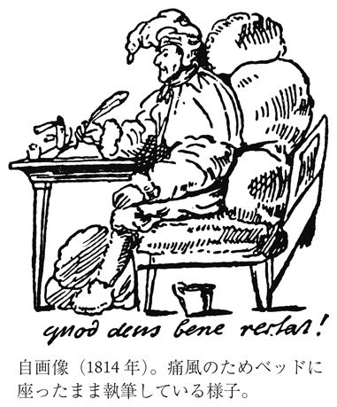
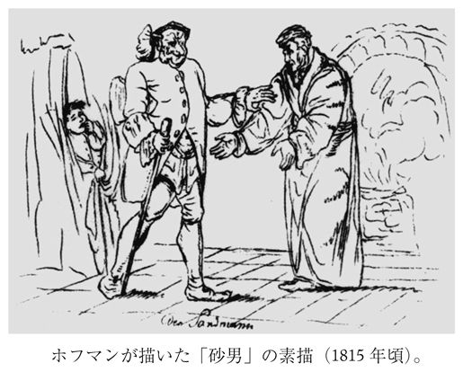

| 砂男／クレスペル顧問官 | |
| ホフマン | |
| (2014) | |
砂男／クレスペル顧問官
ホフマン
大島かおり訳
Title: Der Sandmann
1816
Rat Krespel
1818
Die Abenteuer der Silvester-Nacht
1815
Author: E. T. A. Hoffmann
◎ご注意
本作品の全部または一部を無断で複製、転載、改竄、公衆送信すること、および有償無償にかかわらず、本データを第三者に譲渡することを禁じます。
個人利用の目的以外での複製等の違法行為、もしくは第三者へ譲渡をしますと著作権法、その他関連法によって処罰されます。
砂男／クレスペル顧問官
きっとみんな心配しているだろうね、長いあいだ――ほんとに長いあいだ、便りをしなかったから。母さんは怒っているだろうし、クララはぼくがここで面白おかしく暮らしていて、ぼくの胸ふかく刻みこまれていた愛しい天使の面影を、きれいさっぱり忘れてしまったと思っているかもしれない。――でも、そんなことがあるものか。毎日、毎刻、きみたちみんなのことを思っているし、ここちよい夢には、ぼくのかわいいクララの懐かしい姿があらわれて、ぼくがきみたちのところへ行くといつもそうだったように、あの澄んだ目でやさしく微笑みかけてくる。――ああ、こんなに心がずたずたに引き裂かれていて、どうしてきみたちに手紙を書けただろうか！ このあいだから頭がすっかり混乱しているんだ。――恐ろしいことがぼくの生活に闖入してきた！ 迫りくる厭わしくもおどろおどろしい運命の暗い予感が、黒雲のようにぼくの頭上にひろがって、一筋のなごやかな陽光も通してくれない。
なにが起きたのか、きみに話さずばなるまいね。話さなくてはいけない、それはわかっている。ところがそう考えるだけで、そいつがぼくの内側から狂ったような笑い声を放つのだ。――ああ、愛するロータル！ 数日まえに起きたことをいくらかでもきみにわかってもらうには、どこから始めたらいいのだろう。じっさいその出来事が、ぼくの生活をこんなにも憎々しげにぶち壊してしまったのだ！ ここにいてくれさえすれば、きみ自身で見ることができるだろうに。でもきっといまのきみは、ぼくのことをばかげた妄想家だと思うだろうね。
手短に言うと、いくら振り払おうとしても振り払えない死ぬほど恐ろしい印象をぼくにのこした事件というのは、数日まえ、つまり一〇月三〇日の正午一二時、晴雨計（１）売りがぼくの部屋へ来て、商品を売りつけようとした、それだけのことなんだ。ぼくがなにも買わず、階段から突き落とすぞと脅すと、やつは自分のほうからさっさと出ていった。
きみは感づくだろうね、こんな出来事が重大な意味をもってしまうのは、ぼくの人生に深く刻みこまれたなにかとくべつな事情のせいにちがいない、だからあのみすぼらしい行商人の姿が、ぼくをこれほど怯えさせるのだろう、と。事実、そのとおりなのだ。できるかぎり心をしずめて、冷静に辛抱づよく、ぼくの幼いころの話をしよう、きみの明敏な感覚にすべてがくっきりとした映像となって浮かびあがってくるように。いざ話しはじめようとすると、きみの高笑いと、「ほんとになんて子どもっぽい！」というクララの声が聞こえてくる。いいとも、笑ってくれ、肚の底からぞんぶんに笑ってくれ！ ぜひとも、そうしてほしいよ！ だがなんてこった！ そう頼んでいるぼくは、髪の毛が逆立っているんだ。フランツ・モールが狂わんばかりの絶望にかられて、笑いとばしてくれとダニエルに頼んだときのように（２）。――さて、本題にはいろう！
ぼくも妹たちも、昼食時のほかは、昼間に父の姿を見かけることはほとんどなかった。仕事で忙しかったのだろう。夕食は昔ながらの習慣どおり七時にはもう食卓に並べられ、それがすむと、みんな、母もいっしょに、父の書斎へいって丸いテーブルをかこんですわった。父はパイプで煙草をふかし、大きなグラスでビールを飲んだ。よくぼくたちに、たくさんの不思議な話をしてくれたが、それに熱中するあまり、いつもパイプの火が立ち消えてしまう。するとぼくが火を点じた紙縒を手にもって、父がパイプに火をつけなおすあいだ差し出しているのだが、この役目はそのころのぼくにはいちばんのたのしみだった。けれども、ぼくたちには絵本をあてがっておいて、自分は肘掛椅子に黙ってすわったまま、みんなが煙のなかで泳いでいるようになるほど、やたらと煙草をふかしているばかりのこともよくあった。そういう晩には、母はとても悲しそうで、九時を打つか打たないかの時間になると、もう言うのだ。
「さあ、子どもたち！ ベッドへ！ ベッドへ！ 砂男がきますよ、ほら、もうその気配がする」
そう言われるといつもほんとうに、階段をゆっくりのぼってくるなにか重たげな足音が聞こえてくる。砂男にちがいない。あるとき、どたりどたりとひびくその足音がとりわけ不気味に感じられて、ぼくたちを寝室につれてゆく母に訊いた。
「ねえ、ママ！ いつもぼくたちをパパのところから追いだす意地悪な砂男って、いったい何者なの？ どんな姿をしてるの？」
「砂男なんていないのよ、坊や」と母は答えた。「砂男がくるって、わたしが言うのはね、あなたたちがもう眠くて、砂をかけられたときみたいに目が開けていられなくなった、ということ。それだけのことよ」
母の答えにぼくは納得しなかった。それどころか子ども心に、母がそう言うのはぼくたちを怖がらせないためだという考えが、はっきりひろがってしまった。あいつが階段をのぼってくる足音はいつも聞こえてくるじゃないか。好奇心にかられ、砂男のこと、そいつがぼくたち子どもとどういう関係があるのかをもっと知りたくて、いちばん末の妹のお守りの婆やに、砂男ってどういうやつなのか、とうとう訊いてしまった。
「まあ、ナターナエル坊ちゃん、ご存知なかったんですか？ そりゃ悪いやつでしてね、子どもがベッドに入りたがらないと、そいつがやってきて、両手いっぱいの砂をその子の目に投げつけるんですよ。すると眼ん玉が血だらけになって飛び出すから、それを袋に入れて半月にある住みかにもってかえって、自分の子どもたちの餌にする。半月の巣には、フクロウみたいに先の曲がったくちばしの子たちがいましてね、言うことをきかない人間の子の眼ん玉をつついて食べてしまうんですよ」
これを聞いてぼくの心の中に、ぞっとするほどなまなましく残酷な砂男の像ができあがってしまった。夜になって階段にずしんずしんと足音がひびくと、不安と恐怖にふるえだした。どんなに母がなだめても、泣きじゃくりながら「砂男だ！ 砂男だ！」と叫ぶばかり。ぼくは寝室へかけこみ、夜どおし、砂男の幻に悩まされたものだ。
そのうちに、婆やが話してくれた砂男だの、半月の巣にいるその子どもたちだのというのは、ほんとうの話ではあるまいと悟るほどの年齢にはなったものの、それでも砂男はぼくにとって依然として恐ろしい妖怪で、そいつが階段を上がってくるばかりか、父の部屋のドアを乱暴に引きあけて中に入る音が聞こえると、恐怖に――身の毛がよだつ思いにとらわれた。ときには、長いことまったく訪れてこないこともあったが、そのうちにまたしげしげとやってくる。こういうことが何年もつづいたが、ぼくはその不気味な妖怪に慣れることができず、心のなかのおぞましい砂男の像も色褪せはしなかった。そいつが父と付き合っているという事実が、ぼくの想像力をますますかきたてるようになったが、それについて父にたずねることは、どうにも気おくれしてできなかった。けれども自分で――自分で秘密をみきわめたい、伝説じみた砂男をひと目見たいという気持は、年ごとにたかまってきた。不思議なもの、奇想天外なものというのは、もともと子どもの心に巣くいやすいものだが、砂男がそういう軌道にぼくを連れ込んでしまっていた。ぼくのなによりのお気に入りは、山の精や、魔女や、こびとなどの気味悪い話を聴いたり読んだりすることだったが、なんといっても砂男がいちばんで、その醜悪奇怪な姿をテーブルといわず、戸棚といわず、壁といわず、いたるところに白墨や木炭で落書きしたものだ。
一〇歳になると、母はぼくを子ども部屋から、父の部屋にほど近い廊下に面した小部屋に移らせた。そのころでもまだ、九時が鳴って、あのだれとも知れぬやつの足音が聞こえると、すぐさまぼくたちは父の部屋から追い立てられた。ぼくの部屋からは、やつが父の部屋に入ってゆくのが聞きとれたし、しばらくすると、かすかな、妙な臭いの煙が家じゅうにひろがってゆくような感じがした。好奇心がつのるとともに、なんとかして砂男に近づいてみたいという大胆な気持もつよまった。何度もぼくは、母が行ってしまうと急いで廊下に忍びでてみたけれど、なにもうかがい知ることはできなかった。姿が見えるはずの場所にたどりついたときには、砂男はもうドアの中へ入ってしまっていたのだ。そのうちとうとう我慢しきれなくなって、ぼくは父の部屋にかくれて砂男を待ち伏せしようと心を決めた。
ある晩、父が黙りこみ、母が悲しそうなのを見て、きょうは砂男が来るなと察しがついた。そこで、眠くてたまらないという口実で、九時にならないうちに書斎を出て、ドアのすぐそばの物かげに身をひそめた。玄関のドアがきしみ、ホールを通って、のろのろとした重い足音が階段へ向かっている。母が妹たちを連れて、ぼくのまえを急いで通りすぎた。そっと――そっと父の部屋のドアを開けてみた。父はいつものように、ドアに背を向けて無言で身じろぎもせずに座っていて、ぼくに気がつかない。すばやく中に入って、カーテンのかげにすべりこんだ。ドアのすぐわきの、扉のない父の衣裳戸棚に引いてあるカーテンだ。――近づいてくる――足音がずしんずしんとこっちへ来る――咳ばらい、唸ったり呟いたりする妙な音。ぼくの心臓は不安と期待でどきどきと鳴った。――いよいよドアのすぐまえで、いちだんとはっきりひびく足音――把手が乱暴に押されて、ぱっとドアが開く！ 勇気をふるって、ぼくは用心ぶかくのぞきみた。砂男は部屋のまんなかで父のまえに立ち、その顔を灯火の明るい光がまともに照らしていた！ 砂男、恐るべき砂男というのは、よくうちへ昼食を食べにくる老弁護士コッペリウスではないか！
しかしどんなに恐ろしい怪物だろうと、ほかならぬこのコッペリウスほど、ぼくの恐怖をかきたてはしなかっただろう。――ひとつ、こんな姿を思い描いてみてくれ。いかつい肩に、不格好なでかい頭をのせた大男で、顔は黄土色、もじゃもじゃの灰色の眉、その下ではネコの目みたいに緑色に光る両の眼玉が刺すような光を放ち、がっしりした大きな鼻は上唇のあたりまで突き出ている。ひんまがった口は、しょっちゅう悪意にみちた笑いを浮かべるのだが、そういうときは頰に二つ三つ、赤黒い染みがあらわれ、歯ぎしりのようないやな音がもれてくる。コッペリウスの着ているものはいつも時代遅れな仕立ての灰色の上着に、同じ色のチョッキとズボンだったが、靴下と留め金つきの靴は黒だった。小さな鬘は、つむじのうえまで届くか届かないかで、油で固めた捲毛が大きな赤い耳の上で突っ立ち、幅広の袋でつつみこんだ後髪が首から反りかえっているせいで、襞付襟飾りの銀の留め金が見えてしまっていた。姿全体がそもそもいやらしくて不快だったが、ぼくたち子どもがとりわけ嫌ったのは、大きくて骨張った毛むくじゃらの手で、その手がふれたものには、もうとてもさわる気がしなかった。彼はそのことに気がついていて、おもしろがって意地悪をする。やさしい母がぼくたちのお皿にそっとのせてくれたケーキだの甘い果物だのに、なにかと口実をつけてさわるのだ。ぼくたちはせっかくの好物も吐き気がするほど気持わるくて食べる気がせず、目に涙を浮かべるばかりだった。お祝いの日に父が甘いぶどう酒を小さなグラスに注いでくれたときなども、同じいやがらせをされたものだ。あの手をグラスの上にさっと差しのべたり、どうかするとグラスを青白い唇のところにもっていったりさえして、ぼくたちが声もなく泣くことでしか憤懣をあらわせないでいるのを見ては、悪魔のような笑い声をたてるのだった。彼はぼくたちのことをいつもガキどもとしか呼ばなかった。彼のいるとき、ぼくたちはひとことも口を利くことを許されず、ほんのわずかな愉しみさえわざと台無しにしてしまうこの醜悪で意地悪い男を、しんそこ呪っていた。母もこの不快なコッペリウスを憎んでいるらしかった。彼があらわれると、母のいつもの快活さ、天衣無縫の明るさが、たちまち悲しげで陰気なしかつめらしさに変わってしまう。父はこの男にたいして、相手がまるでいちだんと偉い人物であるかのように、どんな不作法な仕うちを受けようとじっと我慢しなくてはいけない、手を尽くして愛想よくもてなさなくてはならない、という態度をとった。相手がそれとなく仄めかすだけで、すぐさま好物が料理され、珍品のぶどう酒がうやうやしく勧められるのだった。
そのコッペリウスをいま目のまえに見て、この男をおいてほかに砂男がありえようかとぼくは実感し、心の底からふるえあがった。しかしこうなると砂男はもはや、婆やのおとぎ話のような、半月のフクロウの巣に人間の子どもの眼玉を餌としてもちかえる化けものなどではなくなった――そんなものではない！ そいつが足を踏み入れるところどこにでも、悲嘆を――苦難を――現世でも彼岸でも永劫の破滅をもたらす憎むべき妖怪なのだ。
ぼくは呪縛されたように見入っていた。見つかればひどい罰を食うぞと、はっきり思ったものの、そこに釘付けになったまま、カーテンのすきまから頭を出してようすをうかがっていた。父は丁重にコッペリウスを迎えた。
「さあ！ 仕事だ」
コッペリウスはしわがれ声でこう叫ぶと、上着を脱ぎすてた。父も黙ったまま暗い顔つきでナイトガウンを脱ぎ、ふたりは長くて黒い上っ張りを着た。どこから出してきたのかは、ぼくは見落とした。父が壁にはめ込んである両開き戸棚をあけた。ぼくは戸棚だとばかり思い込んでいたのだが、じっさいはむしろ暗い洞穴のようなもので、そこに小さい炉がしつらえてあった。コッペリウスがそこに近づき、やがて青い炎が音をたてて燃え上がった。ありとあらゆる奇妙な器具があたりに並んでいる。ああ、なんと！ 火のほうに身をかがめた老いた父の顔が、変わりはてているではないか。いつもの穏やかで実直そうな顔つきが苦痛にひきつって、おぞましい悪魔の顔のように見える。コッペリウスそっくりだ。そいつのほうは、真っ赤に灼けた火挟みを振りあげ、もうもうたる蒸気の中からきらきら光るなにかのかたまりを取り出すと、それをハンマーでせっせと打ちはじめた。すると、そのまわりにずらりと人間の顔が浮かびでてくるのが見える気がした――ただし目のない顔、眼窩がぽっかりと深く暗い穴をあけているだけの顔。
「眼玉をよこせ、眼玉を！」
コッペリウスの低い叫びがとどろいた。ぼくは恐怖のあまり悲鳴をあげるなり、どうと床に倒れて、かくれ場所から身をさらけだしてしまった。するとコッペリウスはぼくをむんずとひっつかんで、「ガキだ！ このガキめ！」と歯をむき出して笑いながら、ぼくを炉のほうへ投げとばした。炎でちりちりと髪が焦げた。
「これで眼玉が手に入ったぞ――眼ん玉だ――ひと組そろった子どもの眼ん玉だ」
こうささやくと、コッペリウスは炎のなかから真っ赤に灼けた砂粒をつかみだして、ぼくの目に振り入れようとした。すると父が両手を高くさしあげて哀願した。
「先生！ 先生！ やめてください、ナターナエルの目ばかりは！」
コッペリウスはけたたましく笑って叫んだ。
「それならこの坊主の目は勘弁してやるか。その目でたんと涙を流すがいいさ。だが手足の仕掛けは、このさいよく調べてみることにしよう」
そう言うと彼は、関節が音を立てるほど強くぼくのからだをつかむなり、手や足をねじってはずしては、べつのところに嵌めようとあっちこっち試しはじめた。
「どこにもうまく嵌まらんな！ やっぱり元のままがいいようだ！ 親分（３）はちゃんと心得ていたんだな！」
コッペリウスはこんなことをぶつくさ言っていたが、ぼくのほうは、あたりがすっかり黒ぐろとした闇と化して、はげしい痙攣が五体をつらぬき――あとはもうなにも感じなくなった。
やわらかな温かい息吹がぼくの顔を撫で、死のような眠りからぼくは目覚めた。母がぼくのうえにかがみこんでいた。
「砂男はまだいるの？」
「いいえ、坊や、ずっとずっとまえに出ていったから、もうなにもしませんよ！」
母はそう言って、わが手に取りもどした愛しい子に接吻して抱きしめた。
なんでぼくはきみを退屈させているんだろう、愛するロータル！ 話すことはまだ山ほどあるのに、こんなにくだくだしく話していてはいけないね。要するに――ぼくはのぞき見していたのがばれて、コッペリウスにひどい目に遭わされ、不安と恐怖から高い熱を出して、何週間も寝ついてしまったというわけだ。「砂男はまだいるの？」――これがぼくの最初に口にしたまともな言葉で、恢復のしるし、一命をとりとめたしるしだったのだ。
あと一つだけ、幼いころのいちばん恐ろしかった瞬間のことを話させてくれないか。そうすれば信じてもらえるだろう、いまのぼくにはすべてが灰色にしか見えないのは、ぼくの目がどうかしているからではなく、暗い宿命が現実にぼくの人生を暗雲でおおってしまっているせいで、その雲のとばりは、おそらく死を覚悟しなければ引き裂くことができないということを。
コッペリウスはそれっきり姿をみせなくなった。この町を立ち去ったという噂だった。
一年もたっただろうか、ぼくたちが昔から変わらぬ習慣どおり、丸テーブルをかこんですわっていた晩のことだ。父はとてもご機嫌で、若いころ旅で見聞きした愉快な話をいろいろとしてくれた。ところが九時を打ったとたんに、不意に玄関のドアがきしんで、鉄のように重い足音が、ゆっくりとホールを抜けて階段へさしかかるのが聞こえた。母が蒼白になって言った。
「コッペリウスだわ」
「そう！ コッペリウスだ」
父も力のないかすれ声でおうむ返しに言った。母の目から涙があふれでた。
「でも、お父さん、お父さん！ どうしてもなさいますの？」
「これが最後だ！ 彼がここに来るのはこれが最後なんだ。約束するよ。さあ、行きなさい、子どもたちをつれて！ ベッドに入るんだよ、おやすみ！」
ぼくは重く冷たい石の中に押しこめられたかのようで、息がつまった！ からだをこわばらせて立っていると、母が腕をとって言った。
「おいで、ナターナエル、さあ！」
ぼくは引っ張られるままにそこを出て、自分の部屋に入った。
「心配しないで、さあ、寝なさい！ 眠るのよ――眠るのよ」
母がうしろから声をかけてくれた。しかし言いようのない不安と動揺にさいなまれて、眠れない。ぞっとするほど憎らしいコッペリウスが、目をぎらぎらさせ、にったり薄笑いを浮かべて、ぼくのまえに立ちはだかっている――いくら追い払おうとしても、この幻が消えないのだ。もう夜中になっていただろうか、大砲をぶっぱなしたようなすさまじい大音響がとどろいた。家ぜんたいが鳴動し、ぼくの部屋のドアのまえを走りすぎる足音、つづいてがちゃんと玄関のドアが閉じる音がした。
「コッペリウスだ」
ぼくはそう叫んで、ベッドからとびだした。すると、耳をつんざく悲鳴が聞こえ、ぼくは父の部屋にかけつけた。ドアはあけっぱなしで、息のつまりそうなもうもうたる煙がぼくをむかえ、女中が中で叫んでいる。
「ああ、旦那さまが！ 旦那さまが！」
煙を吐く炉のまえの床に、父が煤でくろずんだ顔を醜くゆがめて、死体となって倒れていた。そのまわりで妹たちが泣きわめき、母はかたわらで気を失っていた。
「コッペリウス、呪われた悪魔め、おまえがお父さんを殺したんだな！」
ぼくはこう叫ぶなり意識を失った。
二日後、父の遺体が棺におさめられたときには、その顔は生前と変わらぬ穏やかな、やさしい表情をたたえていた。悪魔のコッペリウスとの盟約も父を永劫の破滅に突きおとしはしなかったのだと、ぼくの心は慰められた。
爆発は近所の人びとの眠りを覚ましてしまったので、事件は世間の噂にのぼり、その筋の耳にも達した。当局はコッペリウスを召喚して責任を追及しようとしたが、当人は跡かたもなく姿をくらましてしまっていた。
愛する友よ、これだけ話したうえで、あの晴雨計売りの男がだれあろう、あの呪わしいコッペリウスだと言えば、ぼくがこの仇敵の出現を重大なわざわいのもとだと解釈しても、むりはないと思ってくれるだろうね。身なりこそ変わっていたが、コッペリウスの姿と容貌はぼくの心の奥底に深くきざみつけられていて、まちがえようがないのだ。しかもコッペリウスは名前を変えることすらしていない。聞くところによると、あの男はこの町ではピエモンテの光学機器商だというふれこみで、ジュゼッペ・コッポラ（４）と名乗っているそうだ。
ぼくは決心している。やつに断固相まみえて、なんとしても父の仇をとってやる。お母さんには、この怪物の出現のことを話さないでおいてくれないか――ぼくの愛するやさしいクララによろしく。もっと気持がおちついたら、クララにも手紙を書く。ではごきげんよう。
ほんとうに長いことお便りをくださいませんでしたね。でもわたしのことをいつも思い出し、考えていてくださると信じています。このあいだのお手紙は、兄のロータル宛に出すおつもりだったのに、上書きには兄ではなくわたしの名が書いてありましたもの、きっとわたしのことをまざまざと思い浮かべていらしたのね。よろこんで封を切ったのですが、「ああ、愛するロータル！」という言葉で、はじめてまちがいに気づきました。――その先は読まずに、手紙を兄に渡すべきだったでしょう。でも、あなたはよく子どもっぽくふざけて、きみはいやに落ち着いた女らしい性質で、家がいまにも崩れそうなときでも、窓のカーテンの襞の乱れを直してから逃げるような女だと、悪口をおっしゃったけれど、今度ばかりはそうはいきませんでした。最初の部分を読んで、すっかり動転してしまったのです。息がつまり、目さきで光がちらちら揺れました。
ああ、愛するナターナエル、どうしてこんな恐ろしいことがあなたの人生に入りこんできたのでしょう！ あなたと切り離される、もう二度と会えない、そういう思いが赤く灼けた短剣のように胸を貫きました。――わたしは先へさきへと読みつづけました！ いとわしいコッペリウスの描写にはぞっとします。いまはじめて、あなたのお父さまがそんな無惨な最期をとげられたことを知りました。お手紙を本来の受取人、兄のロータルに渡したところ、兄はわたしの不安をしきりと宥めようとしましたが、あまり効き目はありませんでした。忌まわしい晴雨計売りのジュゼッペ・コッポラがたえずわたしのあとに付きまとい、恥ずかしながら白状しますと、わたしの健やかな、いつもはごく平穏な眠りすら奪って、ありとあらゆる奇妙な悪夢でわたしをさいなみました。でもまもなく、もう翌日には、気持がすっかり変わりました。わたしの大切な方、もしロータルがあなたへの手紙に、あなたがコッペリウスにひどい目にあわされそうないやな予感に苦しめられているのに、わたしのほうはいつに変わらず朗らかで屈託がないと書いたとしても、どうか気をわるくしないでくださいね。
率直にわたしの考えを申しましょう。あなたの言う恐ろしいこと、ひどいことというのはすべて、あなたの内面だけで起こったことで、まことの現実の外的世界は、ほとんどそれに関わりがないように思えます。コッペリウスという老人は、たしかにとてもいやな人だったかもしれない。しかも子ども嫌いだった。それがあなたたち子どもに、ほんとうの反感を呼びさましてしまったのです。
もちろん、あなたの幼い心のうちで、婆やのおとぎ話の怖い砂男が、そのコッペリウスという老人と結びついてしまったのでしょう。砂男なんて信じていなくとも、あなたにとってコッペリウスはやはり気味のわるい、子どもにはとくに危険な怪物に思えたのですからね。夜ふけて、あなたのお父さまとなにか得体のしれないことをしていたというのは、きっと二人でひそかに錬金術の実験をしていたにちがいありません。お母さまはそれがお気に召さなかった、なにしろお金がたくさん浪費されたでしょうし、そのうえ、そういう実験家のつねとしてお父さまの心も、より高い叡智をめざすという、人を惑わしがちな衝動にみたされて、家族には背を向けてしまわれたでしょうから。お父さまはおそらく、ご自分の不注意によって死を招いてしまったのであって、コッペリウスのせいではないでしょう。じつは昨日、近所の経験ゆたかな薬剤師に訊いてみたのです、化学実験であのように瞬時に人を殺してしまうような爆発が起こりうるものかどうか、と。その人は、もちろんだと言って、そのわけを専門家らしくことこまかに説明してくれて、聞いたこともない珍しい発音の薬品名をたくさん挙げていましたが、わたしにはとても憶えきれませんでした。
でもあなたはいま、こんなことを言うあなたのクララにむかっ腹を立てて、こうおっしゃるでしょうね。
「こういう冷たい心には、しばしば人間を見えない腕でかきいだく神秘の光は、ひとすじも射し込むことがない。こういう女は世界の華やかな表面しか見ず、幼稚な子どものように、外見ばかり金色にかがやく果実をよろこんで、その中に死をもたらす毒が隠されていることに気づかないのだ」
ああ、わたしの愛するナターナエル！ 陽気で――屈託のない――のんきな者の心にも、わたしたちを破滅させようとわたしたち自身のなかでうごめく暗黒の力を、察知する勘はそなわっていると、信じてはくださらないの？ でも、わたしみたいな単純な娘が生意気なことを言うのを許してくださいね、内面のこういう闘いについてどう考えているのか、なんとかあなたにお伝えしたいのです。――でも結局は、ぴったりした言葉がみつからなくて、あなたに笑われてしまうでしょうけれど、それはわたしの考えがばかげているからでなく、表現がつたないせいなのです。
暗黒の力というものがあるとしましょう。ひじょうな敵意と背信をもって、わたしたちの内面にひとすじの糸を送りこみ、その糸でわたしたちをがんじがらめにして、ふつうならけっして足を踏み入れない危険な破滅への道に引きずりこむ――そういう力があるとしたら、それはわたしたちの中で、わたしたち自身とおなじ姿になる、そう、自我そのものになるにちがいありません。なぜなら、そうなってはじめて、わたしたちはその力を信じ、それが内密の仕事を遂行するのに必要な場所を、空けてやるからです。もしわたしたちが、曇りない生活を送ることで強められた確かな分別をもち、外からの邪悪な力が手をのばしてきてもそれを見破り、自分の素質と職分が指し示す道をおちついた足どりで進んでゆくならば、そのような怪しい力はいくらもがいても、わたしたち自身の鏡像たるべき姿をとることはできないのです。ロータルの言葉を付け加えると、
「たしかに、こうも言えるね、われわれが自分自身の中に入りこんだ暗黒の自然力に自己をゆだねてしまうと、外界でたまたまでくわした異形のものの姿を、自分の内面に引き入れてしまうことがよくある。そういうときわれわれは、われとわが精神に火を点じているにすぎないのだが、奇妙な錯覚にとらわれて、あたかもその異形のものが語りかけてくるかのように思いこむ。それはわれわれ自身の自我の幻影なのに、その内的親和力と、心情への深い作用が、われわれを地獄に落としもすれば、天国に遊ばせもするのだ」
お気づきでしょうが、ナターナエル！ わたしたち、兄のロータルとわたしは、もろもろの暗黒の力と支配力について、いろいろと話し合いました。その要点をここに少なからず苦労しながら書いてみたのですが、とても深い意味があるのを感じます。ロータルの最後の言葉は、完全にはわからなくて、わたしは漠然と察するだけなのですが、ほんとにその通りだという気がします。どうかお願いですから、醜い弁護士のコッペリウスだの、晴雨計売りのジュゼッペ・コッポラだのを頭からきれいさっぱり追い払ってください。そしてそのような異形のものは、あなたにたいしてなんの力もふるえないという確信をもってください。邪悪な支配力を信じてしまうことが、とりもなおさずじっさいに邪悪なことをさせてしまうのです。あなたの手紙の一行一行から心の深い動揺が聞こえてくるのでなかったなら、そしてあなたの身を案ずるあまり、わたしの魂の奥底が痛みに疼くのでなかったなら、ほんとうに、弁護士の皮をかぶった砂男だの、晴雨計売りに化けたコッペリウスだのなんて、冗談のたねにしてしまうところです。
どうか元気をだして――晴れやかに！ わたしはあなたの守護精霊になって、あなたのそばにあらわれることにしましたよ。もしも憎らしいコッポラがあなたの夢を乱そうとしようものなら、大声で笑って追っ払ってあげましょう。そんな男の気味わるい手なんて、ちっとも怖くない。弁護士になってお菓子をだいなしにしたり、砂男になって目に砂をかけたりなんて、させるものですか。
永遠に、心の底から愛してやまないナターナエルへ......
このあいだきみに宛てたぼくの手紙を、むろんぼくの迂闊さが原因だが、クララが封を切って読んでしまったとは、まずいことになったものだ。彼女はなかなか思慮ぶかい哲学的な手紙をくれたよ。コッペリウスやコッポラはぼくの内面に存在するだけの、ぼくの自我の幻影であって、ぼくがそれとして認識するならばたちまち雲散霧消すると、詳細に論証してあった。じっさいのところ、信じられないじゃないか、あのように明るくて、やさしい微笑をたたえた子どものような瞳の奥から、愛らしく甘い夢のように輝きでる精神が、これほど理性的で、学者先生も顔負けするほど立派にものごとの判別ができようとは。きみの言葉も引き合いに出しているよ。きみたちはぼくのことを話し合ったんだね。きっときみは論理学の講義でもして、ものごとをきちんと精査し識別することを教えたのだろう。
まあ、それはいいとしておこう！ ところで晴雨計売りのジュゼッペ・コッポラのことだが、彼が例の老弁護士コッペリウスと同一人物でないのは、たしかなようだ。ぼくは最近赴任してきたばかりの物理学教授の講義を聴いているが、この人はあの有名な科学者スパランツァーニ（５）と同名で、やはりイタリア系だ。この教授がコッポラとは何年もまえからの知り合いで、それに教授の発音を聴いていると、たしかにピエモンテの人だとわかる。コッペリウスはドイツ人だった。ただし法的にほんとうのドイツ人ではなかったような気がするがね。だから完全に安心とはいかない。きみとクララにいくら陰気な夢想家だと思われようと、ぼくはコッペリウスのあの呪わしい顔の与える印象を、頭から拭い去れないのだ。彼がこの町を去ったとスパランツァーニから聞いて、ほっとしている。この教授はずいぶんと変わった人だ。小柄なずんぐりした男で、顔つきは、でっぱった頰骨、ほっそりした鼻、そりかえった唇、小さな射るような目。でもどんな描写よりも、なんとかいうベルリン絵暦に載っているホドヴィエツキー（６）描くところのカリオストロ（７）を見るのがいちばんだね。――あいつにそっくりなんだ。
つい先日のことだが、階段をのぼっていくと、いつもはガラス戸にぴったり引いてあるカーテンの端が少しばかり開いていた。思わず好奇心から中をのぞいてしまった。部屋の中には、すらりと背の高い、じつに均斉のとれた姿態の女性が、きれいな服を着て、小さなテーブルに腕をのせて両手を組んで座っていた。その位置がドアと向き合わせだったので、天使のように美しい顔がこっちからまともに見えた。むこうはぼくに気がつかなかったらしい、いや、そもそもその目はじっと据わったきりで、見えないのではないかと言いたいくらい、まるで目をあけたまま眠っているような感じだった。ぼくは気味がわるくなって、足音をしのばせてすぐ隣の講義室にすべりこんだ。あとで聞いたところでは、ぼくが見た人はスパランツァーニの娘、オリンピアで、教授は奇妙なことに、それにけしからぬことでもあるけれど、この娘を監禁していて、だれひとり彼女のそばに寄せつけないのだそうだ。――ひょっとすると彼女にはなにか仔細があるのか、白痴かなにかかもしれない。
なんでこんなことをくだくだしく書いているのだろう。きみに会ってじかに話せば、ずっとうまく、くわしく伝えられるのに。あと二週間したら、きみたちのところへ帰るよ。ぼくの愛する天使、ぼくのクララに、どうしても会わなくては。会えばぼくの不機嫌もけしとぶだろう。このむしゃくしゃした気分は（正直に言うと）、あのいやに分別くさい手紙をもらって以来、たえずぼくに襲いかかろうとするのだ。そういうわけで、クララには手紙を書かないよ。
敬具
好意ある読者よ！ わたしはいまあなたに、わが哀しき友、若き大学生ナターナエルの身におきた出来事を語ろうとしているのだが、これ以上に奇っ怪で不可思議な話は、こしらえあげようたって、できるものじゃない。お聴きくださる読者よ！ あなただって、なにかがあなたの心も感覚も思考もすっかり占領して、ほかのこといっさいを追い払ってしまうという体験を、おそらくしたことがおありだろう。それがあなたの内部で煮えたち沸きかえり、血液は灼熱の焰となって血管をかけめぐり、頰をいっそう紅に染めあげる。まなざしは、他人の目には見えないなにかの姿を虚空にとらえようとするかのように異様にぎらつき、口はなにを語ろうとしても暗い溜息になる。すると友人たちが問いかける。
「どうしたんだ？ なにごとなんだ？」
そこであなたは心に宿るその姿を、鮮やかな色と光と陰影ともども説明しようとして、きりだす言葉を必死にさがす。けれど最初の言葉はそれひとことで、生じたことがらの不思議さ、すばらしさ、恐ろしさ、おもしろさ、おぞましさを、全部ひっくるめて表現して、電撃のようにみんなの胸を打つものでなくてはいけない気がするのだ。ところが口に浮かぶ言葉はどれもこれも、生彩のない、冷えきった、死んだ言葉としか思えない。そこであせって言葉を探し、どもり、口ごもる。そして友人たちの月並みな質問が、冷たい風のようにあなたの中に吹き込んで、胸の焰は消えそうになる。でももしあなたが大胆な画家のように、まずは思いきった筆致で胸中の像の輪郭をさっと描いてしまえば、あとはそう骨を折らずにつぎつぎと鮮やかな色をぬりあげていける。こうして描かれた多彩な群像のいきいきとした姿は、友人たちの心を奪い、彼らもあなたと同様、あなたの胸中からあらわれでた光景のただなかに入りこんでいることに気づくのだ！
好意ある読者よ！ 正直に言うと、わたしはべつにだれからも若きナターナエルの話をしてくれと頼まれたわけじゃない。だがご承知のとおり、わたしは作家という珍奇な種族に属していて、この手の人間は、さっき話したようなものを胸にかかえていると、そばに近づく人という人に、いやそればかりか世界中の人びとに、「いったいそれはなんです？ 話してくれませんか？」と、せがまれているような気分になるのだ。そういうわけでわたしも、ナターナエルの悲惨な運命を読者に話さずにはいられなくなってしまった。この話の不可思議さ、奇っ怪さは、わたしの魂をそれこそ満杯にしているのだが、しかしそれだからこそ、おお、わが読者よ、あなたをすぐに話の不思議さ、それもちょっとやそっとではない異様さに耐える気にさせなくてはならないからこそ、わたしはナターナエルの物語をどう書き出したらいいか――意味深長に、独創的に、感動的に始めるにはどう書くか、さんざん頭を悩ましたのだ。
「むかしむかし、あるところに......」
どんなお話にでも結構このうえない書き出しだが、どうも味気がなさすぎる！
「Ｓという片田舎の小さな町に......」
このほうがいくらかましで、少なくともクライマックスへ向けての助走になる。それとも単刀直入法でいくか。
「『畜生、失せやがれ！』と、大学生ナターナエルが憤怒と恐怖にかられた凶暴な目つきをして怒鳴ると、晴雨計売りコッポラは......」
じっさい、わたしはこういうふうに書きはじめてみたのだが、学生ナターナエルの凶暴な目つきというのがいささか滑稽な感じがした。この物語はだんじてふざけた話なんかじゃない。でもわたしには、胸中の像のぎらつく色彩をほんのわずかなりとも反映できそうな表現が、なにひとつ思い浮かばなかった。そこで自分で書き出しを考えるのは止めにしようと決めたのだ。
好意ある読者よ！ 冒頭に掲げた三通の手紙は、友人のロータルが親切にも見せてくれたものだが、それらはわたしがこれから描く絵の下絵だと、見ていただきたい。わたしはそこに少しずつ色をぬるようにして話を進めていこう。ひょっとしたら上手な肖像画家のようにうまくいって、もとの人物を知らないあなたにも、ほんものに似ていると、それどころかわれとわが目で何度も見たことのある人物だと、思ってもらえるかもしれない。そうなれば読者よ、現実の人生ほど不思議で奇っ怪なものはない、詩人といえどもこの人生を、曇りガラスにぼんやり映った映像程度にしか捉えることはできないのだと、あなたも信じるようになるだろう。
まずは必要なことをもっとはっきり知ってもらうために、さきの手紙にいくらか付け加えておくとしよう。ナターナエルの父親の死後まもなく、遠縁にあたる人の子どもで、やはり親に死なれて孤児となったクララとロータルは、ナターナエルの母親に引き取られていた。クララとナターナエルは相思相愛の仲となり、およそ異議をはさむ者はだれひとりいなかったので、ふたりは婚約し、やがてナターナエルはＧ市の大学でさらに学業をつむために家を離れた。いま彼は最後の手紙にあるとおり、その町の有名な物理学教授スパランツァーニの講義を聴いているのである。
さて、これで安心して話を進められるはずなのだが、いまこの瞬間、クララの姿が目のまえに生きいきと浮かびあがってきて、彼女に会ってやさしくほほえみかけられるといつもそうだったように、目をそらすことができない。――クララはけっして美人とはいえなかった。職業柄、美にたいする眼識のある者がみんな、そういう意見だった。とはいえ、建築家たちは彼女の姿体のみごとな均斉をほめた。他方、画家たちは、うなじや肩や胸のあたりがいささか純潔にすぎて物足りないと言った。しかしだれでも一様に、マグダレーナ（８）のようなみごとな髪にほれこんで、これこそバトーニの色づかいさながらだと、さわぎたてた。そのうちの一人で正真正銘の夢想家などは、まことに奇想天外にも、クララの目をロイスダール（９）描くところの湖になぞらえて、雲ひとつない紺碧の空、花咲く野辺や森など、ゆたかな風景の明るく華やかないのちを、まるごと映す鏡だと言いだした。すると詩人や音楽家たちは調子づいて言ったものだ。
「湖だと――鏡だと？ それどころか。あの娘を見ているとき、あの瞳の奥から妙なる天上の楽の音がかがやきでてくるのが聞こえないというのか？ それがわれわれの心の奥に沁みいって、あらゆるものを目覚めさせ、突きうごかすじゃないか。そういうとき、われわれ自身はなにひとつ気の利いた歌をうたえないとしても、しかたない。それはクララの口もとを見てもはっきりわかるよ。われわれが歌のつもりで、なにやら囀ろうなんてすると、彼女の唇にかすかな笑みが浮かぶじゃないか」
たしかにそうだった。クララは明るく屈託のない無邪気な子どもの生きいきとした想像力と、女らしくやさしい豊かな情操と、たいへん聡明で鋭くものを見きわめる理性をそなえていた。たわごとを言う夢想家は、彼女が相手では勝負にならなかった。もともと寡黙な性質だから、口では多くを言わなかったが、彼女の澄んだ目とあのかすかな皮肉っぽい微笑がこう語っていたからだ。
「みなさん、そんな儚い幻をいのちある実在だと思えなどと、どうして要求なさるの？」
そのためクララを、冷たくて感情を欠く散文的な女だとわるく言う人は多かった。しかし人生を深くはっきりと解する人たちは、感性ゆたかで理解力もあり、しかも子どもらしいこの娘をこよなく愛したものだ。だがその点では、学問と芸術に明るく熱心に打ち込んでいるナターナエルをしのぐ者は、だれひとりいなかった。クララも心のすべてを傾けて恋人を愛していて、彼が家を離れたとき、はじめて彼女の人生に雲の影がさしたのだった。だからいま、彼がロータルへの手紙で約束したとおりに帰省して、母の部屋に入ってきたとき、クララはどんなによろこんでその腕にとびこんだことか。ナターナエルにも彼自身の予想どおりのことが起こった。クララに再会した瞬間、弁護士コッペリウスのことも、クララの分別くさい手紙のことももはや念頭になく、不機嫌は、たちまちけしとんでしまったのである。
とはいえ、ナターナエルが仲良しのロータルへの手紙に、自分の人生に忌まわしい晴雨計売りコッポラが悪意をもって踏みこんできたと書いたのは、ほんとうのことだった。だれもがそれを感じた。帰省して二、三日とたたないうちに、ナターナエルの人柄がすっかり変わってしまっているのがわかったのだ。陰鬱な顔をして夢想にふけっていて、やがてはそれが、これまでの彼には一度もなかったほどの異常さに達した。いっさいが、全生活が、彼には夢と予感だけになってしまった。口を開けばいつもいつも、人間はだれしも自分は自由だなどと思っていたって、じつは暗黒の力の軛につながれて恐ろしい芝居をやらされているにすぎない、いくら抵抗したって所詮むだなこと、おとなしく運命の定めに従うよりほかない、などと言う。ついには、芸術や学問においても、おのれの自由な意志で創造ができると信じるなんぞ愚の骨頂だ、なぜなら、感激というものがあってこそ創造は可能となるのだが、その感激は自分の内部から生ずるのではなく、われわれの外にあるなんらかの、より高い原理の働きかけによって生まれるのだ、と主張するしまつ。
分別のあるクララは、こういう神秘的な熱狂がいやでたまらなかったが、反駁してもむだだろうと思えた。ただナターナエルが、コッペリウスは悪の原理だ、自分がカーテンの陰からのぞき見した瞬間にそれが自分に取り憑いてしまったのだ、この忌まわしいデーモンは自分たちの恋のしあわせを恐ろしいやり方で壊してしまうだろう、と言ったときばかりは、彼女もさすがに厳しい顔になって言った。
「ええ、ナターナエル！ おっしゃるとおりコッペリウスは仇をなす悪の原理で、目に見える姿となって生活に踏みこんでくる悪魔のように、恐ろしいことをするかもしれない。でもそれは、あなたが彼を心と頭から追いはらわずにいる場合だけのこと。彼を信じてしまっているかぎり、彼は存在し、力をふるうのよ。あなたが信じこんでいる、それだけが彼の力となるのですもの」
ナターナエルは、クララがデーモンを彼の内面にしか存在しないものと見ていることに憤慨して、悪魔だの暗黒の力だのについてありったけの神秘論を開陳しようとしたが、クララがうんざりした顔で、どうでもいいような話をもちだして彼の気勢をそいでしまったので、おもしろくないこと甚だしかった。感受性にとぼしい冷たいやつに、こういう深い神秘がわかってたまるかと思ったが、クララがそういう低俗な人間だとはっきり意識したわけではなかったから、かの神秘論を彼女に伝授しようという試みは放棄しなかった。朝早く、クララが朝食の支度を手伝っているとき、彼はそのそばに立って、ありとあらゆる神秘論の書物をもちだして講義を聴かせるものだから、クララは言った。
「でも、ナターナエル、その悪の原理はわたしのコーヒーに害をなすって言いたいところだわ。――だってあなたの講義のあいだ、あなたの望むとおりになにもかも放り出して、あなたを見つめながら拝聴していたりしたら、コーヒーは噴きこぼれる、あなたたちの朝食はだいなしってことになるのよ」
ナターナエルは音を立てて本を閉じると、憤懣やるかたなく自分の部屋へ走り去った。これまでは、彼の書く優雅で生気あふれる物語には一種独特な魅力があって、クララもよろこんで耳を傾けたものだった。ところがちかごろの作品ときたら、陰気くさくて、訳のわからぬ抽象的な話ばかりで、クララは思いやりからそうは言わなかったものの、少しも心惹かれていないことは、彼も感じとっていた。クララがなによりも耐えがたいのは退屈さだった。そういうときは目にも話しぶりにも、抑えきれない精神的眠気があらわれてくる。ナターナエルの書くものは、事実ひじょうに退屈だった。彼のほうでは、クララの冷たい散文的な心情への不満がしだいにたかまり、クララのほうでは、ナターナエルの暗鬱で退屈な神秘主義にうんざりする気持が嵩じて、ふたりはそれと気づかぬうちに、心がますます離れていった。
醜いコッペリウスの姿は、ナターナエル自身そう認めざるをえなかったのだが、彼の想像力のなかでしだいに色褪せてゆき、ひじょうな努力をしないと、運命をあやつる恐るべき怪物として色鮮やかに作品に描き出すことは、むずかしくなってきた。そこでようやく思いついたのが、コッペリウスが彼の恋を邪魔するだろうというあの暗い予感をテーマに、詩をつくることだった。まず、固く愛情で結ばれた自分とクララを描く。そこへときおり、黒い魔の手が伸びてきて、花ひらきかけた歓びをむしりとってしまいそうな気配がする。ついにふたりが婚礼の祭壇のまえに立ったとき、恐ろしいコッペリウスがあらわれて、クララのやさしい目に触る。眼玉がナターナエルの胸に飛び込んできて、赤い火の玉のように胸を灼く。するとコッペリウスが彼をひっつかんで、燃えさかる火の環に投げこみ、火の環は疾風のように唸りをあげて回転しながら彼を拉し去る。そのとどろきは、白髪の巨人さながらに逆巻き泡だつ嵐の海の波濤のよう。だがその大音響の彼方からクララの声が聞こえてくる。
「わたしが見えないの？ あなたはコッペリウスに欺されたのよ。あなたの胸を灼いたのは、わたしの目ではなくて、あなた自身の心臓の血のしずく。――ほら、見て、わたしにはちゃんと目がある！」
あれはクララだ、とナターナエルは思う――ぼくは永遠に彼女のものだ。するとこの考えが火の環をがっしり抑えこんだかのように、環は動きをとめ、嵐のとどろきは暗黒の淵に消えてゆく。ナターナエルはクララの目をのぞきこむ。だがそこから親しげに彼を見ているのは、死神だった。
ナターナエルはこれを詩に書いているあいだ、とても落ち着いて冷静だった。一行ごとに推敲し、磨きをかけ、韻律上の約束ごとを忠実に守って、あらゆる音が美しく響きあうようになるまで、休まず手直しをつづけた。だがとうとう完成したとき、その詩を声にだして読んでみた彼は、身の毛もよだつ恐ろしさに叫び声をあげた。
「このぞっとする声はだれの声だ？」
ところがしばらくすると、こんどはどこもかしこもよく書けた詩に思えてきて、これならクララの冷たい心を燃え上がらせるにちがいないと考えた。もっとも、なんのために燃え上がらせるのか、恋を破壊する恐ろしい運命を予告する陰惨な詩で彼女をおびえさせるなど、そもそもなんのためにするのか、そこまではっきりとは考えていなかった。
ナターナエルとクララのふたりは、母の家の小さい庭の四阿に座っていた。クララは、ナターナエルが例の詩を書いていたこの三日間というもの、いつもの夢想やら予感やらで彼女を苦しめることをしなかったので、とても朗らかだった。ナターナエルも生きいきと楽しげで、以前のように愉快な話をあれこれと語った。そこでクララが言った。
「ようやく元どおりのあなたになった。あのいやなコッペリウスを、すっかり追いはらってしまったのね？」
こう言われてナターナエルは、詩を朗読して聴かせるつもりでポケットに入れておいたことを思い出した。そこですぐ原稿をとりだして、読みはじめた。クララは、どうせいつものように退屈なものだろうと覚悟をきめて、おとなしく編み物をはじめた。しかし陰鬱な雲がしだいにくろぐろと空を覆いはじめるところまでくると、彼女は靴下を編む手をおろし、ナターナエルの目をまじまじと見た。彼は自分の詩に心うばわれて、ひたすら読みつづけ、内なる焰に頰は赤く燃え、涙があふれ――ついに読み終えると、ぐったりと疲れて呻き声をあげ――クララの手をとって、身も世もない悲嘆の溜息をもらした。
「ああ――クララ――クララ！」
クララは彼をそっと胸に抱きよせて、しずかに、しかしゆっくりと真剣な声で言った。
「ナターナエル――わたしの大好きなナターナエル！ そんなとんでもない――無意味な――常軌を逸したおとぎ話は、火にくべてしまいましょ」
これを聞くとナターナエルは、かっとなってクララを突き飛ばすなり、立ち上がって叫んだ。
「きみはいのちのない自動人形だ！」
彼は走り去った。深く傷つけられたクララは、涙にむせんだ。
「ああ、あの人はわたしを愛してくれたことなんてなかったんだわ。わたしのことを、ひとつもわかってくださらない」
ロータルが四阿に入ってきた。クララはいましがたのことを話さないわけにいかなかった。ロータルは妹を心から愛していたから、彼女の訴える言葉ひとことひとことが、火花のように心にふりかかり、空想にばかりふけっているナターナエルにたいしてまえから胸にくすぶっていた不満が、いっきに燃え上がってすさまじい怒りとなった。ナターナエルのところに駆けつけ、だいじな妹になんてひどい仕打ちをするのかと詰ると、いきり立ったナターナエルも激しい言葉で応酬し、一方が、夢に取り憑かれた狂人めと言えば、相手は、哀れむべき低俗な凡人よとやり返すありさまで、決闘が避けられぬ仕儀となった。ふたりは翌朝、庭のおくで、当地の大学生の流儀にしたがい、切っ先鋭い細身の剣で果たし合いをしようと取り決めた。
ものも言わず、暗い顔で、ふたりはうろうろと歩きまわっていた。クララは前日の激しい諍いを聞いていたし、介添人が夜の明けぬうちから剣をもってきていたのを見て、なにが起きるかを悟った。決闘の場にあらわれたロータルとナターナエルが、陰鬱な面持ちで、ものも言わずに上着を脱ぎ捨て、燃えるまなこに獰猛な闘志をみなぎらせて、いましもたがいに突きかかろうとしたその瞬間、クララが庭の戸口から駆けこんできて、涙ながらに大声で叫んだ。
「なんて野蛮な、ひどい人たち！ 決闘をするのなら、まずこのわたしを刺し殺してからにしてください。愛する人が兄を殺したり、兄に愛する人を殺されたりしたら、どうしてわたしが生きていられましょう！」
ロータルは武器をおろし、黙って地面に目を落とした。ナターナエルの胸は悲痛な思いにかきむしられ、うるわしい青春の最良の日々にクララに感じていた愛がいちどきによみがえってきた。凶器は手から落ち、彼はクララの足もとに身を投げた。
「赦してもらえるだろうか、ぼくの唯一の人、ぼくの愛するクララ！ 赦してくれるだろうか、愛するロータル兄さん！」
ロータルは友の深い苦悩に心打たれた。涙にむせびつつ、和解した三人はたがいをかき抱き、いつまでも心変わらず愛しあって、けっして離れまいと誓いあった。
ナターナエルは、自分にのしかかっていた重荷がふいにとれたような気持がした。彼を捉えていた暗黒の力に抵抗して、破滅にさらされた自分の全存在を救いだしたかのように感じたのだ。それから三日、彼は愛する人たちと睦まじく時を過ごしたのち、Ｇ市へもどっていった。あと一年そこにいてから、ふたたび故郷にもどって、ずっとそこで暮らそうと考えていた。
母親にはコッペリウスに関することはいっさい、伏せてあった。彼女もナターナエルとおなじに、夫の死をコッペリウスのせいだと信じていたから、恐怖の念なしには彼のことを思い出せないことがだれにもわかっていたからだ。
下宿先にもどろうとしたナターナエルは、その家がすっかり焼けおちて、瓦礫の山から剝きだしの防火壁ばかりがそびえ立っているのを見て、どんなに驚いたことか。火は一階に住んでいた薬剤師の薬局から出て、家を下から上へと焼いていったのだが、大胆な友人たちが火の回らぬうちに上階のナターナエルの部屋に突入して、書物や原稿や器具類を救いだしてくれていた。そしてそれらを全部、無事にべつの家へ運んで、そこに部屋を一つ確保しておいてくれたので、ナターナエルはさっそくその部屋に移った。そこはたまたまスパランツァーニ教授の家の向かい側だったが、ナターナエルはそれをさして気にも留めなかったし、彼の窓の真向かいに見えるのが、よくオリンピアがひとりで座っている部屋で、顔こそぼやけているものの姿ははっきり見てとれることに気がついたときも、とくにどうとも思わなかった。そのうち彼がいぶかしく思うようになったのは、しばしばオリンピアが何時間ものあいだ、いつかガラス扉からかいま見たときと同じ姿勢で、なにひとつせずに小さなテーブルのまえに座って、しかも明らかにじっとこちらに目を据えていることだった。たしかに正直なところ、これほど美しい容姿の人はいまだかつて見たことがなかったが、絶えずクララを想っている彼は、硬直したようにじっと動かぬオリンピアになどまるで関心を惹かれず、ときたま、教科書から目をあげて窓の向こうの美しい彫像をちらっと見る、それだけのことだった。
ちょうどクララに手紙を書いているときだった。ドアをそっと叩く音がして、どうぞと応えると、ドアが開いてコッポラのいやらしい顔がのぞいた。ナターナエルは胸の奥に戦慄をおぼえたが、スパランツァーニが同郷人コッポラについて語ったことや、自分が砂男コッペリウスに関して恋人にあれほど神かけて約束したことを思い出し、自分でも子どもじみた幽霊恐怖が恥ずかしくなって、むりやり気をとりなおして、できるかぎり落ち着いた声で言った。
「晴雨計はいりませんよ。お帰りください！」
だがコッポラはすっかり部屋の中に入りこんでいて、大きな口を醜い笑いにゆがめ、灰色の長い眉毛の下から小さな目を鋭く光らせながら、しわがれ声で言った。
「ほう、晴雨計はいらん、晴雨計はいらんとね！ だがきれいな眼ん玉もあるぞ――きれいな眼ん玉もな！」
ナターナエルはぎょっとして叫んだ。
「なんてばかな、どうして眼玉を？ 眼玉――眼玉だと？」
しかしもうそのときには、コッポラは晴雨計をわきにのけ、大きな上着のポケットから柄付眼鏡だの、ふつうの眼鏡だのをつかみだして、テーブルに並べはじめていた。
「さあ――さあ――眼鏡だ――眼鏡を鼻にのせてみるがいい、これがわしの眼ん玉じゃ――きれいな眼ん玉だぞ！」
こう言いながら次から次へと眼鏡を取り出すので、テーブルの上は一面、異様にきらきらしはじめた。無数の目がナターナエルをにらんでぎろぎろと光り、痙攣するようにまばたく。でも彼はテーブルから目をそらせない。コッポラはまだまだ眼鏡を並べつづけ、それらの焰のようなきらめきはますます強烈となり、乱舞しながらナターナエルの胸に血のように赤い光を投げつける。彼は恐怖にかられて叫んだ。
「やめてくれ！ もういい、恐ろしいやつだ！」
テーブルはもういっぱいなのに、まだ眼鏡を取り出そうとポケットに手を入れたコッポラの腕を、彼はつかんだ。コッポラはしわがれたいやな笑い声を立てて、軽くその手を払いのけながら言った。
「ほほう！ いらんのか――それなら、ここに上等のレンズがある」
彼はありったけの眼鏡をかきあつめてしまいこむと、脇ポケットから大小さまざまな望遠鏡を取り出した。眼鏡がなくなるとナターナエルはすっかり落ち着きをとりもどし、クララの言葉を思い出して、さっきの恐ろしい幻影は自分の内部からあらわれでたにすぎないと考え、コッポラはごくまともな光学機器商であり眼鏡屋であって、けっしてコッペリウスの呪わしい分身でも幽霊でもありえないと思った。それにコッポラがいまテーブルに並べた望遠鏡にしても、どこといって変わったところはなく、少なくともさっきの眼鏡のように気味わるくはなかった。そこでこれまでの埋めあわせに、コッポラからなにか買ってやろうと心を決めて、なかなかきれいな造りの小型の懐中望遠鏡を手にとり、具合をみるために目に当てて窓の外をながめた。生まれてこのかた、これほどものを鮮明にまぢかに見せてくれるレンズを手にしたことはなかった。なにげなくスパランツァーニの部屋をのぞいてみた。オリンピアがいつものように、小さなテーブルに腕をのせ両手を重ねてすわっている。――いまはじめてナターナエルに、オリンピアのすばらしく美しい顔かたちがはっきりと見えた。ただ目ばかりは、奇妙にすわったまま死んだように動かない。それでもレンズごしに目を凝らして眺めているうちに、オリンピアの目からしっとりと月の光がかがやきでてくるように思えてきた。まるでいまはじめて視力に灯がともったかのようだ。まなざしがしだいに生気を帯びて、きらきらときらめく。ナターナエルは窓辺に釘づけになったまま、この世ならぬ美しさにかがやくオリンピアを凝視しつづけた。咳払いと足で床をこする音に、彼は夢から覚めたようにわれに返った。コッポラがすぐうしろに立っている。
「三ツェキーニ――三ドゥカーテン（10）」
眼鏡屋のことを忘れていたナターナエルは、言われた金額をいそいで払った。
「どうだね？ いいレンズ――いいレンズだろう！」
コッポラが例の耳障りなしわがれ声と陰険な薄ら笑いでたずねる。
「そう、そう、たしかにね！」と、ナターナエルはうんざりして答えた。「では、これで、さようなら！」
コッポラはナターナエルに何度も奇妙な流し目を送りながら部屋を出ていった。階段で声高く笑っているのが聞こえた。
「そうか」と、ナターナエルは考えた。「こんなちっぽけな望遠鏡に高い金を払いすぎたので、おれのことを笑っているんだな――払いすぎたぞ！」
この言葉を低くつぶやいたとき、部屋の中に死のみぎわの深い吐息がひろがったかのような気がして、ナターナエルは内心の不安に息がつまった。――でもそれは、自分でも気がついたように、彼自身がついた溜息だった。
「クララがおれのことをくだらぬ霊視者だというのも当然だな」と彼はひとりごちた。「しかしばかげているなあ――いや、ばかげているどころか、それ以上だ。コッポラから望遠鏡を高く買いすぎたなどと、つまらぬことを考えただけで、いまになってもまだこんなに妙に不安になるなんて。原因がさっぱりわからない」
そこで机に向かい、クララへの手紙を書き上げてしまおうとしたのだが、窓の向こうをちらっと見ると、まだオリンピアが座っている。そのとたん、抵抗できない力に強いられたように彼は立ち上がって、望遠鏡をつかんだ。オリンピアの魅惑的な姿が彼をとらえてはなさず、同学の親友ジークムントがスパランツァーニの講義にさそいにくるまで、望遠鏡をのぞきつづけていた。教授の家へいくとあの運命の部屋のカーテンはぴったり閉じられていて、オリンピアの姿をかいま見ることはできなかったし、その後の二日間も、ナターナエルはほとんど窓辺をはなれずにコッポラの望遠鏡で見ていたのだが、彼女は部屋にいなかった。三日目になると、その窓にもカーテンが引かれてしまった。絶望と燃え上がる思慕にかられて、彼は外に出た。オリンピアの姿が目のまえにちらつき、木陰からすっとあらわれたり、澄んだ小川から大きなきらきらした目で彼をみつめたりする。クララの姿はすっかり胸から消えさって、念頭にはオリンピアのことしかなく、彼は泣かんばかりに大声で嘆いた。
「ああ、うるわしきわが愛の星ヴィーナスよ、おまえは空高くあらわれたと見るまに消え失せて、のぞみなき夜の闇にぼくをとり残そうというのか？」
やがて住まいにもどろうとした彼は、スパランツァーニの家がなにやら騒々しいのに気がついた。ドアは開けはなたれ、いろいろな道具が運びこまれている。二階の窓は取りはずされ、女中たちが忙しげに走りまわり、大きな毛箒で掃くやら埃をはたくやら、奥のほうでは指物師や経師屋がにぎやかに仕事の音をひびかせている。ナターナエルがびっくりして路上にたたずんでいると、ジークムントが笑いながら近づいてきて話しかけた。
「どうだい、われらが老スパランツァーニのところのこの様子をどう思う？」
ナターナエルは、自分は教授についてなにも知らないから、なんとも言いようがない、陰気に静まりかえっていたこの家になんでこんな騒ぎがはじまったのか、不思議に思っていたところだと言った。するとジークムントが教えてくれるには、スパランツァーニは明日、盛大な宴会を開く予定で、コンサートや舞踏会もやる、大学の人間の半分は招待されている。みんなの噂によると、スパランツァーニは娘のオリンピアをこれまで長いあいだ人目にいっさい触れさせないように用心に用心を重ねてきたが、今回はじめて彼女をご披露におよぶらしい、という。
ナターナエルのところにも招待状がとどいていた。胸をときめかせて定刻に教授の家へ出かけてみると、すでに何台も馬車が乗りつけていて、飾りたてたどの広間にも明るい灯火がゆらいでいた。参会者の数はじつに多く、いずれも華やかに着飾っている。オリンピアが品のよい豪奢な衣裳であらわれた。その美しくととのった容姿に、だれもが驚嘆せずにはいられなかった。背中がいささか妙なぐあいに凹んで、胴が蜂のように細くくびれているのは、コルセットをつよく締めすぎたせいなのだろう。歩みや身のこなしがどことなくぎくしゃくしていることに、いやな感じを受けた人たちもいたが、これは社交の場に出たための緊張のせいだと思われた。
コンサートがはじまった。オリンピアはピアノをひじょうに達者に弾いてみせ、つぎには華麗なアリアを一曲、やや鋭すぎるガラスの鈴の音のような甲高い声で歌いはじめた。ナターナエルはすっかり恍惚となって聴いていた。一番うしろの列に立っていたため、蠟燭の光がまぶしくてオリンピアの顔がよく見えない。そこで人に気づかれぬようにそっとコッポラの望遠鏡を取り出して、美しいオリンピアに向けた。ああ――彼女は憧れをこめてこっちを見ているではないか。一つひとつの音は、灼けるように胸に沁みとおる愛のまなざしと溶けあって、はじめてその意味が明らかになってくるではないか。技巧のかぎりをつくした装飾的経過句は、ナターナエルには恋する心の歌う天上の歓喜と聞こえた。ついにカデンツァのあと、長いトリルが広間じゅうを震わせて高々とひびきわたったときには、熱い腕に不意に抱きしめられでもしたかのように自分を抑えきれず、苦悩と歓喜のあまり「オリンピア！」と叫んでしまった。――みんなが彼のほうを振りかえった。笑った者もいた。客のなかにいた大聖堂オルガン奏者はしかし、いつもよりもっと渋い顔をして、「やれやれ！」とだけ言った。――コンサートはおわり、舞踏会がはじまった。
「彼女と踊ろう！ 彼女と！」
これがいまやナターナエルのすべての願い、すべての努力の目標となった。だが今日の宴の女王たる彼女にダンスの相手を申し込むなど、どうしたらそんな勇気が出るだろうか。いや、やってみるぞ！ 自分でもどうしてそうなったかわからぬうちに、ダンスがはじまったときには彼はまだだれの誘いも受けていないオリンピアのすぐ横に立って、ひとこと、ふたこと、なにやら口ごもったかと思うと、もう彼女の手を取っていた。オリンピアの手は氷のように冷たくて、彼の全身に死の悪寒が走った。だがオリンピアの目をじっとみつめると、そこに愛と憧憬がかがやきでてきて、その瞬間、氷の手にも脈が打ちはじめ、愛の血潮があつく流れだしたように思われた。ナターナエルの胸の焰もいちだんと燃えさかって、恋の悦楽へとたかまり、彼は美しいオリンピアに腕をまわして、踊りの列のなかへ舞いこんでいった。
彼は日ごろ、ダンスにかけては自信があった。ところがオリンピアの踊り方にはじつに独得なリズムの堅さがあって、そのためしばしば彼のほうの調子がすっかり狂ってしまう。彼はまもなく、自分の拍子のとり方がまずいせいにちがいないと思いはじめた。それでもほかの女性と踊る気にはなれず、オリンピアに近づいてお相手をと頼むやつなぞいたら、その場でぶっ殺してやりたいほどだった。二度だけそういうやつがあらわれたが、驚いたことにオリンピアはどちらの誘いにも席を立たなかったので、彼は繰りかえし彼女と踊ることができた。
もしナターナエルが美しいオリンピア以外にも目を向けていたならば、いろいろ厄介な喧嘩さわぎが避けられなかったことだろう。というのも、あちらの隅こちらの一角にたむろして、好奇の視線で美しいオリンピアを追っている若者たちのあいだから、理由はわからないが、あきらかに忍び笑いがあがっていたからだ。したたかに聞こし召したワインとダンスのせいでのぼせてしまったナターナエルは、いつもの引っ込み思案をすっかり捨てていた。オリンピアのわきにすわり、その手をとって、熱に浮かされたように愛を語るのだが、その言葉はだれにもわけのわからないしろものだった、彼自身にも、オリンピアにも。いや、オリンピアにはわかったのかもしれない。彼の目をひたと見つめて、幾度となく「ああ――ああ――ああ！」と吐息を洩らしたから。するとナターナエルが言う。
「おお、うるわしき天女よ！ 彼方の愛の約束の地から射しくる光――ぼくの全存在を映しだす深い心――」
まだまだこういうたぐいの台詞がつづくのだが、オリンピアは「ああ――ああ――」と溜息を繰りかえすばかり。
スパランツァーニ教授が何度かこの幸福そうなふたりのそばを通りかかり、じつに異様な満足をこめてほほえみかけていった。ナターナエルはまったくの別世界にいたにもかかわらず、不意にここ地上のスパランツァーニ教授の屋敷がいやに暗くなった気がした。あたりを見まわすと、少なからず驚いたことに、ひと気のない広間に最後の二本の蠟燭がいまにも燃え尽きそうにゆらいでいる。とうに音楽もダンスもおわっていたのだ。
「お別れのときです！」
彼はあらあらしく絶望的に叫ぶと、オリンピアの手に接吻し、かがみこんで口もとに顔を寄せた。彼の燃える唇を迎えたのは、氷のような唇だった！ オリンピアの冷たい手に触れたときのように肚の底からぞっとして、死せる花嫁の伝説（11）がふっと頭をよぎった。しかしオリンピアは彼をしっかり抱きしめていて、接吻しているうちに唇にも温かみがかよいはじめたようだった。――スパランツァーニ教授ががらんとした広間をゆっくり歩きまわっていた。その足音はうつろにこだまし、ちらちらゆれる影を床に落としているその姿は、不気味で幽霊じみた趣があった。
「ぼくを愛してくれる、オリンピア？ 言ってくれ、そのひとことだけを！ 愛してくれる？」
ナターナエルはこう囁いたが、オリンピアは立ち上がりながら、「ああ――ああ！」と溜息をついただけだった。
「そうか、ぼくの優美な愛の星よ、ぼくのために昇ってきてくれたんだね、ぼくのためにかがやき、永遠にぼくの心に明かりを灯してくれるのだね！」
「ああ――ああ！」と応えて、オリンピアは歩きだした。ナターナエルがそのあとを追い、ふたりは教授のまえに立った。
「わしの娘とことのほか話がはずんでいたようだね」と、彼はにこやかに言った。「ナターナエル君、こんなはにかみ屋の娘でも話し相手になるのなら、また訪ねてきてくれたまえ、歓迎するよ」
胸に光りかがやく天国をいだいて、ナターナエルは教授宅を辞去した。スパランツァーニの招宴はその後何日も、みんなの話の種になった。教授は宴会をまさに豪華に見せようと手を尽くしたにもかかわらず、口さがない連中は当夜の不手際だの風変わりなところだのを、おもしろおかしくあげつらったし、とくにあの硬直したまま押し黙っていたオリンピアは悪口の種となり、あれは外見ばかりは美しいが中身はほんものの愚鈍にちがいない、スパランツァーニがあれほど長いこと娘をかくしていた理由もそこにあるのだろう、などと言いあった。ナターナエルはこれを聞いて内心むらむらしなかったわけではないが、沈黙を守っていた。こいつら自身のほうこそ愚鈍だから、オリンピアの深くうるわしい心情がわからない、そんな連中にはなにを言ってもはじまらない、と思ったからだ。
「ねえ、きみ」と、ある日ジークムントが声をかけてきた。「言ってくれないか？ なんだってきみのように分別のある男が、あの向かいの家の蠟人形みたいな顔の木偶のぼうに惚れ込んだりしたのかねえ」
ナターナエルはかっとなって飛びかかろうとしたが、あわてて自制してこう応じた。
「きみのほうこそ言ってくれよ、ジークムント、いつもは美しいものすべてを明確にとらえる目と鋭い感覚をそなえたきみが、オリンピアのこの世ならぬ魅力にどうして気づかなかったのかね。しかしまあそのおかげで、ありがたいことにきみを恋敵にまわさずにすむわけだ。さもないと、ぼくらのどちらかが血を流す羽目になるだろうからね」
ジークムントは友人の状態を察して、うまく調子をやわらげ、恋は盲目といったようなことを口にしたあとで、こう付け加えた。
「でも不思議なことにね、オリンピアについてはぼくらの多くが、かなりおなじような判断をくだしているんだ。彼女はぼくらには――気をわるくしないでくれよ――異様なほど硬直していて、魂がないように見えた。からだつきも顔だちも、じつに均斉がとれている、それはたしかだ！ 美人といってもいいほどなのだが、ただ、あの目がねえ、生きた光がまるでない、いや、なにも見えていない目だと言いたいほどだよ。歩き方にしても妙に規則正しいし、動作の一つ一つが、ぜんまい仕掛けで動いているみたいだ。ピアノも歌も、演奏機械みたいに拍子は不快なほど正確だが、心がこもっていない。ダンスも同じだ。ぼくらはそういうオリンピアがすっかり気味わるくなって、あんなのと係わりあうのはいっさいご免だという気持だったよ。彼女は生きもののように振る舞ってはいるが、なにか曰くがありそうな気がするね」
ナターナエルはこの言葉に痛いところを突かれて、苦い思いにとらわれそうになったが、断固としてそれを払いのけると、不愉快な気持を抑えてごくまじめにこう言っただけだった。
「きみたちのように冷ややかで散文的な人間には、オリンピアは不気味だろうさ。詩的な心情は同じ心情の持ち主にしか心をひらかない！ ぼくにだけは、彼女の愛のまなざしがわかり、その光が感覚と思考を明るく照らし出してくれた。オリンピアの愛のなかにだけ、ぼくは自分自身を見いだせる。彼女がほかの浅はかな女のようにぺちゃくちゃくだらんことを喋らないのが、きみたちにはつまらなく思えるかもしれないね。あのひとはほとんどものを言わない、それはほんとうだ。でもそのわずかな言葉は、永遠なる彼岸を観照する精神生活への愛と高い認識にみちた内面世界を示す、純粋な象形文字としてあらわれ出るのだ。でもそれを悟る感覚をきみたちは持ち合わせていないから、すべて失われた言葉になってしまうのだ」
「そうか、神のご加護を祈るよ、兄弟」と、ジークムントはとてもやさしく、ほとんど悲しくてならないかのように言った。「きみが危ない道に踏みこんでいるような気がするんだ。ぼくを当てにしてくれていいよ、もしも――いや、これ以上は言うまい！」
ナターナエルは突如、冷静で散文的なジークムントが自分のことを心から案じてくれていると感じて、差し出された手をしっかりと握りかえした。
ナターナエルは、この世に自分が愛していたクララという女性がいることなど、きれいに忘れ果てていた。――母親も、ロータルも、すべて記憶から消えさり、彼はただオリンピアのためにだけ生きていた。来る日も来る日も、何時間も彼女のかたわらに座って、自分の恋心を、いきいきと燃えあがる共感を、ふたりの心の親和力を、夢見心地で語りつづけ、それをオリンピアはいとも慎ましやかにじっと聴いていた。ナターナエルは机の引出のいちばんおくから、以前に書いたものをありったけ引きずり出した。詩、幻想的作品、小説、物語、これらにさらに毎日、無窮の彼方へ天翔るようなソネットだのスタンザだのカンツォーネだのを書き足しては、オリンピアにえんえん何時間も、倦むことなく読んで聴かせるのだ。それにしてもこれほどすばらしい聴き手には出会ったことがなかった。編み物や刺繡をするでもなく、窓の外に目をそらすでもなく、小鳥に餌をやるでもなく、子犬や猫とたわむれるでもなく、手にした紙切れかなにかをひねくり回すでもなく、あくびを嚙みころそうと、わざとらしい咳払いをするでもない――要するに――何時間でも恋人の目にじっと見入ったまま身じろぎひとつせず、そのまなざしはますます熱く、ますます生きいきとしてくるのだ。ナターナエルがようやく立ち上がり、彼女の手か唇にくちづけすると、そのときだけは「ああ、ああ！」と溜息をつき、それから「おやすみなさい、いとしいひと！」と言う。
「おお、なんとすばらしい、なんと深い心根」と、自分の部屋にもどったナターナエルは叫ぶ。「きみだけだ、ぼくを完全に理解してくれるのは、きみだけだ」
自分とオリンピアの心情に通いあう妙なる共鳴音が日ごとに明らかになるのを思うにつけ、彼の胸は歓喜にふるえた。まるでオリンピアが彼の作品、彼の詩才について彼の内面から語っているかのように、そう、その声は彼の内面そのものからひびき出ているかのように、思えたからだ。たしかに、そのとおりかもしれない。なにしろオリンピアは、さっき挙げた言葉のほか、口にしたことがないのだから。しかしナターナエルは、頭のはっきりした冷静な瞬間には、たとえば朝、目をさました直後など、じっさいオリンピアの完全な受け身の態度や寡黙さを思いおこすことがあった。それでも彼はこう言うのだった。
「言葉がなんだ――言葉なんて！ 彼女のこの世のものならぬまなざしは、地上のどんな言葉にもまして多くを語っているじゃないか。そもそも天上の子が、この惨めな浮世の必要がこしらえた狭くるしい枠に、収まってなどいられようか？」
スパランツァーニ教授は、娘とナターナエルの関係をおおいに喜んでいるらしかった。なにかにつけ、ナターナエルにまぎれもない好意のしるしを見せてくれたし、ナターナエルがついに思いきってオリンピアとの結婚の意思をほのめかすと、教授は満面に笑みをたたえて、娘には完全に自由な選択を認めるつもりだと答えた。
この言葉に勇気づけられ、胸に望みを燃えあがらせて、ナターナエルはさっそくその翌日、オリンピアに懇願しようと意を決した。彼女のやさしい愛のまなざしがかねてから語っていることを、いまこそ言葉にして、永遠に彼のものになろうと言ってくれ、と。そこで献身のしるし、芽生え花開こうとしているふたりの生活のシンボルとしてオリンピアに献げようと思い、別れぎわに母親からもらった指輪を探した。クララとロータルの手紙が手に触れたが、それらには目もくれず、わきに押しやって指輪を見つけると、ポケットにつっこんでオリンピアのところへと駆けだした。すでに階段でも、玄関ホールでも、異様な物音が聞こえてきた。スパランツァーニの研究室かららしい――どしん――がちゃん――ばたん――ドアになにかがぶつかり、そのあいまに罵りあう声。
「放せ――放さんか――恥しらずめ――悪党！――これに命を賭けたと？――わっはっは！――そんな賭けなどしておらん――わしが、このわしが眼ん玉をこしらえたんだ――歯車仕掛けはこのわしだ――歯車なんぞ糞くらえだ――能なし時計屋めが――失せやがれ――サタンめ――待て――詐欺師め――悪魔野郎！――待て――いや持って行く――放せ！」
わめきあっているのは、スパランツァーニと、あの忌まわしいコッペリウスの声だった。ナターナエルは名状しがたい不安に駆られて、部屋に飛びこんだ。教授はひとりの女の肩をつかみ、イタリア人コッポラは足をつかんで、引っ張りあいながら、怒り狂って自分のものだと言い争っている。ナターナエルはぎょっとしてとびすさった。女はオリンピアだった。憤怒に燃えて、恋人をあばれ者たちから奪いかえそうとしたその瞬間、コッポラが力のかぎり女を教授の手からもぎとるなり、相手めがけて女のからだをすさまじい勢いで振りおろした。教授はうしろによろけざま、フラスコ、レトルト、びん、試験管などの置いてあるテーブルに倒れかかり、器具という器具が粉みじんに砕け散った。コッポラは女を肩にひっかつぐと、恐ろしく甲高い哄笑とともに階段をかけおりていった。ぶざまにぶらさがった女の足が階段に当たって、かたかたと木の音をひびかせた。
茫然とナターナエルは立ちすくんだ――いやおうもなく、はっきりと見てしまったのだ。オリンピアの死人のように蒼ざめた顔には目がなく、あるのはくろぐろとした穴だけだった。彼女はいのちのない人形だったのだ。スパランツァーニが床をのたうちまわっていた。ガラスの破片で頭もからだも腕も傷だらけで、血が噴きだしていた。それでも彼は力を振りしぼって叫んでいた。
「追え――あいつのあとを追うんだ、なにをぐずぐずしとる！――コッペリウスが――コッペリウスがわしの最上の自動人形を奪いやがった――二〇年もかかったのに――いのちを賭けてつくったのだ――歯車――ものを言い、歩きもする――わしのものだ――眼玉――おまえから盗んだ眼玉だぞ。――畜生――呪わしいやつめ――あいつを追え――オリンピアを取り返してくれ――ほら、眼玉はそこにある！」
見ると、血まみれの眼玉が二つ、床にころがって、じっとこっちをにらんでいる。スパランツァーニは怪我していないほうの手でその眼玉をつかむと、ナターナエルめがけて投げつけた。胸に当たった。――そのとたん、狂気が灼熱の爪でナターナエルを襲い、内面に押し入って、感覚と思考をずたずたに引き裂いた。
「まわれ――まわれ！――火の環――火の環！ どんどんまわれ――火の環――いいぞ――愉快だ！――ほれ、木の人形、美しいお人形さん、まわれ、まわれ――」
こう叫びながら彼は教授に飛びかかって、喉を絞めあげた。あやうく絞め殺すところだったが、騒がしい物音を聞きつけた人がおおぜい駆けつけてきて、荒れ狂うナターナエルを引きはなし、助かった教授は傷の手当てをしてもらった。ジークムントは腕っ節が強かったものの、暴れまわるナターナエルは手に負えなかった。恐ろしい声で「木の人形、まわれ、まわれ」と、ひっきりなしに叫びながら、固めた拳を振りまわす。ようやくおおぜいで寄ってたかって彼を床に押したおし、縛りあげた。彼の言葉はもはや言葉ではなく、すさまじい野獣の咆哮となっていった。こうして無惨に荒れ狂いながら、彼は癲狂院へ運ばれていったのだった。
好意ある読者よ！ 不幸なナターナエルがその後どうなったのかを語りすすむまえに、あの練達の機械技師にして自動人形制作者たるスパランツァーニにいくばくかの関心をおもちの向きには、彼の傷は完治したことをしっかり申し上げておきたい。だがそのうちに彼は大学を去らざるをえなくなった。理由は、ナターナエルの一件が世間の注目をあつめてしまったせいと、まっとうな人びとの集うお茶会に（オリンピアはうまいことこれに出席したわけだが）、生きた人間の代わりに木の人形をもぐりこませるとは、まったく許しがたい欺瞞行為であると、一般にみなされたせいだった。法律家たちはこれを、精巧であるがゆえにいっそう厳重に罰すべき欺瞞だとさえ言いたてた。なにしろ公衆を相手にじつに巧妙に仕組まれていて、だれひとり（ごく利口な学生たちを別とすればだが）欺瞞を見抜けなかったのだから。とはいえ、いまではみんな気がついていたふりをして、あれが怪しかった、これが変だったと、あれこれあげつらっていたが、それにしてもたいした事実が明るみにでたわけではない。たとえばある伊達男に言わせると、オリンピアはあくびよりも、不作法にもくしゃみをすることが多かったそうだが、こんなことが嫌疑を招きうるものだろうか？ その洒落者の意見によると、くしゃみに聞こえたのは、隠された自動巻き上げゼンマイの音で、たしかにぎいぎいと鳴る音もしていた、云々。詩学と雄弁学の教授は、嗅ぎ煙草をひとつまみして煙草入れをぱちんと閉め、えへんと咳払いしてから、おもむろにのたもうた。
「尊敬すべき紳士淑女のみなさん！ いずくに問題の核心ありや、お気づきにならんのですかな？ この件全体が一つのアレゴリー――ひとつながりの比喩なのですぞ！ おわかりですな！ 識者にはこれで十分！」
しかし多くの尊敬すべき紳士諸氏は、これで安堵したわけではなかった。自動人形の話は彼らの心の奥深くに根を張ってしまって、じっさい、人間のかたちをしたものへの極度の不信が心に忍び込んでいた。自分の愛する相手が木の人形ではないと完全に確信できるように、あまたの男たちが恋人に歌でもダンスでも少しばかり拍子をはずすよう要求したし、朗読を聴くときは、刺繡なり、編み物なり、狆ころとたわむれるなり、してくれないか、しかしなによりも、ただ聴いているだけでなく、ちゃんと考えたり感じたりできる人間だとわかるように、言葉でなにか言ってほしい、と求めたのだ。おかげで愛の絆がいっそう固く、いっそうこまやかなものになった例もあれば、逆にいつしかほどけて離ればなれになったケースもあった。「まったくこればかりは確かなことは請け合えないね」と言う者があちこちにいた。お茶の会ではあくびする者は信じられないほど多かったが、くしゃみばかりは、あらぬ疑いをかけられぬよう、だれひとりする者はいなくなった。スパランツァーニはまえにも述べたように、自動人形を人間だといつわって社交界に送り込んだ咎による査問をのがれるために、町から立ち去らざるをえなかった。コッポラもやはり姿をくらましていた。
ナターナエルは重苦しい悪夢から覚めたように目を開けた。なんとも言いようのない快感が、穏やかな温もりとともに、全身にひろがっていく心地がする。生家の自分の部屋でベッドに臥していて、クララが彼のほうに身をかがめ、その近くに母とロータルが立っていた。
「やっと、やっと、目が覚めたのね、わたしのいとしいナターナエル――重い病気からなおったのよ――これでまた、あなたはわたしのもの！」
クララは心の底からこう言って、ナターナエルを腕に抱きしめた。だが彼はあまりの哀愁と歓喜に、きらきらと熱い涙を目からあふれさせるばかり。ようやく肚の底から呻くように「ぼくの――ぼくのクララ！」と言った。
このとき、危地にあった友にずっと付き添ってきたジークムントが、部屋に入ってきた。ナターナエルは手をさしのべた。
「誠実な友よ、やっぱりぼくを見捨てないでいてくれたのだね」
狂気は痕をとどめず消え去っていて、まもなくナターナエルは、母や恋人や友人たちの手厚い看護ですっかり健康をとりもどした。その間に、幸運が一家をおとずれていた。年老いたしみったれの伯父がひとりいて、この人からなにか貰おうなどとはだれひとり当てにしていなかったのだが、その伯父が死去して、母にかなりの財産とともに、この町からほど遠からぬ好ましい地方にあるささやかな領地を、遺産としてのこしたのである。母とナターナエル、彼がいよいよ結婚しようと考えているクララと、それにロータルのみんなで、そこに引っ越そうということになった。ナターナエルはこのごろではいつになく穏やかで、子どものように素直になって、クララのすばらしく純で明るい心根を、いまこそはじめて知る思いがしていた。過ぎたことについては、だれひとり、ごくわずかでも仄めかして彼に思い出させるようなことはしなかった。ただジークムントが別れを告げにきたとき、ナターナエルが言った。
「ほんとうに、ぼくはまちがった道に踏み込んでいた。でも危ないところで天使が正道に引きもどしてくれた！ ああ、それがクララだった！」
ジークムントは、深い傷をのこす過去の記憶がまたなまなましく燃え上がってはいけないと心配して、それ以上さきを言わせなかった。
いよいよ、幸福な四人が田舎の領地へ移ろうという日のことだった。真昼どき、そろって町なかを歩いていた。あれこれ買いものをすませたところだった。市のたつ広場に、市役所の高い塔が大きな影を落としていた。
「そうだわ！」とクララが言った。「あれにもう一度のぼって、遠い山並を見ましょうよ！」
たちどころに実行となった！ ナターナエルとクララのふたりが塔をのぼり、母親は女中を連れて家に帰り、ロータルはやたらとたくさんの階段をのぼる気になれなくて、下で待つことにした。やがて恋人ふたりは腕を組んで塔のてっぺんに立ち、はるかにかすむ森をながめ、そのかなたに巨大な都のようにそびえる青い山並に目をやった。
「ほら、見て、あのおかしな形の小さな灰色の茂み、まるでこっちへ歩いてくるみたいに見えるわ」
ナターナエルは思わず反射的に脇ポケットに手をいれた。コッポラの望遠鏡があった。それを目に当てて横を向くと――レンズのまえにクララが！ 血管という血管に痙攣が走り――蒼白になってクララを凝視していたが、やがてぎろぎろと動く眼玉が火花を散らしたかと思うと、追い詰められたけだもののような恐ろしい唸り声をあげ、こんどは高く跳びはねながら、不気味な哄笑とともに、耳をつんざく声でわめいた。
「木の人形、まわれ――木の人形、まわれ」
そしてすさまじい力でクララをつかむと、塔から投げ落とそうとする。彼女は必死で欄干にしがみついた。ロータルはナターナエルの狂暴な叫びとクララの悲鳴を耳にすると、身の毛のよだつ予感をおぼえて階段をかけのぼった。三階の階段へのドアは閉まっている――クララの悲痛な叫びがいちだんと強くひびいてくる。怒りと不安で狂ったようにドアに体当たりすると、やっと開いた――クララの声はしだいに弱ってくる。
「たすけて――たすけて――たすけて――」
それっきり声は虚空に消えた。
「もうだめか、錯乱したあいつに殺されるか」とロータルは叫んだ。
てっぺんの回廊へのドアにも錠がおりていた。――絶望が彼に怪力を与えて、ドアは蝶番から撥ねとんだ。なんと――クララは荒れ狂うナターナエルにつかまれて回廊の上の宙に浮き、かろうじて片手で鉄柵にしがみついているだけだ。電光石火、ロータルは跳んでいって妹のからだを引きもどすがはやいか、拳で狂人の顔をなぐりつけた。ナターナエルははじきとばされ、生贄から手をはなした。
ロータルは気を失っている妹を抱きかかえて、階段をかけおりた。――彼女は救われた！ いまやナターナエルは、回廊の上を走りまわり跳びあがりして、叫んでいる。
「火の環よ、まわれ――火の環よ、まわれ」
けだもののようなこの叫び声に、おおぜいの人があつまってきた。そのなかに、ひときわ抜きんでて大きい弁護士コッペリウスの姿があった。いま町に着いて、まっすぐ広場へ歩いてきたところだった。人びとが錯乱者を取りおさえに塔にのぼろうとすると、コッペリウスは高笑いして言った。
「ははは――待っていれば、あっちが自分でおりてくるさ」
そしてみんなといっしょに上を見あげていた。突然、ナターナエルは硬直したように立ち止まり、からだをかがめて下をのぞき、そこにコッペリウスの姿を認めると、けたたましい叫びとともに、欄干を越えて身を躍らせた。
「はは！ きれいな眼ん玉――きれいな眼ん玉」
ナターナエルが頭を打ち砕いて舗石によこたわったとき、コッペリウスはすでに人ごみに姿を消していた。
それから何年もたったのち、遠くはなれた土地でクララを見かけた人がいる。彼女はやさしそうな夫と手をとりあって、瀟洒な別荘の門口に腰をかけ、そのまえでは二人の元気な男の子が遊んでいたそうな。してみるとクララはあのあと、なんとか平穏な家庭の幸福をつかんだのだろう。そういう幸福こそ、彼女の明るい、生命力あふれる気性にふさわしい。内面の分裂したナターナエルでは、こういう幸せはとうてい叶えてやれなかっただろう。
１ 気象観測用の気圧計の旧称。
２ フリードリヒ・シラーの戯曲『群盗』第五幕第一場で、兄を陥れたモール伯爵の次男フランツが、最後に悪夢に怯え狂気への恐怖から、従僕ダニエルに妄想だと笑ってくれと頼む。
３ Der Alte。老人を意味する語だが、ここでは悪魔的存在が創造主にたいしてこの語を使っている。ゲーテの『ファウスト』に、メフィストフェレスが神をそう呼ぶ先例がある。
４ コッペリウスもコッポラもイタリア語coppoからくる名で、この語はびんや壺などの容器、錬金術で使うるつぼをあらわし、さらには眼窩を意味する。
５ ラッツァロ・スパランツァーニ（一七二九―九九）。イタリアの生物学者。
６ ドイツの画家（一七二六―一八〇一）。
７ イタリアの錬金術師で、ヨーロッパを股にかけて悪事を働いた詐欺師（一七四三―九五）。
８ イタリアの画家ポンペオ・バトーニ（一七〇八―八七）のドレスデン美術館所蔵作品「悔悛するマグダレーナ」は、ホフマンがたびたび見にいって賛嘆した絵だった。
９ オランダの風景画家（一六二八頃―八二）。
10 ツェキーニはヴェネツィアの金貨の単位、ドゥカーテンは欧州金貨の単位。
11 墓を出て男を誘惑する乙女の伝説。ゲーテのバラード「コリントの花嫁」はこれを題材にしている。
クレスペル顧問官は、わたしがこれまでの人生で出会ったとびきりの奇人のひとりだった。しばらく滞在するつもりでＨ市にやってきたとき、町じゅうが彼の噂でもちきりだったのだが、それというのも、およそばかばかしい彼の所業の一つがちょうど最高潮を迎えていたからだ。クレスペルは学識・経験ともにゆたかな法律家としても、有能な古文書学者としても、名を知られていた。その彼に、ドイツのさして名のあるほどでもない一領主が、請願状の作成を頼んだことがあった。ある領地にたいする法的に正当な権利主張を貫徹するために、請願状を皇帝の宮廷に提出しようというのだ。この一件はめでたく落着した。そこで、クレスペルがいちど、自分の好みに合う住み心地のよい家がどうしてもみつからないと、こぼしたことがあったことから、領主は請願状作成にたいする謝礼として、クレスペルが完全に自分好みの家を建てるための費用を、引き受けることにした。さらに敷地も、クレスペルの選択にしたがって購入してやろうと言ったのだが、クレスペルはそれを受けいれず、家はむしろ、市の門外の最高の景勝地区にある自分の庭園内につくりたいと言い張った。
さてつぎに彼は、ありとあらゆる資材を買いあつめて、市外へ運ばせた。それからというもの、彼が奇妙な服を着て（ちなみにこれは、彼が独自の原理原則にしたがって手ずから仕立てたしろものなのだが）、日がな一日、石灰を水で消和したり、砂を篩にかけたり、煉瓦をきちんと積み上げたりなどしている姿が見うけられた。どこの建築士に相談することもせず、どんな設計図を引くことも考えもしなかった。ある晴れた日、彼はＨ市にいる腕のたつ左官の親方のところへ行って、明日の夜明けと同時に、職人、徒弟、下職等々、ありったけ引きつれて彼の庭園に来てくれ、家を建ててほしいのだ、と頼んだ。親方が当然ながら、設計図はと訊くと、驚いたことに、そんなものは要らない、すべて臨機応変にやればいいという。翌朝、親方が一同を引きつれて現場へきてみると、地面に真四角の溝がきってある。クレスペルが言った。
「ここに家の土台を据えてもらおう。つぎにその上に四辺の壁を、わたしがもういいと言うまで、どんどん高く積み上げてくれ」
「窓も、ドアも、仕切り壁もなしに？」
親方は狂気の沙汰といわんばかりに口をはさんだ。
「わたしの言うとおりに願いますよ、親方」と、クレスペルは落ち着きはらって答えた。「ほかのことは、またそのときに」
金はたっぷり払うという約束だったから、親方は気がすすまぬながらも、このばかげた建築を引き受ける気になった。ところがいざ始めてみると、これほど楽しく働ける仕事はあったためしがない。なにしろ食事も酒もふんだんにあったから、職人衆の笑い声は絶えず、だれひとり仕事場を去らなかったので、あれよあれよという間に四面の壁は高くなってゆき、ついにある日、クレスペルが「よし、そこまで！」と叫んだ。鏝と鎚の音がぴたりとやみ、職人たちは足場からおりてきて、クレスペルを取りかこんだ。どの笑顔にも、「さて、こんどは？」という問いが浮かんでいた。
「そこをどいてくれ！」
クレスペルはそう叫ぶなり、庭の一方の端へ走ってゆき、それからゆっくりと四角い壁のすぐ近くへ歩みよって、ここではまずいと不満そうに首を振っては、また庭のもう一方の隅へ行く。これを何度か繰りかえしたあげく、とんがり鼻を壁にぶつけそうな勢いで走ってきて、大声で言った。
「さあ、ここだ、みなの衆、ここをぶち抜いて入口をつけてくれ、ここが戸口だ！」
縦横それぞれ何フィート何インチという指示どおりに、入口がついた。彼は中に入り、親方がりっぱな三階建ての家にちょうどの高さだと感心するのを聞いて、会心の笑みをもらした。クレスペルは思案顔で内部空間をあちこち歩きまわり、そのあとを左官たちが鎚と鶴嘴を手についていく。やがて彼が叫ぶ。
「ここに窓だ、高さ六フィート、幅四フィート！ あそこには高さ三フィート幅二フィートの小窓！」
たちどころに窓が開いた。
わたしは、ちょうどこういう作業がすすんでいるさなかにＨ市にやってきたのだった。何百人もの見物人が庭園をとりまいて、まるで予想もしなかった箇所の煉瓦が鎚で叩き落とされ、また新しい窓ができるたびに、どっと歓声をあげるさまは、見ていてじつに愉快だった。残る建築作業も、それに必要な仕事も、クレスペルはこれとまったくおなじやり方ですすめてゆき、すべてが現場での彼の指示どおりに即刻実行されていった。職人たちは、この工事計画全体の悪ふざけめいたおもしろさが気に入ったし、すべてが最後には予想以上にうまくいく確信ももてたし、なかんずく、クレスペルにはびた一文かかるわけではないにしても彼の気前のよさのおかげで、終始、みんな上機嫌だった。そういうわけで、こういう珍奇な建築方法がひきおこさざるをえない厄介な問題はのりこえられて、短時日のうちに、設備万端ととのった家ができあがった。外から見ると、窓という窓が一つとしておなじものがないなど、いかにも変てこな家だったが、内部のしつらえは、じつに独特な心地よさをかもしだしていた。中に入った人はみなそう断言したし、わたし自身も、クレスペルをもっとよく知るようになってからこの家に招じ入れられたとき、やはりそう感じたのだった。
つまりこのときのわたしはまだ、この風変わりな男と口をきいたことがなかったのだ。彼は家の建築にすっかり没頭していて、いつもは出席する毎週火曜のＭ教授宅での午餐会にも顔をみせず、教授がわざわざ迎えの者をさしむけたところ、家の落成式がすむまでは一歩も外に出ないと、答えてよこしたという。さぞ盛大な祝宴がおこなわれることだろうと、友人知人は期待したが、クレスペルは彼の家を建てた親方、徒弟、見習い全員を招待しただけで、ほかはだれひとり招かなかった。彼は一同を極上の料理でもてなし、左官屋の若僧たちはウズラの肉入りパイを食いほうだい、指物師見習いたちは嬉々としてキジの丸焼きにかぶりつき、腹ぺこの下職たちはトリュフの白ソース煮込みに手をのばして自分の分を思うぞんぶんに取り分けた。晩にはおかみさんや娘たちもやってきて、盛大な舞踏会となった。クレスペルは親方たちのおかみさんと少しばかりワルツを踊ったが、そのあとは市の音楽師たちのほうへいって、ヴァイオリンを手にとり、夜が明けるまでダンス音楽の指揮をとった。この祝宴はクレスペル顧問官を民衆の友として人びとに印象づけたのだが、そのあとの火曜日、ついにわたしはＭ教授宅で彼と同席する栄を得て、少なからぬ喜びをあじわったのだ。
なにが変わっているといって、クレスペルの挙動以上に変わっているものは考えもつかない。動作がぎくしゃくしているので、いまにもどこかに衝突して、なにかをぶっ壊しそうに見えるのだが、そんなことはおこらないし、だれもがそれを承知していた。たとえば彼が、極上のコーヒー茶碗をならべたテーブルのまわりをどたどた歩こうと、床までとどく大きな鏡にむかって突進しようと、みごとな彩色磁器の花瓶を手でつかんで、まるで色がどんなふうに融合するか試そうとでもいうように、びゅんびゅん振りまわしさえしようと、この家の主婦は顔色ひとつ変えない。だいたいクレスペルは、食卓につくまえに教授の部屋にあるものすべてを仔細に見ておこうとするのだ。革張り椅子によじのぼって、壁の絵をおろしてじっくりながめ、また掛けなおすことまでやってのける。しかもそのさい、たいへんな勢いでよくしゃべる。話題があっちこっちに目まぐるしく変わることもあれば（食事中はそれがとくにいちじるしい）、いつまでも一つの考えから離れられず、繰りかえしそこに立ちもどっては、かえって奇妙な迷路にはまりこんでしまい、なにかほかのことを思いつくまで、出るに出られなくなることもある。彼の口調は、ぶしつけに怒鳴るかと思えば、しずかに音をひきのばして歌うようだったりするが、きまってそれらは、発言の内容にまるでそぐわない口調なのだ。たとえば音楽が話題になって、みんながさる新進作曲家をほめそやしたときのこと。クレスペルはにっこりして、例のしずかに歌うような声で言った。
「その忌々しいへぼ作曲家を、黒い羽の悪魔が地獄の千尋の谷底に突き落としてやればいいと、お思いにはなりませんかなぁ！」
かと思うと、いきなり激した荒っぽい口調で叫ぶ。
「彼女は天使ですぞ、神に捧げられた清らかな響きと音にほかならない！ すべての歌の光にして明星！」
そして目には涙を浮かべている。そういえば一時間ほどまえ、ある有名歌手が話題になっていたっけ、と一同はやっと思い出す。ウサギのローストを食べてしまったころ、見るとクレスペルは、自分の皿の上に残った骨から肉をていねいにこすりとって、どなたか同じようにきれいにしたウサギの前脚をくださらないかと所望した。すると教授の五歳になる娘が、とてもひとなつっこい笑みをうかべてそれをもってきた。子どもたちはすでに食事の最中から、親しみをこめて顧問官をながめていたのだが、みんな立ち上がって彼のほうへ、ただし畏敬の念から三歩だけ離れたところまで近づいてきた。
「はて、どういうことになるか」と、わたしは内心に思った。
デザートが運ばれてきた。すると顧問官はポケットから小函を取りだした。中に小さな鋼鉄の旋盤がはいっていて、それをすぐテーブルに固定すると、信じられないほどの器用さと素早さでウサギの骨を削って、いろいろな形のかわいい小函や筒や球をこしらえると、歓声をあげる子どもたちにわけてやった。食卓から立ち上がろうとした瞬間に、教授の姪が問いかけた。
「わたしたちのアントーニエはどうなさっています、顧問官さま？」
クレスペルは、まるで苦い橙にかぶりついて、それでも甘くておいしいふりをする人のような表情になったが、やがてその顔を不気味にひきゆがめて、わたしには悪魔の声かと思えたほど、じつに苦い怒りのこもる嘲笑を発した。
「わたしたちの？ わたしたちのアントーニエですと？」
長くひきのばした不快な歌うような口調で訊く。教授がいそいで近寄ってきた。姪に投げかけた咎めるような視線から、彼女がクレスペルの胸中の触れてはならぬ絃に触れてしまったのだと見てとれた。
「ヴァイオリンのほうはどんなぐあいですか？」
教授はクレスペルの両手をにぎって、陽気にたずねた。するとクレスペルの顔がさっと明るんで、彼は力づよい声で答えた。
「じつにうまくいってますよ、教授。アマティ作のすばらしいヴァイオリンが運よく手にはいったことは、先日お話ししましたね、ようやく今日それを切開したんですよ。アントーニエがあとはていねいに分解してくれるでしょうよ」
「アントーニエはいい子だ」と教授が言った。
「ほんとに、そのとおりですよ！」
顧問官は叫ぶようにこう言うと、さっと背をむけて帽子とステッキを取るなり、玄関へと急いで行ってしまった。鏡に映った彼の姿から、その両の目に涙が光っているのが見てとれた。
顧問官が立ち去るやいなや、わたしは教授にいますぐ教えてくれとせがんだ。ヴァイオリンだの、とりわけアントーニエだの、いったいどんな事情があるのか、と。
「ああ、顧問官はそもそもじつに変わった人ですがね」と、教授は言った。「まったく独得の奇抜なやり方でヴァイオリン製作もするんですよ」
「ヴァイオリン製作？」わたしはすっかり驚いてたずねた。
「そう、クレスペルはヴァイオリンをつくる、それも玄人の判断によると、現今では他に類のないほどすばらしいヴァイオリンをね。以前には、とくにうまくできた作品をほかの人に弾かせることもあったけれど、近ごろではそういうことは全然しない。一つ仕上がると、自分で一時間か二時間弾いてみる。このうえない迫力と、心奪うような表現力をもつ演奏でしてね。ところがそのあと、ほかのヴァイオリンといっしょにそれを壁に掛けたまま、二度と触らないし、ほかの人にも触らせない。昔の名工のつくったヴァイオリンが見つかりでもしようものなら、顧問官はどんなに高かろうと言い値で買いとるんですよ。でも自分でつくったものと同様、それを弾くのはたった一回だけ、そのあとは内部の構造をよく調べるために分解してしまう。あるにちがいないと思いこんで探していたものが見つからないと、不機嫌な顔でそのヴァイオリンを、すでに分解した破片がいっぱいに詰まっている大きな木箱に放りこんでしまうのです」
「でもそれとアントーニエと、どんな関係が？」
わたしは性急に、力をこめて訊いた。
「それなんですよ」と、教授はつづけた。「顧問官の性格が、根っこのところは軟弱といえそうなほどやさしいことを考えると、なにかとくべつな、秘められた事情があるにちがいないと確信しますがね。さもないと、とてもがまんならぬやつだと思ってしまいそうですな。顧問官は、何年もまえにここＨ市にやってきたころには、某街の陰気な家にまるで隠者のように、老いた家政婦と蟄居していました。でもあの変人ぶりが近所の人たちの好奇心をかきたててしまいましてね、彼はそれに気づくと、知己を求め、友人を得ました。わが家でと同様、彼はどこでもみんなに親しまれて、なくてはならぬ存在になったのです。見かけは粗野だが、子どもたちにさえ好かれましてね。仲良しといっても、子どもたちはある種の畏れからくる遠慮があって、彼にまといついて煩わせたりはしない。彼がどんなに子どもたちの心をつかむすべを心得ているか、今日ごらんになったでしょう。われわれは彼が独身主義者なのだと思っていて、彼もそれを否定しませんでした。しばらくここに滞在したのち、彼はいずこへとも知れぬ旅に出て、数ヶ月後にもどってきた。その翌晩、クレスペルの家の窓にめずらしく明かりが灯り、それだけでも近所の注意を惹きつけたのに、やがてすばらしい女性の歌声がピアノの伴奏つきで聞こえてきたのです。すると一つのヴァイオリンの調べが湧きおこって、歌声と火を噴くような激しいたたかいを演じはじめた。弾いているのがクレスペルだということは、聴いてすぐわかりましたよ。
わたし自身、顧問官の家のまえに集まってこのみごとなコンサートに聴き入った大勢の人の中にまじっていたのです。打ち明けて言うと、その歌声、だれともわからぬ人のじつに独得な、心の奥底に深く迫ってくる歌唱全体にくらべたら、それまでに聴いたどんな有名な歌姫たちの歌も、表現力にとぼしい味気ないものに思えたほどでした。あれほど息長くつづく音、あのナイティンゲールのトリル、高く波立つかと思えば潮が引くように静まってゆき、パイプオルガンの音のような雄渾なひびきから吐息のひそやかさまで変化するあのような声がありえようとは、思ってもみなかった。その甘美このうえない魔法のとりこにならない者は、ひとりとしてなく、歌い手が沈黙したときは、ただしずかな吐息が深いしじまのなかへ立ちのぼるばかりでした。もう真夜中になっていたでしょう、顧問官の激しい声が聞こえてきました。そしてべつの男の、顧問官を非難しているらしい調子の声、そのあいだに若い娘がきれぎれに訴える声。顧問官の怒鳴り声はますます激しくなり、しまいにはあなたもご存知の、あの長く間のびした、歌うような口調になりました。女の子の大きな叫びで彼の怒声がさえぎられ、あとはしんと静まりかえったかと思うと、にわかに階段をかけおりてくる音。若い男が涙にむせびながら飛びだしてきて、近くの駅伝馬車にとびのって行ってしまったのです。
つぎの日、顧問官はしごくご機嫌なようすでしたが、ゆうべの出来事のことを問いただす勇気はだれにもない。でも家政婦に訊くと、顧問官は絵のように美しい若いさかりの女を連れかえり、彼女をアントーニエと呼んでいる、その娘があのようにすばらしく歌ったのだと答えました。それに若い男もいっしょに来ていて、アントーニエにそれはそれは優しく接していた、きっと許婚にちがいない、でも顧問官の強い意志で、急遽、立ち去らざるをえなかったのだ、と。
アントーニエが顧問官とどういう関係にあるのかは、今日にいたるまで謎のままでしてね。でも彼がこのかわいそうな娘をひどく専制的にあつかっていることだけは、たしかです。『セビリアの理髪師』の医師バルトロさながら、彼の被後見人を監視して、人目にさらされてはいけないと窓辺に立つことも許さない。いつか、ぜひにと乞われて社交の場につれていったときも、アルゴス（１）のように見張っていて、どんな楽の音も聴かせず、まして彼女が歌うことなど論外。彼の家でも、もう彼女は歌わせてもらえない。だからあの夜、アントーニエが歌うのを聴いた町の人びとのあいだでは、彼女の歌声は空想と情感を刺戟するすばらしい奇蹟の伝説となってしまって、聴いたことのない人ですら、だれか歌い手がこの地でコンサートをすると、しばしば言うんですよ、〝ピーチクパーチクと、なんて平凡なさえずり方だ？ 歌をうたえるのはアントーニエだけだ〟とね」
ご存知のように、わたしはこういう現実ばなれしたすばらしい話にすぐ熱をあげるたちだから、是が非でもアントーニエと知り合いになりたい気持になったことは、想像がおつきだろう。アントーニエの歌についてみんながよく言うあの台詞は、わたし自身たびたび耳にしていたが、ただ、そのすばらしい声の持ち主がいまも当地にいて、暴君的魔術師さながらの常軌を逸したクレスペルの拘束下にいるとは、思いもよらなかった。当然のことながら、すぐその夜、アントーニエのみごとな歌声が夢に聴こえてきた。彼女はすばらしいアダージオで（笑止千万ながら、わたしにはそれが自分の作曲したもののように思えたのだが）、囚われの身から救出してくださいと、せつせつと訴えてくる。聴いているうちに、わたしは決意を固めた。第二のアストルフォ（２）となって、アルチーナの魔の山のようなクレスペルの家へ乗り込もう、歌の女王を屈辱の束縛から解きはなつのだ、と。
ところが予想とはまるっきりちがう成り行きになった。顧問官とほんの二、三回顔をあわせ、ヴァイオリンの最良の構造について熱心に話し合っただけなのに、彼のほうからわたしを家に招いてくれたのだ。訪ねていくと、おびただしい数のヴァイオリンを見せてくれた。部屋の壁には三〇ばかり掛けてあり、そのうちの一つが、ひじょうに由緒ありげなしるし（獅子の頭が彫ってある等々）があって目を惹いた。一段と高いところに掛かっていて、その上には花冠が添えられているところからすると、女王としてほかのヴァイオリンに君臨しているようだ。そのことを訊くと、彼は言った。
「このヴァイオリンはひじょうに不思議な、すばらしい名器でね、作者不詳だが、おそらくタルティーニ（３）の時代のもの。内部構造になにかとくべつなものがあるのは確実だし、分解すれば、わたしが久しく追求してきた秘密をかならず明かしてくれるだろうがね。しかし――笑いたければ笑っていい――この死んだ物体は、わたしが弾くことではじめて生命と音を与えられるにすぎないというのに、じつに奇妙にもしばしば自分のほうからわたしに話しかけてくる。はじめてこれを弾いてみたときは、まるで催眠術師になった気分だった。夢遊病者に刺戟をあたえて、自分で自分の内面に見えるものを言葉で表現させる催眠術師に。――わたしがこんな幻想に少しでもとらわれるような頭のいかれたやつだと、思わないでくださいよ、でもおかしいですな、あの間抜けづらの死んだ物体を切開する気には、一度もなれなかった。いまじゃ、それがよかったと思う。アントーニエがここにいるようになってから、ときおり彼女にこのヴァイオリンを弾いて聴かせますからね。――アントーニエは喜ぶんだ――とってもね」
この言葉を言ったときの顧問官は見るからに感動した面持ちだった。わたしはそれに勇気を得た。
「おお、わが親愛なる顧問官さん、わたしのいるところでそれをやっていただけませんか？」
しかしクレスペルは例の甘酸っぱい顔になって、間のびした歌う口調で言った。
「いや、だめだ、わが親愛なる学生君！」
もはや、とりつく島がなかった。そのあとは、子どもじみた品もまじるありとあらゆる骨董品を見せられ、最後に彼は小函をつかんで中から折りたたんだ紙を取り出し、わたしの手に押し込みながら、いかにももったいぶった口ぶりで言った。
「きみは芸術の理解者だ、この贈りものを大切な記念の品として受けとってほしい。きみの手元になにより貴重なものとしていつまでも残るにちがいない」
そしてわたしの両肩をそっとドアのほうへ押しやって、敷居ぎわで抱きしめた。つまりわたしはていよく追い出されたのだ。たたんだ紙を開いてみると、Ｅ線の八分の一インチほどの切れっぱしが入っていて、「いまは亡きシュターミッツ（４）の最後のコンサートで、彼のヴァイオリンに張ってあったＥ線の一部」という書き付けが添えられていた。
わたしがアントーニエの名を口にしたときの、顧問官のあのつっけんどんなあしらいようから見て、彼女にはとても会わせてもらえそうもないと思えた。ところがそうではなかったのだ。二度目に顧問官を訪ねてみると、アントーニエが彼の部屋にいて、ヴァイオリンの組み立てを手伝っていたのである。アントーニエの外見は、最初の一瞥ではけっして強い印象をあたえはしないが、そのうちに、青い瞳と優美なバラ色の唇をしたじつに華奢で愛らしい容姿から目をはなせなくなってしまう。顔色はとても蒼白いが、なにか気の利いたことや愉快な発言を聞くと、甘やかな微笑を浮かべた頰に燃えるような紅がさっと走り、やがてほんのりした色に薄らいでいく。わたしはこだわりなくアントーニエと話ができたし、クレスペルについて教授が言ったようなアルゴスじみた監視の目など、少しも認められなかった。むしろ彼のようすはいつもどおり、いや、それどころかわたしとアントーニエとの談笑に賛意を表しているようにさえ見えた。
そんなわけで、わたしは顧問官の家に足しげく通うようになり、それぞれがたがいになじむにつれて三人の小さな交友の輪にすばらしい心地よさが生まれて、われわれの心の底からのよろこびとなった。顧問官はあいかわらず奇抜このうえないおかしな言動で、わたしをおおいに愉しませてくれた。とはいえ、抗いがたい魅力でわたしを彼の家へ惹きよせたのは、ひとえにアントーニエだった。彼女がいるから、あれこれと不快な思いをさせられたときでも、当時のいつものわたしのように我慢ならずに逃げ出したりはしなかったのだ。というのも顧問官の独特で風変わりなところには、じつにしばしば悪趣味や退屈なところが混じりこんでいたからだ。とりわけわたしの気にさわったのは、こっちが話題を音楽に、とくに歌にもっていくと、たちまち彼はあの悪魔的な薄ら笑いと嫌みったらしい歌うような口調になって、話をまるでべつのこと、それもたいていは卑俗なことに振りむけてしまうことだった。そういうときにアントーニエのまなざしが語っている深い哀しみから推して、彼がそんな態度をとるのは、わたしがどうにかして彼女に歌をうたわせようとするのを阻むためだと察せられた。わたしはあきらめなかった。顧問官の築く障壁が高ければ高いほど、それを乗りこえてやろうという勇気も湧く。どうしてもアントーニエの歌を聴かなくてはならない、この歌声を夢に聴き予感するだけで終わらせてなるものか、と思った。
ある晩のこと、クレスペルはことのほかご機嫌だった。古いクレモナのヴァイオリンを解体してみたところ、魂柱（５）が通常よりも半ラインほど傾いていることがわかったのだという。製作の実地に資するところが大きい重要な発見だ！ そこでわたしはヴァイオリン演奏の真のあり方に話をもっていって、彼に熱弁をふるわせることに成功した。昔の巨匠たちは、ほんものの大歌手を聴いて学んだ歌い方で演奏したものだ、とクレスペルは言い、そこから話はおのずと現今に移って、近ごろの歌唱ときたらこれとはまさに逆じゃないか、歌手が楽器奏者の技巧的な跳躍だの走句だのを手本にして歌っている、と評した。
「ばかげたことですよ」と、わたしは叫ぶなり、椅子からぱっと立ってピアノに駆けより、蓋を開けながら言った。
「そういうおかしな流儀ほどばかばかしいものはありませんね。それはもう音楽じゃなくて、エンドウ豆を床にばらまいた音とおんなじだ」
わたしはいまふうの、勢いよく回転しながらあちこち走り回る独楽みたいなフェルマータ（６）をいくつか、できそこないの和音をところどころで叩きながら歌ってみせた。クレスペルは大仰な笑い声をあげて叫んだ。
「はっはっは！ われらのドイツ系イタリア人かイタリア系ドイツ人が歌うのを聴いている気分だよ。連中がプチッタかポルトガロ（７）のアリアだの、あるいはどこかの宮廷お抱えの楽長か、いやむしろ主役男性歌手のお抱え作曲家がつくったアリアで、むりして声を転がしているのをね」
いまこそ潮時だと思って、わたしはアントーニエのほうを向いて言った。
「そうですよね、アントーニエはこんなおかしな歌い方など、ご存知ない」
そしてすぐ、昔のレオナルド・レオ（８）のすばらしく感情のこもった歌曲を一つ弾きはじめた。するとアントーニエの頰がぱっと燃えたち、生気を得た目に天上のかがやきをたたえて、ピアノのところへとんできた――そして唇をひらいた――その瞬間、クレスペルが彼女を押しのけて、わたしの両肩をわしづかみにして甲高いテノールの怒声をあげた。
「おい――おい――お若いの！」
そしてつぎにはすぐ低い歌うような声になり、丁重に腰をかがめてわたしの手をとりながら言った。
「じっさいのところ、わが最高の尊敬に値する学生どの、じっさいのところ、もしもわたしがいま大声で願をかけて、この場でただちに悪魔めが、灼けた鉤爪の手できみの首をお手柔らかにひっつかみ、あっさり地獄へ送りこむがいい、などと言ったりしたら、あらゆる礼儀作法、あらゆるよき慣習に反することになるでしょうな。しかしそれはべつとしても、きみ、もうだいぶ暗くなっていることは、認めなくてはなりませんぞ。今日は明かりが灯っていないから、わたしがきみを階段から突き落としたりしなくとも、大事だいじなおみ足に怪我をするかもしれん。気をつけてお帰りなされ。そして友情をこめてきみの真の友を憶えていてほしいですな。もしも今後二度と――おわかりでしょうな――二度と会えないとしたら！」
そこで彼はわたしを抱擁し、抱きかかえたまま向きを変えてドアの外へゆっくり引っ張っていったので、わたしはアントーニエをちらりと見ることさえかなわなかった。
顧問官に殴りかかっても当然だっただろうが、読者のみなさんもお認めだろう、わたしのあの状態ではそれは不可能だった。Ｍ教授はわたしの報告を聞くと呵々大笑して、きみは顧問官のご機嫌を永久に損じてしまったぞ、と断言した。窓を見上げて訴えるセンチメンタルな色男、恋する冒険野郎を演ずるには、わたしにとってアントーニエはあまりにも大切な、いや、神聖なと言いたいほどの人だった。千々に引き裂かれた心を抱いて、わたしはＨ市を立ちさった。
だが世の常のように、ファンタジーの想い描く像の極彩色も時のたつうちに色褪せていくもの、アントーニエにしても――一度も聴いたことのないアントーニエの歌さえ――しばしばわたしの胸の奥ふかくで、やわらかな、慰めにみちたバラ色の微光のように、ほのかにきらめくだけになっていった。
二年後、すでにＢ市に職を得ていたわたしは、南ドイツへ旅をした。おぼろな夕焼けの中にＨ市の塔がそびえたっていた。近づくにつれて、言いようもなく切ない不安な気持がおそってきて、重石のように胸にのしかかり、息ができない。思いあまって馬車をとめて外に降りた。だが胸苦しさは肉体的苦痛にまでたかまってくる。やがてどこからか、おごそかな合唱のひびきがかすかに聞こえてくるような気がした。――音がしだいにはっきりとしてきて、男たちが賛美歌を歌っている声だとわかった。
「あれはなんだ？ なんだ？」
灼熱の短刀に胸をつらぬかれでもしたようにわたしは叫んだ。
「見えませんかね？」と、かたわらにいた郵便馬車の馭者が答えた。「あそこの教会墓地でだれかの埋葬がおこなわれているんですよ！」
たしかにここは教会墓地の近くだった。一団の喪服姿の人たちが墓穴のまわりに立って、土をかけようとしているのが見える。わたしの目から涙があふれた。生きる意欲、生きるよろこびのすべてが、土に埋められていくかのように感じられたのだ。大急ぎで丘をくだっていくと、もう墓地の中への眺望はきかなくなり、合唱もやんでいた。見ると門から遠からぬところに、埋葬式から帰ってくる喪服姿の人たちがいる。Ｍ教授が姪に腕を貸して歩いてくる、ふたりとも深い悲しみにしずんで、わたしには気づかないまま、すぐそばを通りすぎてゆく。姪はハンカチを目に押しあてて嗚咽していた。わたしは市内に入っていく気にはとてもなれず、従僕だけ乗せて馬車をなじみの宿へさしむけてから、自分のよく知る郊外のあたりを歩いてみることにした。こんな重苦しい気持になったのは、おそらく旅の興奮やら肉体的疲労やらが原因だろうから、そうやって気を晴らそうとしたのだ。
遊園地へ向かう大通りにさしかかったとき、前方で珍妙な光景がくりひろげられているのが見えた。クレスペル顧問官が喪服の男二人に連れられていくが、跳んだりはねたりして彼らの手から逃れようとしているらしいようす。例によって彼は自分で仕立てた妙な灰色の上着を着ているが、ただ、軍隊式に片耳のほうにかしげてかぶった小さな三角帽子から、やたらと長細い喪章を垂らしていて、それが風にひらひら舞っている。腰にしめた黒い剣帯には、剣ではなくヴァイオリンの弓が差してある。わたしの背筋を冷たいものが走った。彼のあとにゆっくりついていきながら、ついに狂ったか、と思った。男たちがクレスペルを彼の家まで連れていくと、彼は大声で笑いながら二人を抱擁した。彼らが立ち去ってしまうと、クレスペルはすぐそばに立っていたわたしに目をとめた。長いことまじまじと見つめたすえに、虚ろな声で言った。
「ようこそ、学生どの！ きみにもおわかりだろう」
そしてわたしの腕をつかむなり、家の中へひっぱりこんだ――階段をのぼって、壁にヴァイオリンの並んだあの部屋のなかへ。どの楽器も黒い紗でおおわれ、ただあの昔の名匠の作はなくなっていて、あとに糸杉の冠が掛けてある。――なにがあったのか、わたしは悟った。
「アントーニエ！ ああ、アントーニエ！」
わたしは悲痛な声をあげた。顧問官は腕組みしたまま、硬直したようにそばに立っていた。わたしは糸杉の冠を指さした。
「彼女が死んだとき」と、顧問官はしずんだ声で重々しく言った。「彼女が死んだとき、あのヴァイオリンの中で魂柱が音をたてて折れて、共鳴板が裂けてしまった。あの忠実な楽器は彼女といっしょにしか、彼女の中でしか生きられなかった。棺の中に入れてやりましたよ、いっしょに葬られています」
心を激しく揺さぶられて、わたしは椅子にへたりこんだ。ところが顧問官は、調子っぱずれに陽気な歌をうたいはじめた。そのうえ見るからに不気味に、片足でぴょんぴょん跳ねまわる。黒い紗が（彼はまだ帽子を頭にのっけていた）室内をひらひらして、壁のヴァイオリンをかすめていく。じっさい、顧問官が急に向きを変えて喪章がわたしの頭上になびいてきたときには、思わず大きな悲鳴を上げてしまった。彼がわたしを紗にくるんで、狂気のまがまがしい黒い淵に引きずりこもうとしているかに思えたのだ。すると顧問官は立ちどまって、あの歌うような口調で言った。
「おい、お若いの、どうした？ なぜ悲鳴を？ 死の天使を見た？ 葬式のまえには、いつだってあらわれるんだ！」
彼は部屋のまんなかへいって、剣帯からヴァイオリンの弓を引き抜くと、両手でそれを頭上に差し上げてへし折った。破片が飛び散った。呵々大笑してクレスペルは叫ぶ。
「これでわたしの頭上で司法杖（９）が折られた。死の宣告だ、そうお思いですな？ そうでしょう？ いやちがう、けっしてそうじゃない、いまこそわたしは自由だ――自由――ばんざい、自由だ！ もうヴァイオリンはつくらない――二度とつくらない――ばんざい、さらばヴァイオリン！」
これを顧問官はおぞましいほど陽気なメロディーにのせて歌いながら、またしても片足跳びでそこらじゅうを跳ねまわる。わたしはぞっとして急いでドアを出ようとしたが、顧問官がわたしをつかまえて、こんどはひどく落ち着いて言う。
「行かないでくださいよ、学生さん。苦悩が死の拷問でもってわたしをずたずたにするんだ。この苦しみの発作を、狂気ととってはいけませんよ、こんなことになったのはすべて、少しまえ、自分が運命か神に見えるような夜着がほしくなって、自分でつくりあげたりしたせいなんだ‼」
顧問官はとほうもないことを前後の脈絡もなくしゃべりちらしたあげく、力つきて倒れてしまった。わたしの呼び声に老家政婦が駆けつけ、わたしはようやく外に出られてほっとした。
クレスペルが発狂してしまったことを、わたしは一瞬も疑わなかったが、それはちがうとＭ教授は主張した。
「そういう人間がいるものですよ。われわれはふつう自分に奇矯なところがあっても、人に気づかれないように包み隠しておきますがね。でも天性か、とくべつな悲運によってか、その覆いを引き剝がされてしまっている人がいる。そういう人は薄い皮膚しかない虫とおなじで、筋肉がぴくぴくうごめいているときは異様な姿に見えるものの、そのうちにまた、あるべき姿にちゃんと収まりますよ。われわれの場合なら頭の中だけに留まっていることが、クレスペルではすべて行動にあらわれてしまうのです。――することなすこと浮世の枠に閉じ込められている精神には、辛辣な嘲笑がこみ上げてくることも多いでしょう。その嘲笑をクレスペルは奇矯な身振りや器用なウサギ跳びで吐き出している。でもそれは彼の避雷針ですよ。現世から発したものを、現世に返す。しかし神聖なものを守ることを彼は心得ている。だから外にあらわれる狂気めいた行動にもかかわらず、彼の内面の意識はしっかりしていると、わたしは信じますね。アントーニエの突然の死が、むろん彼に重くのしかかっているだろうが、賭けてもいい、顧問官は明日にはもういつもの彼流の軌道にもどっていますよ」
ほぼ教授の予言どおりになった。顧問官は翌日には、すっかりもとの彼にもどっていたのだ。ただ、もうけっしてヴァイオリンはつくらないし、弾きもしないと宣言して、のちにわたしは知ったのだが、彼はその言葉を守った。
教授の暗示がわたしの内心の確信をつよめた。アントーニエと顧問官のあれほど注意ぶかく秘密にされていた近しい関係、さらに彼女の死それ自体が、彼の犯した償いようのない罪ではないか、と考えたのだ。犯罪に気づいたからには、それを本人に問いたださないまま、Ｈ市をはなれる気にはなれない。彼の内面ふかく切り込んで、忌まわしい行為をありのままに白状させたい。問題をじっくり考えれば考えるほど、クレスペルは悪党にちがいないことがはっきりしてきた。それにつれて、彼をまえにしてふるうつもりの弁舌はいっそう熱をおび、迫力をまして、これぞまさしく雄弁の傑作といえる域にまでおのずと達してゆく。こうして準備をととのえ、すっかりのぼせあがって、わたしは顧問官のもとへ走った。彼はとても落ち着いた、にこやかな面持ちで、玩具を旋盤で加工しているところだった。
「よくもまあ」と、わたしは詰めよった。「たとえ一瞬だろうと、魂の平安にひたってなどいられるものですね。あのおぞましい仕業のことを考えたら、毒蛇に咬まれたほどの苦しみにさいなまれるはずなのに！」
顧問官はけげんな顔でわたしを見て、鑿をわきに置きながらたずねた。
「なんでそんなことを？ まあ、そこの椅子におかけなさい！」
しかしわたしは、自分で自分をますます煽って熱くなりながらまくしたて、アントーニエを殺したのはクレスペル、おまえだと、ずばり罪を鳴らし、永遠なる力の復讐をうけるぞと脅した。そうなのだ、わたしは任じられてまだ日の浅い司法官として、おのれの天職の命ずるところに従おうと思うあまり、こう断言するところまでいってしまった。あらゆる手をつくして真相を究明して、おまえをこの地の司直の手に引きわたすぞ、と。
じつのところ、わたしはいささか当惑した。わたしが力みかえった大仰な弁舌を終えても、顧問官はひとことも言わずに、わたしがもっと言いつのるのを待っているかのようにこっちをじっと見つめていたからだ。だからわたしも先をつづけようとしたのだが、どうもうまくいかず、ばかげたことしか言えなくて、すぐまた口をつぐんでしまった。クレスペルはわたしの当惑ぶりをおもしろがっているようで、意地わるい皮肉な微笑が顔をよぎった。だがすぐにとても真剣な顔になって、おごそかな口調で言った。
「お若いの！ わたしをばかか、頭がおかしいやつと思っているだろうが、それはまあ勘弁してあげよう。われわれふたりは、おなじ癲狂院に閉じ込められている身だよ。きみがわたしを、われこそは父なる神だと妄想していると言って非難するのは、たんにきみが、自分は子なる神だと思いこんでいるからにすぎない。だがね、きみとは無縁の人間の人生、無縁のままにとどまるべき人生に、その深い秘密の糸をたぐりながらずかずか入りこもうなんてまねを、どうしてするんだ？ あの子は死んだ、秘密はもう消えてしまったのだ！」
クレスペルは口をつぐむと、立ち上がって室内を何度も行ったり来たりした。わたしは思いきって説明を乞うた。彼はじっとわたしを見つめ、手をとって窓辺につれてゆき、両開きの窓を開けた。窓枠に両手をついて、身をのりだすようにして庭を見下ろしながら、彼の人生の物語を語ってくれた。――話が終わると、わたしは感動するとともに恥じ入りもして、彼のもとを辞したのだった。
アントーニエのことは、かいつまんで話せばつぎのとおりである。
二〇年まえのこと、昔の名匠の手になる最上のヴァイオリンを探し出して買う道楽が情熱にまで嵩じてしまった顧問官は、イタリアへ出かけていった。そのころはまだ自分で製作することまではしていなかったし、だから古い名器を分解することもなかった。ヴェネツィアで彼は、当時、サン・ベネデット劇場のプリマ・ドンナとして名声にかがやいていた歌姫アンジェラの歌を聴いた。彼がすっかりのぼせあがったのは、シニョーラ・アンジェラがむろんみごとに発揮してみせた芸の力のせいだけでなく、天使と見まごうほどの美貌のゆえでもあったのだろう。顧問官はアンジェラに近づこうと努め、そのぶっきらぼうな態度にもかかわらず、無鉄砲な弾き方ながらもきわめて表現力にとむヴァイオリン演奏がかくべつな功を奏して、彼女の心を完全にかちとることに成功した。
親密な関係は、何週間もたたないうちに結婚にまですすんだのだが、アンジェラは舞台も有名な歌手としての名も捨てたがらず、〝クレスペル〟などという耳ざわりなひびきの名を自分の名に添えるのも意にそまなかったので、結婚は内密のままにしておかれた。
クレスペルのこれ以上とはない皮肉な調子の描写によると、シニョーラ・アンジェラは結婚したとたんに、彼女一流のじつに独特なやり方で彼を苦しめさいなむようになった。ありとあらゆるプリマ・ドンナがもつわがままと気まぐれがすべて、彼に言わせると、アンジェラの華奢なからだに乗りうつっていた。彼が夫として振る舞おうとしようものなら、アンジェラは修道院長、巨匠、学者の一軍に彼を急襲させる。彼らは二人のほんとうの関係を知らないものだから、彼をがまんならぬ無礼な求愛者だとみて、シニョーラの愛すべき気まぐれに調子をあわせて機嫌をとることを知らないやつだと、責めたてる。あるときまたこういう騒ぎがあった直後に、クレスペルはアンジェラの別荘へ逃げていって、日ごろの苦悩を忘れようと、クレモナのヴァイオリンを即興で思うさま弾いた。ところがそれも長くはつづかないうちに、急いで彼のあとを追ってきたシニョーラが部屋に入ってきた。彼女はやさしい役柄を演じる気分になっていて、甘ったるいまなざしで顧問官をかきいだき、頭を彼の肩にもたせかけた。だが顧問官は、壁を揺るがしてひびく自分の音の世界にひたりきったまま弾きつづけ、その腕と弓が、いささか乱暴にシニョーラにぶつかった。彼女はかっとして跳びのくと、「ドイツのけだもの！」と叫ぶなり、ヴァイオリンを顧問官の手からもぎとって、大理石のテーブルに叩きつけて粉々に砕いてしまった。顧問官は立像のように身をこわばらせて立ちすくんだままだった。だがやがて夢からさめたように、すさまじい腕力でシニョーラをひっつかんで、彼女自身の別荘の窓からほうりだすと、あとさきかまわずヴェネツィアへ――それからドイツへ逃げかえった。
しばらくたってからようやく、自分のしでかしたことがはっきり自覚された。窓の高さは地面から五フィートもないことは知っていたし、あのような事態では、シニョーラを窓からおっぽりだすしかなかったと、自分に納得させはしたものの、それでもいたたまれない不安にさいなまれた。おまけにシニョーラから遠回しながら、身ごもっていることを告げられていただけに、なおさらだった。だが問い合わせる勇気はないままに、ほぼ八ヶ月がすぎたころ、愛妻からのやさしい手紙をうけとって少なからず驚いた。彼女は別荘でのあの一件にはひとことも触れずに、世にも愛くるしい女の子が生まれたことを知らせて、愛する夫にして幸福なる父親となったあなたがすぐにヴェネツィアへ来てくださるようにと、心からの懇願を書き添えていた。
だがクレスペルは行くことはせず、かわりにある親しい友人に委細を問い合わせたところ、あのときシニョーラは小鳥のように軽やかに、やわらかな草地に落ちただけで、墜落の結果は精神的なもの以外なにひとつなかったと知らされた。シニョーラはつまり、クレスペルの英雄的行為のあと、まるで別人のようになって、気まぐれや、ばかげた思いつきや、人をいじめたがるところなどは、すっかり影をひそめたという。だからこんどの謝肉祭のための作曲をしているマエストロほど幸運な人は世にいまい、なにしろシニョーラは彼のアリアを、これまでのように気に入るまで何万回となく書き変えさせたりせずに歌う気でいるのだ。ちなみに、アンジェラのわがまま病がどうして治ったかについては、ぜひともすべて慎重に秘匿しておく必要がある、さもないと毎日、歌姫のだれかが窓から降ってくる仕儀となりかねない、とその友人は書いていた。
顧問官は少なからず感動して、馬の用意をさせ、馬車に乗りこんだが、突然「とまれ！」と叫んだ。
「はて、どうしよう」と、彼は独りごちた。「わたしが姿をあらわしたら、すぐまたアンジェラが悪霊の支配に屈してしまうに決まっているじゃないか。――彼女を窓からほうりだすという手は、もう使ってしまった。こんどまた同じようなことがおきたら、どうすればいい？ ほかになにか手があるか？」
彼は馬車をまた降りた。そして、悪癖の治った妻に心をこめて手紙をしたため、生まれた娘に彼とおなじく耳のうしろに小さなほくろがあると書いてきてくれた妻のやさしい心遣いにも、とてもうれしかったと丁重に触れておいた――そしてそのままドイツにとどまった。それからは手紙がさかんに行き来するようになった。――愛の確認――招待――恋しい人の不在の嘆き――叶わなかった願い――もろもろの希望などなどが、ヴェネツィアからＨ市へ、Ｈ市からヴェネツィアへと飛び交ったのである。
やがてアンジェラがついにドイツへやってきて、だれもが知るとおり、Ｆ市の大劇場でプリマ・ドンナとして、かがやかしい名声を博した。彼女はもう若くはなかったとはいえ、その絶妙な歌唱の抗いがたい魅力で、すべての人の心を奪ったのだ。彼女の声は少しも衰えていなかった。そのあいだにもアントーニエはすくすくと育ち、母親は父親宛の手紙に、アントーニエのうちに第一級の歌い手になる素質が花開きつつあるようすを、飽くことなく書きつづっていた。事実そのとおりだと、Ｆ市にいるクレスペルの友人たちも言い、この上ない歌手が二人もそろうという希有の舞台を味わいに、一度ぜひＦ市へ来るようにとすすめた。彼らはこの二人が顧問官と近い関係にあることを知らなかった。クレスペルは、自分の心の中に生きていて夢にもしばしばあらわれる娘を、どんなにわれとわが目で見たかったことか。だが妻のことを考えると物騒な気がして、そのまま家にとどまり、分解したヴァイオリンの破片にうずもれて日を過ごしたのだった。
ところで読者諸君は、将来を嘱望されていたのに理由はわからぬまま突然に失踪してしまったＦ市の若い作曲家Ｂのことを、聞いたことがおありだろう（あるいは直接にご存知だったかもしれない）。この作曲家はアントーニエを熱愛し、アントーニエもまたそれに心からこたえたので、彼はアンジェラに、芸術が結びあわせ聖化するこのふたりの結婚に、すぐにも同意してほしいと申し出た。彼女はなんら異存がなかった。顧問官のほうも、きびしい裁判官なみの彼の判断に照らして、この若い作曲家の作品はわるくはないと思えただけに、よろこんで賛成した。クレスペルは結婚したという通知が来るものと信じていたが、かわりに届いたのは、黒い封印が押され、だれか知らない人の筆跡で宛名の記された手紙だった。差し出し人は医師Ｒ。アンジェラが劇場でひいた風邪がもとで重い病に臥し、アントーニエが結婚するはずだった日の前日に死去したことを、顧問官に知らせてきたのだ。アンジェラは医師である彼に、自分がクレスペルの妻であり、アントーニエは彼の娘であることを打ち明けていた、だから遺児を引き取りに急いで来てほしい、と記されていた。顧問官はアンジェラの急逝にいたく動揺したものの、やがて、自分の人生をかき乱す不気味な原理的力が消え去ったかのように、はじめてらくに呼吸できるようになったのを感じた。そこでその日のうちにＦ市へと旅立った。
アントーニエに会った瞬間のことを、顧問官がどれほど胸も張り裂けんばかりの思いをこめて語ったか、諸君は信じられまい。彼の表現のおどけたところにさえ、胸中の悲痛さをあらわす不思議な力があったのだが、その感じをいくらかでも伝えることすら、わたしにはとうてい不可能なのだ。
アントーニエはアンジェラにそなわっていた愛らしさと優美さをすべて受けついでいたが、その裏側の醜い面はまったくなく、ときどき馬脚をあらわしかねないような欠点はなかった。許婚の青年もその場にいた。アントーニエはその繊細な感受性で、いっぷう変わった父親の胸中を感じとったので、老マルティーニ師（10）のあのモテットを歌ってくれた。彼女はこの曲が、両親の恋のさなか、アンジェラが顧問官にたえずせがまれた歌だったことを知っていたのだ。顧問官は涙にかきくれた。アンジェラですらこれほどみごとに歌うのを聴いたことがなかった。アントーニエの声のひびきはじつに独特で、あるときは風に鳴るエオリアン・ハープ（11）のごとく、あるときはナイティンゲールのさえずりにも似て、とても人間の胸部からひびき出る音とは思えなかった。アントーニエは歓喜と愛にもえて、いちばんお気に入りの美しい歌をつぎつぎと歌い、そのあいまにＢも、歓びへの陶酔だけが可能にする弾き方でピアノを演奏した。クレスペルは最初、陶然と聴きほれていたが、そのうちなにか気になるのか――黙りこみ――もの思わし気になった。ついにぱっと立ち上がると、アントーニエを胸に抱きしめて、低くくぐもった声で言った。
「お願いだから、もう歌わないでくれ――心配で――心配で、胸が苦しくなる――もう歌ってはいけないよ」
翌日、顧問官は医師Ｒのところへ相談に行った。
「いやいや、歌っているあいだに、顔の赤みが消えて二つの小さな赤黒い斑点だけになり、蒼ざめた頰に浮きでてくる。それはもう親子の類似などと言って笑っていられることじゃない、まさしくわたしの怖れていたことなのです」
話のはじめから、深い憂慮の表情をうかべていた医師が答えた。
「もしかすると、あまりに幼いときから歌の練習をしすぎたせいなのか、あるいは生まれつきなのかもしれませんが、アントーニエには胸部に器質的疾患がある。まさにそれが彼女の声に、あの不思議な力、人間の歌唱の領域をこえていると言いたいほどの希有なひびきを与えているのです。しかし若死にするという結果はさけられない、このまま歌いつづけたら、せいぜいあと半年というところでしょう」
クレスペルは無数の剣で胸をずたずたにされる思いだった。彼の人生にはじめて、美しい木がみごとな花を咲かせてくれたというのに、その木が根元から伐り倒されようとしている。もう二度と緑に芽吹くことも、花をつけることもできないのだ。彼は覚悟をきめた。アントーニエにすべてを告げたうえで、選択の道を示したのだ。許婚にしたがい、彼と世間の誘惑に屈して早死にするか、それとも父にしたがい、晩年になってもなお彼が味わえずにいる平穏と歓びを用意して、彼女自身も長く生きるか、どちらを選ぶかは彼女に任せよう、と。アントーニエは涙にむせびながら彼の腕に身を投げた。つぎにくる瞬間がどれほど彼女の胸を引き裂くかを十分に感じとっていた彼は、それ以上はっきりしたことを聞こうとはしなかった。彼は許婚と話し合って、アントーニエの唇にけっして歌をのぼせないようにすると確約させたものの、彼女が歌うのを聴きたい、せめて自分の作曲したアリアを歌ってほしいという誘惑に、Ｂ自身が抵抗できないだろうとはわかっていた。それに世間だの音楽愛好者だのも、たとえアントーニエの病気のことを知らされても、歌えという要求をきっと諦めはしない。この連中ときたら、こと享楽に関しては利己的で残酷なのだ。
顧問官はアントーニエを連れてＦ市から立ち去り、Ｈ市にきた。絶望にかられたＢは旅立ち、ふたりの跡を追い、なんとか追いついて顧問官たちと同時にＨ市に入った。
「ひと目でいいから会わせてください、そうしたら死んでもいい」
アントーニエは哀願した。
「死んでもいい？ 死ぬだと？」
顧問官はあらあらしい怒りにおそわれて叫んだ。氷のような悪寒が身のうちを走った。――これまで一度として彼の知らなかった生きる歓びに火を点じ、人生と和解させてくれたこの娘、ひろい世間で唯一のこの存在が、彼の胸からむりやり身をもぎはなそうとしているのだ。ならばいっそ、恐ろしいことがおこるがいい。
Ｂをピアノのまえに座らせ、アントーニエが歌い、クレスペルが陽気そうにヴァイオリンを弾いていると、ついにあの赤い斑点がアントーニエの両頰にあらわれた。彼は中止を命じた。だがＢがアントーニエに別れを告げると、彼女は突然大きな叫びとともに床にくずおれた。
「このときは」（とクレスペルはわたしに語った）「予見したとおり彼女はほんとうに死んでしまったと思ったものの、最大の危険は覚悟のうえだったから、取り乱さず、ひじょうに冷静だった。Ｂは身をこわばらせて、茫然と、まぬけづらをしていた。わたしは彼の両肩をひっつかんで言ってやった。（ここで顧問官は例の歌うような口調になり）〝さて、尊敬おくあたわざるピアノの大先生よ、お望みどおりに、いとしい花嫁は殺された。これで安心して立ち去れますよ。ご親切にもここにぐずぐずとどまって、わたしにぴかぴかの猟刀で心臓をぐさりとやってもらおうというなら、べつですがね。そうなれば、ご覧のとおり、かなり蒼ざめたわたしの娘も、あんたのありがたい血でいくらか色づこうというもの。――さっさと逃げ出すがいい、だがわたしがその背中に素早くナイフを投げつけるかもしれませんぞ！〟――これを言ったときのわたしは、さぞ恐ろしげに見えたのでしょう、彼は悲鳴をあげてわたしの手から身をもぎはなすなり、ドアを抜けて階段をかけおりていきましたよ」
Ｂが去ったあと、意識を失って床に横たわっていたアントーニエを顧問官が抱きかかえようとすると、彼女は深い吐息をついて目を開けたが、すぐまた閉じて、死んでゆくかのように見えた。クレスペルは絶望のあまり号泣した。
家政婦が呼んできた医者は、アントーニエのいまの症状は、ひどくはあるが危険のごく少ない発作だと説明した。そしてじっさい、彼女は顧問官が必死に願った以上に早く回復したのだった。それからの彼女は、心からの子どもらしい愛情でクレスペルに寄りそい、彼の好みや性癖を――常軌を逸した気まぐれや思いつきも――よく理解するようになった。古いヴァイオリンの分解と組み立ても手伝った。
「わたしはもう歌いません、お父さまのために生きます」
彼女はかすかな笑みを浮かべて、よく彼にそう言ったものだった。だれかに歌を所望されて、それを断るときに。そういう辛い瞬間をできるだけ彼女に味わわせまいと彼は努めていたから、彼女を社交の場に連れていこうとはせず、音楽という音楽を入念に避けるようにしてきた。でもアントーニエにとって、あれほどの完璧さに達していた芸術をすっかり断念するのはどんなに苦痛だろうかも、よくわかっていた。
いつか、顧問官がアントーニエとともに墓に葬ったあのみごとなヴァイオリンを買って、分解しようとしたときのことだ。アントーニエが悲しそうにじっと彼を見て、哀願するように訊いた。
「これもなの？」
顧問官自身にも、どんな未知の力が彼にそうさせたのかは、わからないままだが、ともかくそのヴァイオリンを分解しないで、弾いてみる気になった。最初の音をいくつか鳴らすか鳴らさないかのうちに、アントーニエが歓びの声をあげた。
「ああ、それがわたしよ――わたしがまた歌っている」
たしかに、この楽器の銀の鈴のような音色にはじつに独特な不思議さがあって、人間の胸部で生ずるひびきを思わせた。クレスペルは心底まで感動し、その演奏はいつもよりすばらしく、弓の運びも大胆に、あるいは高くあるいは低く、力をこめ深い表現をもって弾いていると、アントーニエが手を打って、うっとりとした声をあげた。
「ああ、わたしはうまく歌えた！ うまく歌えたわ！」
このときから彼女の生活に大きな平安と明るさが訪れた。彼女はたびたび顧問官に言うようになった。
「わたし、なにか少し歌いたい！」
するとクレスペルは壁からヴァイオリンをおろして、アントーニエのいちばん美しい持ち歌を弾き、アントーニエは心からそれをよろこんだ。
わたしがＨ市に到着する少しまえの、ある夜のこと、顧問官は隣室でピアノの音がするような気がした。やがて、はっきり聴きわけられた。Ｂだ、定石どおりの流儀で歌曲の前奏を弾いている。立ちあがろうとしたが、まるで重石をのせられ、鉄の帯で縛られているかのように、身動きできない。するとアントーニエが、そっと息を吹きかけるような口調で歌いはじめ、しだいに音は高くたかく舞いあがって、朗々たるフォルテッシモとなり、やがてそのすばらしいひびきは、深く心をとらえるあの歌曲、かつてＢが、昔の巨匠たちの敬虔な様式にならってアントーニエのために作曲した歌曲になっていった。クレスペルが言うには、このとき彼は自分でもわけのわからない状態におちいり、恐ろしい不安と、これまで味わったことのない歓喜を、同時に感じていたという。突然、まばゆい明るさが彼を包み込み、そこにＢとアントーニエが抱き合って恍惚として見つめ合っている姿が浮かびあがった。アントーニエは歌っているようには見えず、Ｂもピアノに触れていないのに、あの歌とピアノの伴奏はずっとつづいていた。顧問官は一種の失神だろう、しだいに意識が遠のいて、二人の姿も音楽も消えていった。
目を覚ましたときも、夢で感じたあの恐ろしい不安がまだ残っていた。すぐに娘の部屋へとんでいった。彼女は目を閉じ、愛らしいほほえみをたたえた表情で、敬虔に両手を組みあわせて、ソファに横たわっていた。まるで天上の喜悦を夢見て眠っているかのようだった。しかしもう死んでいた。
１ ギリシャ神話の、百の目をもつ巨人。
２ アリオストの叙事詩『狂えるオルランド』中のイギリスの王子。アルチーナは色香で男たちをたぶらかし、飽きると動物や樹木に変えてしまう魔女。ここで語り手が第二のアストルフォになりたいと言っているのは、著者ホフマンの皮肉だろう。『狂えるオルランド』での彼はかなりお調子者の騎士で、アルチーナに弄ばれたあげくにミルテの木に変えられてしまう。ヘンデルのオペラ『アルチーナ』では、ライオンに変えられている。
３ イタリアのヴァイオリン奏者・作曲家（一六九二―一七七〇）。
４ チェコ系ドイツ人の作曲家でヴァイオリニスト、カール・シュターミッツ（一七四五―一八〇一）を思わせる名である。
５ ヴァイオリンの表板から裏板へ振動を伝える役目をする小さな柱で、絃を支える駒のすぐ近くに入れてある。ラインは一二分の一インチだから、半ラインは約一・〇六ミリ。
６ フェルマータは延音記号。この時代には歌手の技巧をきかせるために、終止符まえのフェルマータで自由に音を延ばして歌われていた。
７ プチッタ（一七七八―一八六一）はイタリアのオペラ作曲家。ポルトガロ（一七六二―一八三〇）はポルトガル生まれの作曲家。
８ イタリア・バロックの作曲家（一六九四―一七四四）。
９ 裁判官が死刑囚の頭上で杖を折る行為が刑の確定を意味した昔の慣習にちなむ表現。この司法杖はここではヴァイオリンの弓を含意する。
10 ジョヴァンニ・マルティーニ（一七〇六―八四）。音楽理論家で作曲家。
11 ギリシャ神話の風神アイオロスに因んで名付けられた風琴で、一八、一九世紀に再現されて使われた。
かの旅する熱狂家の日記から、ここにふたたびカロ風幻想物語（１）一篇を載せてお読みいただくことにするが、このご仁はどうみても、自分の内面生活を外面生活とほとんど区別していないようなので、その両世界の境界線は見分けることができない。しかし、好意ある読者よ！ きみにしてもこの境界がはっきり見分けられないからこそ、幻視者におそらく惹きよせられて、気がついたときには、思いもかけず見知らぬ魔法の国にいるのではないか？ そしてそこの異様な姿の者たちが、こんどはきみの外面生活に踏みこんできて、まるで旧知の仲のようにきみと付き合おうとする。好意ある読者よ、どうか彼らをそのように旧知として迎えいれてくれるよう、心からお願いする。彼らの奇妙な振る舞いに心奪われているとき、いささか悪寒をおぼえることがあっても、きみが夢中になればなるほどそれが興奮をもたらしてくれるのだから、ぜひともその戦慄にすすんで耐えてほしい。いたるところで、ベルリンの大晦日の夜にさえ、あまたの途方もない奇怪な出来事に遭遇したあの旅する熱狂家のために、私はこうお願いすること以上になにができようか。
ぼくは胸に死をかかえていた、氷のように冷たい死を。胸ふかく心臓から、赤く灼けた神経網へ、氷柱で突き刺すような痛みが走った。帽子も外套もわすれて、ぼくは真っ暗な嵐の夜のなかへとびだしていった！ 塔の旗がすさまじく風に鳴る。まるで時間が、おのれの永遠なる恐るべき歯車を動かしているかのような音。いまにも古い一年が、重たい錘のように鈍い音をたてて暗い奈落へ転がり落ちていくかのように。
きみも知ってのとおり、クリスマスと新年のこの時季は、みんなをじつに明るくすばらしい歓びのうちに過ごさせるというのに、ぼくをいつも平穏な隠れ家から追い出して、大波荒れ狂う海の上にほうりだしてしまうのだ。クリスマス！ それはぼくにとって、やさしいきらめきを放ちながら、ゆっくりと近づいてくる祝日。待ちきれないほどだ――一年をつうじて、ぼくがこれほど善良で子どもっぽくなるときはなく、まことの天上の歓喜へむけて開かれている胸に、暗い恨みつらみなどの想念が宿ることはない。昔のように、うれしくて歓声をあげる少年にもどるのだ。クリスマスまえに立つ市では、灯火に照らされた屋台にならぶ金ぴかの木彫品のなかから、やさしい天使たちの顔がほほえみかけてくる。街をゆく雑踏のあいだを、はるか彼方から聞こえてくるかのように、聖歌「神の御子は生れましぬ！」を奏でるオルガンのひびきが流れる。
だがその祝日が過ぎると、あらゆるものが鳴りをひそめ、ほのかな明かりも陰気な闇に消えてゆく。年ごとにますます多くの花がしおれ落ち、花芽は永遠にひらくことがなく、春の陽光が枯れた枝に新たないのちを灯すこともない。それはよくわかっている。でも年の瀬が近づくころになると、意地わるい悪魔がざまあみろと言わんばかりに、絶えずこのことをもちだしては、ぼくの耳元でささやくのだ。
「ほらみろ、今年もどんなにたくさんの歓びがおまえから去ってしまって、もう二度ともどってこないことか。だがそのかわり、おまえもちっとは賢くなって、くだらぬ愉しみなんぞにはもう洟もひっかけず、だんだんと真面目な男になるだろうよ――歓びとはまったく無縁な男にな」
大晦日の夜のためには、悪魔はいつもぼくにかくべつな演し物を用意しておいてくれる。ここぞ潮時というとき、やつは恐ろしい嘲笑とともに鋭い爪を胸に突きたて、心臓からほとばしる血をすすって渇きを癒やすのだ。その手助けをするやからときたら、いたるところにいる。げんに昨日だって、あの法律顧問官がしっかり手を貸したのだった。そいつの（つまり法律顧問官のことだが）ところでは、大晦日の夜にはいつも盛大な宴会がある。新年を迎えるにあたって、彼は客の一人ひとりにとくべつな歓びを用意する気でいるのだが、なにせ不器用でどじなやり方をするものだから、せっかく苦心して考えたおもしろい趣向も、すべて惨憺たる喜劇におわるのだ。
ぼくが控えの間に入っていくと、顧問官がさっと迎えに出てきて、お茶と上等な煙草のかおりが匂ってくる聖域へ入ろうとするぼくのまえに立ちふさがった。しごくご機嫌な、ずる賢そうなようす。じつに妙な笑みをうかべて話しかけてきた。
「ねえ、きみ、すてきなものがあの部屋できみを待ってますよ――めでたい大晦日の夜にこの上なくうってつけの不意打ちが。腰を抜かさないでくださいよ！」
これが胸にこたえて、いやな予感が頭をもたげ、すっかり気がふさいで不安になった。扉が開かれ、ぼくが急いで足を踏みだし、中に入ると、ソファに居ならぶご婦人方のまんなかから、彼女の姿がまばゆく目を射た。彼女だった――何年も会うことのなかった彼女その人だ。人生至上の幸福を味わったもろもろの瞬間がどっとよみがえり、強烈な灼けつく光線となって、ぼくの身のうちを貫いた――喪失の致命的な痛みはもはやどこへやら――別離の思いなどふっとんでしまった！ どんな不思議な巡り合わせで彼女がここにいるのか、どんな出来事が（彼女が顧問官の知り合いだとは夢にも知らなかったのだ）彼女を顧問官の宴会に連れてきたのか、そういうことはいっさい考えもしなかった。なにしろ彼女にまた会えたのだ！
魔法の杖の一撃をいきなり喰らったかのように、ぼくは身動きならずに突っ立っていたのだろう、法律顧問官がそっと背中を押して言った。
「きみ――きみ、なにをぼんやりしてるんだ？」
ぼくは機械的に足をまえにすすめたが、目には彼女しか入らず、締めつけられた胸からかろうじてひとこと、「おお、神よ――ユーリエがここに？」という言葉が洩れた。
ティーテーブルのすぐそばに立つと、ユーリエはやっとぼくに気がついた。立ち上がって、ほとんどよそよそしいほどの口調で言う。
「ここでお目にかかれて、うれしゅうございます。――ほんとにお元気そうですこと！」
そしてまた腰をおろすと、隣に座っているご婦人に問いかける。
「来週からはなにかおもしろいお芝居が期待できるかしら？」
甘く懐かしい香をはなって艶やかにきらめく花に惹かれて、その美しいかんばせを間近で見ようと身をかがめると、薄明るい葉むらから、ぬるっとした冷酷な毒蛇が躍り出て、恐ろしい目で睨み殺そうとする！ まさにそういう目にぼくは遭ったのだ。
ぎこちなくご婦人方にお辞儀して、急いで引き下がろうとしたのはいいが、毒気のひそむ場面にばかばかしい味を添えてやろうというわけか、すぐうしろに立っていた顧問官にどしんとぶつかって、彼が手にしていた湯気の立つお茶を、きれいな襞飾り付のシャツの胸元にぶちまけさせてしまった。みんなは顧問官の不運を笑い、それ以上にぼくの間抜けぶりを笑った。こういうふうに、すべてがとんでもない仕儀となるようにお膳立てされていたわけだが、ぼくは諦めきった絶望のなかで自分を元気づけた。ユーリエはさっき笑わなかったじゃないか。ぼくの物狂おしい視線が彼女をとらえた。すると一条の光が、すばらしい過去から、愛と詩情にみちたあのころの生活から、ぼくのほうへ射してくるかのようだった。
そのとき、だれかが隣の部屋でピアノの即興演奏をはじめた。会衆全員がぞろぞろとそちらへ移っていく。彼らが交わしあっている話によると、弾き手はよその土地から来たベルガー（２）という名のすばらしい巨匠で、神業のような演奏をする、しっかり傾聴しなくてはいけない、ということだった。
「ミンナちゃん、そんなにスプーンの音を立ててはいけないよ」
法律顧問官が声をかけた。そして手でドアのほうを指しながら、ご婦人方を甘い声で「さあ、どうぞ」といざなって、巨匠の近くへと進ませた。
ユーリエも立ち上がって、ゆっくりと隣室へ向かった。容姿全体がどこか見慣れぬ感じを帯びていて、いつもより背が高く、形がととのって、ほとんど豊満なと言えるほどの美しさになっているように思えた。襞の多いとくべつな仕立ての白い服は、胸と肩とうなじを半分おおっているだけで、肘丈の袖はたっぷりとしたフレアで膨らみ、前髪は額で分けられ、後ろで何本にも編まれた髪が異様なほど高々と巻き束ねられて、彼女にどこか古代風な趣を添え、ほとんどミーリス（３）の絵に描かれた乙女を想わせる――それでいてまた、ユーリエの変貌したこの姿を、ぼくはいつかどこかで、はっきりと醒めた目で見たことがあるような気がした。彼女は手袋を脱いでいて、手首に巻いた精巧なつくりの腕輪すらそのときのものと思えたからなおのこと、完全におなじ服装のせいで、暗い記憶がしだいに生きいきと色鮮やかに呼びさまされてくるのだった。
ユーリエは隣室に入るまえにぼくのほうを振りかえった。すると天使のように美しい、若々しくて優美な顔が、ふと、嘲笑にゆがんだように見えた。なにやら恐ろしいぞっとする感じが、全神経を引きつらせる痙攣のようにぼくを襲った。
「まあ、なんてすばらしい演奏！」
甘いお茶で上気した一人の令嬢がそうつぶやいて、ぼく自身にはわけのわからないうちに、腕をぼくの腕にからませ、ぼくが彼女を、というよりは彼女がぼくを隣室へひっぱっていった。ベルガーはいましも烈々たる颶風を吹き荒れさせているさなかで、とどろく波濤さながら、強烈な和音が高く低く鳴りひびき、それがぼくには快かった！
するとユーリエがぼくのわきに立って、いつになく甘く愛らしい声で言った。
「あなたにピアノを弾いていただきたかったわ。過ぎた昔の愉しさと希望を、もっとやさしく歌ってくださればよかったのに！」
悪魔は退散した。ぼくはただひとこと、ユーリエ！ と名を呼んで、胸にわきあがった天にも昇る心地を表現したかった。――ところがほかの連中が割りこんできて、彼女をぼくから遠ざけてしまった。――いまでは彼女は見るからにぼくを避けているようすだったが、そのうちになんとか彼女の服にそっと触れたり、すぐそばで彼女の息を吸いこんだりできるようになった。ぼくの胸に、過ぎてかえらぬ春の絢爛たる光彩がよみがえってきた。
ベルガーは颶風を吹かせおえた。空は明るくなり、小さな金色の雲の群のように、愛らしい旋律が流れ、ピアニッシモのうちに消えていった。巨匠の名演にふさわしい拍手がたっぷりと贈られ、会衆が入りみだれて動きだしたせいで、ぼくは思いがけずユーリエのすぐ目のまえに立っていた。気持がぐっとたかぶって、彼女を引き留めておきたい、狂おしいまでの愛の苦悩のうちに彼女を抱きしめたいと思ったのに、忙しげに立ちまわる召使いの一人のいまいましい顔が、二人のあいだに割ってはいり、大きなお盆をさしだして、憎たらしくも「いかがですか？」と声をかけてきた。――湯気の立つパンチ酒を満たしたグラスにかこまれて、真ん中に一つ、優美な切子細工の高脚盃があって、やはりおなじ酒が入っているらしい。どうしてこれが普通のグラスのあいだに混じっているのか、それをいちばんよく知っているのは、ぼくがこれからだんだんと知り合うことになるあいつだ。やつは『皇帝オクタヴィアヌス』（４）の中のクレーメンスさながら、片足を引きずってりっぱな渦巻き模様を描くようにして歩いてくるし、赤いマントと赤い羽根飾りがやたらと好きときている。
ユーリエはこのみごとに磨かれて異様にきらめく高脚盃を手に取り、ぼくにさしのべて言った。
「いまでも昔のように、わたしの手から盃を受けてくださるかしら？」
「ユーリエ――ユーリエ」と、ぼくは嘆息をもらした。
盃をつかもうとした手が彼女の華奢な指に触れ、電気の火花が全身の血管に走った――ぼくはぐいっと飲んだ――盃のへりと唇のまわりを、小さな青い炎がぽっぽと音をたてて舐めるかのようだった。盃が空になったとき、どうしてそうなったのか、気がつくとアラバスター製のランプが一つだけ灯っている次の間で、長椅子に座っていた。ユーリエ――ユーリエが、すぐそばで、昔のようにあどけない殊勝な顔でぼくをみつめている。
ベルガーがまたあらためてピアノのまえに座り、モーツァルトの崇高な変ホ長調シンフォニーのアンダンテ（５）を弾きはじめた。その歌は白鳥の翼にのって、わが人生最高の夏の恋と悦楽のすべてをまざまざと呼びさました。――これこそユーリエだ、天使のように美しくて柔和なユーリエその人――ぼくたちの会話、憧れにもえたつ愛の訴えは、言葉よりもまなざしで交わされ、彼女の手はぼくの手にやすらっていた。
「さあ、もうきみを離しはしないぞ、きみの愛は火花だ。それはぼくの内で赤くきらめき、芸術とポエジーに高次のいのちの火をともしてくれる――きみなしでは――きみの愛なしでは、すべてが死んで硬直してしまう――でもきみは、永遠にぼくのものになるために来てくれたのではないのか？」
ちょうどその瞬間、蜘蛛のような脚と飛びでた蛙の眼玉の間抜け面のやつがひょろひょろと入ってきて、ばかみたいに笑いながら、なんともむかつく甲高い声で呼ばわった。
「いったいわたしの奥さんはどこにいるんだ？」
ユーリエは立ち上がると、よそよそしい声で言った。
「みなさんのところに参りませんか？ 夫がわたしを呼んでおります。――あなたは以前と変わらずご機嫌で、ほんとうに楽しゅうございましたわ。ただお酒だけは、あまりお過ごしになりませんように」
そして蜘蛛脚男に手をとられて、笑いながら広間へ行ってしまった。
「永久に失われてしまった！」とぼくは叫んだ。
「そう、たしかに負けだな」
カードでオンブル・ゲーム（６）をしていた野郎が山羊のような笑い声で言った。
外へ――嵐の夜のただなかへ、ぼくは走り出たのだった。
ウンター・デン・リンデン大通りをぶらつくのは、いつもならじつに気持がいいのだが、大晦日の夜、それも吹雪の荒れくるう凍てつく寒さのなかでは、そうはいかない。ぼくがそれをようやく実感したのは、無帽で外套も着ずに外へとびだして、火照るからだに氷のような冷気が吹きつけたときだった。オペラ橋を越え、王宮のわきを通ってすすみ――そこを曲がって、造幣局の側の水門橋を渡った。
イェーガー街のティアマンの店（７）のすぐそばまで来た。店の部屋にはどこも親しげな灯がともっていて、ぼくはすぐに入りたくなった。なにしろあまりの寒さに、強い酒をひっかけたくてたまらなかったのだ。そのとき一団の人たちが、すっかりご機嫌のていでぞろぞろと出てきた。牡蠣がじつにうまかっただの、十一年もののワイン（８）がすばらしかっただのと、口々に言っている。
「あいつの言い分は当を得ていたな」と一人が声高に言った。街灯の明かりで、恰幅のいい槍騎兵の士官だとわかる。「あいつは去年マインツで、一七九四年（９）に第十一連隊といっしょに出撃するのをいやがった忌々しい連中のことを、罵っていたものな」
みんながどっと笑った。ぼくは思わず何歩かまえにすすんだが、ぽつんと一つ寂しげな灯が洩れてくる、とある地下酒場のまえで足をとめた。シェイクスピアのヘンリー四世だって、疲労のあまり誇りも捨てて、薄いビールなんて哀れなしろものを飲む気になったときがあったではないか。事実、ぼくにもおなじことが起きて、舌がうまいイギリス・ビールを欲しがっている。急いで地下酒場にとびこんだ。
「なにになさいます？」
主人が愛想よく帽子にちょっと手をかけながらやってきた。ぼくはシュテッティン産ビール（10）一瓶と、大きなパイプに上等の煙草をつめてもってこいと注文した。こうして、悪魔でさえ敬遠してぼくから離れていきそうなほど、まことに高尚な小市民的俗物世界に腰を落ちつけたわけだ。――おお、法律顧問官よ！ あんたの明るい茶会の席を出て地下の薄暗いビール酒場へ降りていくぼくを見たら、さぞや高慢ちきな軽蔑した顔でそっぽを向いてつぶやくだろうね。
「こんな人間じゃ、わたしの極上の襞飾りをだいなしにしたのも不思議じゃないな」
なにせぼくは帽子も外套もなしだったから、みんなにいささか妙に思われたようだ。主人の唇がもの問いたげに開きかけたが、そのとき窓をこつこつ叩く音がして、開けろ、開けろ、おれだ、と呼ばわる声が聞こえた。主人が走ってゆき、まもなく手に二本の燃える蠟燭を高くかかげてもどってきて、そのうしろからひどくのっぽの痩せた男がついてきた。低いドアなのに身をかがめることを忘れて、したたかに頭をぶつけたが、かぶっていたベレー風の帽子のおかげで怪我はなかった。そして独特の背のかがめ方で壁づたいに歩いてくると、蠟燭がテーブルに置かれるあいだに、ぼくの向かいの席についた。言うなれば「気品はあるが不満をかかえているようす」の男といったところだ。不機嫌そうにビールとパイプを注文し、わずか数服すぱすぱとやっただけで濛々たる煙を発生させ、やがてぼくらは雲間をただようほどになった。ところで彼の顔にはどこか個性的な、人を惹きつけるところがあって、陰気な人柄にもかかわらず、ぼくはすぐ好意をもった。黒い豊かな髪を両分けにして、両側でたくさんの小さな捲毛にして垂らしているところは、ルーベンスの絵に似ている。大きなマントの襟をひらいたときに、たくさんの紐飾りのついたクルトカ（11）を着ているのが見えたが、ぼくの注意をとても惹いたのは、長靴の上にきれいな上履きを重ねて履いていることだった。それに気がついたのは、彼が五分で吸いおわってしまったパイプを、靴の踵にぶつけて灰を落としたときだ。ぼくらの会話はあまり弾まなかった。この男はいろいろな珍しい植物を採集しているらしく、それらを小型の容器から取り出しては、うれしそうに眺めている。ぼくは美しい植物に感嘆の意を表して、それらが摘みたてのように見えたので、植物園かブゥシェ（12）の花壇へ行ったのかと訊いてみた。彼はちょっと苦笑して答えた。
「植物学はご専門でないようですな。そうでなきゃそんな――」ここで言いよどんだので、ぼくが「ばかげた」と小さくつぶやくと、「質問はなさらんでしょう」と正直につづけた。「専門家なら一目で高山植物だとわかるはずですよ、それもチンボラソ（13）に生えているものだとね」
彼はこの最後のところを、そっと自分につぶやくように言ったが、きみも想像がつくだろう、それを聞いてぼくはじつに奇妙な気分になった。質問という質問が口から出かかっては消え、しかし胸のうちではある予感がどんどん膨らんでゆき、ぼくはこの見知らぬ男にたびたび会ったことがある、というより、たびたび思い描いたことがあるという気がしてきた。
そのときまた窓を叩く音がして、主人がドアを開けると、鏡に覆いをかけてくれと叫ぶ声が聞こえてきた。
「これは、これは、ずいぶんと遅いおでましですな、スヴォロフ将軍（14）」
主人はこう言って、鏡に布をかけた。すると小柄な痩せこけた男が、ぶきっちょな速さ、鈍重な敏捷さとでも言いたいような身のこなしで、とびこんできた。じつに珍奇な茶色っぽい色のマントを着ていて、男が部屋のなかを跳ねまわるにつれ、マントは大小の襞をなして躰のまわりで奇妙にはためき、それを蠟燭の光で見ていると、まるでエンスレン（15）の幻灯照明による投影のように、たくさんの姿が入り乱れて動いているかのようだった。そのあいだも男は、幅ひろい袖の下に突っ込んだ両手をこすりあわせて叫んでいた。
「寒い――寒い――なんて寒さだ！ イタリアはちがう、こんなじゃないぞ！」
ようやく彼は、ぼくとのっぽのあいだに腰を下ろしながら言った。
「ひどい煙だな――煙草合戦か――おれにも一つまみあればなあ！」
ぼくのポケットには、鏡のように磨かれた鋼鉄の煙草入れが入っていた。きみがいつか贈ってくれたやつだ。それを取り出して、ちびに煙草を進呈しようとした。ところがやつは煙草入れを見るなり、それを両手でぱっと覆いかくして、ぼくのほうに押しもどしながら叫んだ。
「どけてくれ！ そのいやな鏡をどけてくれ！」
その声には恐怖のひびきがあったので、不審に思って彼を見ると、まるで別人のようになっていた。さっきはあんなに気楽そうな若やいだ顔でとびこんできたのに、いまは死人のように蒼ざめ、皺だらけの老人の顔になって、虚ろな目でぼくを睨んでいる。ぎょっとしてぼくはのっぽのほうへ席を移した。
「後生だから、見てくださいよ」と、声をかけようと思ったが、のっぽはまったく知らんぷりで、チンボラソの植物に没頭している。その瞬間、小男が気取った口ぶりで「北国のワインを」と、注文した。
すこしずつ会話が弾みはじめた。小男はぼくにはとても気味わるかったが、のっぽは一見些細なことについても、じつに深くておもしろいことを言うすべを心得ていた。どう表現するかに苦労しているらしいところもあって、ときにはぴったりしない言葉を口にすることはあるものの、それがかえってその事柄に滑稽味のある独特さを添えることにもなる。こうして彼はぼくにますます親しみを感じさせ、小男の悪印象も和らげてくれた。でもこいつのほうは、まるで全身バネ仕掛けの人間のようで、椅子の上でひょいひょいとからだを動かし、両手でやたらと派手な身振りをするのだが、彼が二つのちがう顔をもっているらしいことにはっきり気がつくたびに、ぼくは頭のてっぺんから背筋にかけて氷水でもぶっかけられたように鳥肌がたった。少しもじっとしていない小男のせわしなさは、のっぽのゆったりとした落ち着きと珍妙な対照をなしていたが、小男がのっぽを見るときはとくに、さっきぼくを睨んだときほど恐ろしげではないにしても、しばしばあの老人の顔になった。
浮世の仮面劇では、内なる精神が仮面のかげから、爛々たる眼光をもって自分と相似た者を見抜くことがよくあるが、そういうことがぼくらにもおきて、地下酒場で風変わりな三人がたがいに顔をあわせて、同類だと認めあったのかもしれない。ぼくらの会話は、致命的な深手を負った心情からしか生まれない、あのユーモアを帯びたものになっていった。
「そこにもやはり鉤がある」と、のっぽが言った。
「そうですとも」と、ぼくが口をはさむ。「どれだけたくさんの鉤を、悪魔はわれわれをひっかけようと打ちつけておくことか、部屋の壁にも、園亭にも、バラの生垣にも。そこを通りすぎるだけで、われわれのたいせつな自分自身の一部がひっかかったままになってしまう。どうやら、みなさん、われわれはみんなそうやって、なにかを失ってしまったようですな。わたしにしてからが、今夜はとくに帽子も外套もない始末。じつは両方とも、法律顧問官の玄関ホールの鉤にぶらさがったままなんです！」
小男も、のっぽも、不意打ちをくらったように、見るからにぎょっとして腰を浮かせた。小男は老人顔でぼくを憎々しげに睨みつけたが、すぐに椅子にのぼって鏡の布をしっかり掛けなおし、その間、のっぽは蠟燭の芯を丹念に切っていた。
会話はしばらくしてようやくまた活気をとりもどし、フィリップ（16）という名の若い有能な画家と、ある公女の肖像が話題にのぼった。彼はその絵を、愛の精神をこめ、公女の深い宗教心が彼のうちに点火した至高なるものへの敬虔な憧憬をこめて、完成させたのだ。
「いまにも話しかけてきそうなほど、よく似ている。だが肖像なんてものじゃない。生きた像ですよ」と、のっぽが言う。
「まったくだ」と、ぼくがつづけた。「鏡から盗みだしたと言いたいほどです」
とたんに小男が席をけって立ち上がり、老人の顔とぎらつく目でぼくを睨みつけて叫んだ。
「なにをばかな、世迷いごとを、だれが鏡から像を盗めるっていうんだ？ そんなやつがいるか？ 悪魔なら盗めるとでも？ へええ、兄弟よ、あいつがぶきっちょな爪でガラスをぶちこわす、するとご婦人像のきれいな白い手も傷だらけ血だらけというわけか。ばかばかしい。さあさあ――その鏡像を、盗まれた鏡像を見せてくれよ、そしたら千尋の谷底にみごと飛び降りてみせるよ、どうだ、この意気地なし小僧！」
のっぽがやおら立ちあがり、小男のそばに近づいて言った。
「そんなざれごとは願い下げにしたいね！ さもないと階段の上へ放りあげてやるぞ、あんた自身の鏡像が、とんだ惨めなことになるだろうよ」
小男は狂ったように嘲笑した。
「はっはっは――本気で言ってるのか、本気で？ おれさまにはちゃんと自分のりっぱな影があるぞ、おい、お気の毒なお仲間よ、おれさまの自分の影がな！」
そう言うなり、彼はとびだしていったが、外からはなおも彼の意地わるい嘲笑と山羊声が聞こえてきた。
「おれさまにはちゃんと影があるぞ！」
のっぽの男は打ちのめされたように蒼ざめて椅子に沈みこみ、両の手で頭をかかえて、胸の奥からふうっと重い吐息を洩らした。
「どうしました？」
ぼくが訊くと、のっぽは答えた。
「ああ、あのいやな男は、われわれにひどく敵意をもっているようでしたでしょ。あいつはわたしを追って、この行きつけの酒場までついてきた。いつもならわたしはここにひとりでいられて、せいぜいのところ地霊のやつかなにかがテーブルの下にひょいと現われて、パンのやわらかいところをつまみ食いする程度なのに――あの悪人のせいで、わたしはこのうえなく惨めな気持に引きもどされてしまった。ああ、もうだめだ、わたしは失ってしまった、もう取りもどしようがない、わたしの――いや、これで失礼！」
彼は立ち上がって、部屋のまんなかを通ってドアから出ていった。彼の身のまわりはどこも明るいだけだった――彼の姿は影を落としていなかったのだ。夢中でぼくは彼のあとを追った。
「ペーター・シュレミール（17）――ペーター・シュレミール！」
ぼくはうれしくなって名を呼んだが、彼はもう上履きを投げすてて行ってしまった。みるみるその姿は、ジャンダルメン広場の教会の塔をこえて、夜の闇に消えていった。
地下酒場にもどろうとすると、主人がぼくの鼻先でぴしゃりとドアを閉めて言った。
「神さま、こんな客はどうかご容赦を！」
宿のあるじのマティウ氏はぼくと昵懇の仲で、そこの玄関番は遅くまで起きている男だ。「金鷲亭」の玄関の呼び鈴の紐を引くと、すぐ扉をあけてくれた。帽子も外套も身につけずにある宴会から抜けだしてきたが、外套に住まいの鍵は入っているし、耳の遠い留守番婆さんを叩きおこすのはむりなんだと、ぼくは事情を説明した。親切な男（つまり玄関番）は、一室のドアを開けて蠟燭をおき、ではお休みなさい、と言って出ていった。りっぱな大きな鏡が布で覆ってあった。自分でもどうしてそうしたかわからないのだが、ぼくは布を引きはがして、二本の蠟燭を鏡のまえの小卓にのせた。鏡を見ると、自分だとはほとんどわからないくらいに蒼ざめて、やつれた顔をしている。
鏡のずっと奥からぼんやりとした姿が一つ浮かびあがってくるような気がした。じっと目を凝らすと、奇妙に魔法じみた微光のなかに、たおやかな女性の顔立ちがしだいにはっきりと見えてくる――ユーリエだ。はげしい愛と憧憬にとらえられて、ぼくは吐息とともに「ユーリエ！ ユーリエ」と呼んだ。
すると部屋のいちばん隅にあるベッドのカーテンのかげで、だれかが呻き喘ぐ声がした。耳をすますと、声はだんだん苦しそうになってくる。ユーリエの姿は消えた。ぼくは肚をきめて蠟燭を手にすると、ベッドのカーテンを引きあけて、のぞきこんだ。そこにあの小男を見たときの、ぼくの全身をおののかせた感情をどう言ったらいいか。彼は苦痛にゆがんではいても若々しい顔で横たわっていた。眠ったまま、溜息とともに胸の奥から絞り出すような声で、「ジュリエッタ（18）！ ジュリエッタ！」と名を呼んでいたのだ。
その名は灼けつくようにぼくの胸に喰いこんだ――恐怖はふっとんで、ぼくは小男のからだをつかんで、手荒く揺すぶって叫んだ。
「おい、どうしてぼくの部屋にいるんだ？ おきろ、悪魔のところへでも行っちまえ！」
小男は目を開けて、どんよりとした目つきでぼくを見た。
「いやな夢だった。ありがとう、おこしてくれて」
かすかな溜息のような言葉だった。どういうわけか、小男はいまではまったくちがって見えて、そう、彼をとらえている苦しみがぼく自身の胸になだれこみ、怒りがすっかり消えて、深い悲哀の念が心を満たした。ほんの少し言葉を交わしただけでわかったのだが、じつは玄関番が迂闊にも、小男がすでに入っていた部屋にぼくを入れてしまったのだ。つまりぼくのほうが、不作法に闖入して彼の眠りをさまたげたのだった。
「さっきあの酒場では」と、小男は言った。「わたしはさぞ気のふれた浮かれ野郎に見えたことでしょうね。ああいう振る舞いは、自分でも否定できませんが、ときどき気のふれた化けものがわたしをとっつかまえて、公序良俗の世界から追い出してしまうせいなんです。ときには、あなたにもそういうことがありませんか？」
「なんと、おおありですよ」ぼくは悄然と答えた。「今夜、ユーリエと再会したときだってそうでした」
「ユーリエ？」
小男は反撥するように嗄れ声で聞き返し、またもや突然に老けこんだ顔がぴくぴくと痙攣した。
「ああ、わたしを休ませてください――鏡に覆いをかけてくれませんか」
こう言うと彼はぐったりと枕に沈みこんだ。
「どうやら」と、ぼくは言った。「わたしの永遠に失われた恋人の名が、あなたにただならぬ記憶を呼びさましたようですね、顔色まではっきり変わりましたよ。でも今夜はあなたともども、ゆっくり休みたいものです。だからすぐに鏡に覆いをかけて、わたしもベッドに入ることにしましょう」
小男はからだをおこすと、また若者の顔になって、じつに柔和で人のよさそうな眼差しを向けて、ぼくの手を取ってそっと握りしめながら言った。
「お休みなさい、われわれはおたがい不幸者どうしのようですね。――ひょっとしたら、あなたもやはり？ ――ユーリエ、ジュリエッタ――まあ、それはどうでもいい。あなたはわたしに有無をいわせぬ力をおもちだ――わたしのいちばん深い秘密を打ち明けるほかありません――そのうえで、わたしを憎むなり、軽蔑するなりしてください」
こう言いながら彼はゆっくり立ち上がると、白いゆったりとしたガウンで身をつつみ、しずかに、まるで幽霊のように鏡に近づいて、そのまえに立った。なんと！ 鏡には明るくはっきりと二本の蠟燭、部屋の調度、ぼく自身の姿が映っていたが、小男の鏡像はどこにもない。ひとすじの光も、ぐっと近づけた彼の顔を反射してはいなかった。彼は振りむくと、深い絶望を顔ににじませて、ぼくの両手を握りしめた。
「わたしのかぎりない惨めさが、これでおわかりでしょう。あの純粋で善良な魂をもつペーター・シュレミールは、わたしのような邪悪な男にくらべれば羨ましいくらいです。彼は軽率にも影を売ってしまった。ところがわたしときたら！ 自分の鏡像をあの女にやってしまった――女に！ おお――おお――おお！」
小男は呻き声をあげながら、両手で目を押さえてベッドによろよろと近づき、そのまま倒れこんだ。
ぼくは立ちすくんでいた。猜疑、軽蔑、恐怖、同情、憐憫、小男にたいしてぼくの胸にうずまいたさまざまな感情がなんだったか、自分でもわからない。そのうちに彼は、優しい旋律をかなでるような鼾を立てはじめ、ぼくはその音の麻酔薬のような効果に抵抗しきれなくなった。急いで鏡に布をかけ、蠟燭を吹き消すと、ベッドに身を投げ、やがて深い眠りに落ちていった。
もう朝なのだろうか、明かりがまぶしくて目が覚めた。目を開けて見ると、白いガウンにナイトキャップ姿の小男が、こっちに背を向けて机のまえに座り、両側にともした蠟燭の明かりで、なにやらせっせと書いている。幽霊さながらで、恐怖感がじわっと襲ってきた。と、突然、夢がぼくをひっつかんで法律顧問官の家に連れもどし、ぼくは長椅子にユーリエと並んで座っていた。
ところがそのうちに、このパーティがそっくりそのまま、フックスやヴァイデやショッホ（19）などの店頭を飾る愉快なクリスマス菓子展示会のように見えてきた。法律顧問官は胸に薄い便箋紙の襞飾りをつけたドラガント（20）のかわいらしい人形。木々やバラの茂みがどんどん伸びていく。ユーリエが立ちあがって、青い炎がゆらゆらと立ちのぼる盃をぼくに差しだした。するとだれかがぼくの腕を引っぱった。あの小男だ。ぼくのうしろに立って、あの老いた顔で耳打ちする。
「だめだ、飲んじゃいけない――ようく彼女を見てごらん！ 見たことのある女だろう、ブリューゲルやカロやレンブラントの地獄図で」
ぼくはぞっとした。彼女の袖のふくらんだ襞たっぷりの衣裳といい、髪の飾り方といい、あの巨匠たちの絵に描かれた、地獄の怪物どもに囲まれた誘惑する乙女さながらに見えたからだ。
「どうしてわたしを怖がるの？」とユーリエ。「あなたも、あなたの鏡像も、すっかりわたしのものなのよ」
ぼくは盃をつかんだ。すると小男がリスになってぼくの肩にとびのって、「飲むな――飲むな」と耳ざわりなきーきー声をあげながら、尻尾で炎をあおいで消そうとする。
ところがこんどは展示会の砂糖人形がみんな生きて動きだし、おかしな格好で手を振り足をはこぶ。ドラガントの法律顧問官がちょこちょことやってきて、なんともかぼそい声でぼくに言う。
「なんだってこんな大騒ぎを？ なぜです？ ちゃんと地面に足をおつけなさい。ずっとまえからわたしは気がついていたんですよ、あなたが宙に浮いて、椅子やテーブルの上のほうをふわふわ歩いていることに」
小男は消えていた。ユーリエはもう手に盃をもっていなかった。
「どうしてお飲みになろうとしなかったの？」と、彼女は言った。「盃からあなたへ向かって揺らいでいたあのすてきな炎は、昔あなたがわたしからお受けになった接吻ではないとでも？」
ぼくが彼女を抱き寄せようとすると、シュレミールが割りこんできて言った。
「こいつはラスカール（21）と結婚したミーナですぞ」
彼はいくつかの砂糖人形を踏んづけていて、そいつらが悲鳴をあげていた。――ところがまもなく人形たちは何百何千となく数が増えてきて、ぼくのまわりをうろちょろしはじめ、色とりどりのいやらしい大軍となって、蜜蜂の群のようにブンブン唸りながら、ぼくのからだをよじのぼってくる。――ドラガントの法律顧問官がはやくもぼくのネクタイにたどりついて、ぐいぐいとネクタイを締めあげる。
「こんちくしょう、ドラガントの法律顧問官め！」
こうわめいた自分の声で、目が覚めた。あたりはすっかり明るくなっていて、もう昼の一一時だった。
「小男のことも、生々しいとはいってもただの夢だったのだろうな」
そう考えているところへ、玄関番が朝食をもって入ってきた。彼が言うには、昨夜、おなじ部屋に泊まったあの見知らぬ紳士は今朝早くにご出立で、ぼくによろしくと言いおいていったとのこと。昨夜、幽霊じみた小男が座っていた机の上には、書いたばかりの原稿がのっていた。その内容をきみに伝えることにしよう、疑いもなくあの男の奇怪な身の上話なのだから。
ついにエラスムス・シュピークヘルが、生涯胸にいだきつづけてきた願いをかなえられるときがやってきた。弾む心と、ずっしり中身の詰まった財布とともに、彼は北国の故郷を出て美しい南の国へ旅するために馬車に乗りこんだ。いとしい貞淑な妻は滂沱の涙をながし、幼いラスムスの鼻と口もとをきれいに拭いてやってから、父親に別れの接吻をしてもらえるように、抱き上げて馬車に入れてやった。
「お達者で、わたしのエラスムス・シュピークへル」と、彼女はすすりあげながら言った。
「お留守はしっかり守ります、いつもわたしのことを想っていてくださいね、浮気などしないで。それに、よくなさるように馬車で眠りこけて、そのすてきな旅行帽を外に落としたりしちゃだめですよ」
エラスムスは約束した。
美しいフィレンツェでエラスムスは、このすばらしい国がふんだんに提供してくれる贅沢な愉しみを、生命力と若さの血気にまかせて享受している数人の同国人と知りあった。エラスムスも彼らにひけをとらぬ仲間たることを証明してみせた。おもしろおかしい宴会がいろいろと催され、そういうところでは、彼のとくべつ快活な精神と、ばかばかしい浮かれさわぎにも含蓄ある風味をそえる才能が、いちだんと場を盛りあげたのだ。
こういう次第で、ある夜、若い連中が（エラスムスはやっと二七歳になったところだから、このなかに加えていいだろう）、すばらしくかぐわしい庭園の、灯火に照らされた植え込みにかこまれて、とびきり楽しい祝宴をおこなうことになった。エラスムスのほかは各自、お気にいりの女性同伴だった。男たちは美々しいドイツの服装、女たちは色とりどりのきらめく衣裳で思い思いに身を飾り、愛くるしい花々が動きまわっているかのよう。彼女たちのだれかれが、マンドリンの絃のつまびきにあわせてイタリアの恋唄をうたえば、男たちはシラクーザ産ワインを満たした盃を打ちあわせながら、威勢よくドイツの歌を輪唱した。
なんといってもイタリアは恋の国。夕風はあこがれの吐息のようにそよぎ、オレンジやジャスミンの香が恋の睦言のように植え込みに熱くただよい、ご婦人がたの軽いおふざけと混じりあった。彼女たちはそうやって、イタリアの女にしかできない洒落た道化ぶりを演じてみせたのだ。感興はますますたかまり、にぎにぎしくなった。わけても熱しやすいフリードリヒが、片方の腕で女を抱き、もう一方の手で真珠色に泡立つシラクーザ・ワインの盃を高くかかげて、立ちあがって叫んだ。
「きみたち、うるわしのイタリア女性のもとでなくて、どこに天国の愉悦と至福がみいだせようか、きみたちこそまさに恋そのもの。――だがきみ、エラスムス」と、こんどはシュピークヘルにむかって言う。「おかしいと思わないのか、きみはみんなの申し合わせや掟や慣習に背いて、われわれの宴に女性を連れてこなかったばかりか、今日はふさぎの虫にとりつかれているようじゃないか。せめて飲んだり歌ったりはしてくれているからいいけれど、さもなかったら、にわかに退屈な憂鬱病患者になったのかと思うところだぞ」
「白状するとね、フリードリヒ」と、エラスムスは答えた。「ぼくはこういう席では愉しめないんだ。きみも知っているね、ぼくは愛しい貞淑な妻を故郷にのこしてきた。彼女を心の底から愛しているから、遊びの席に一晩だけの女性を選んで連れてきたりすれば、妻を裏切ることになる。きみたち独身の若者なら話はべつだがね。しかしぼくは一家の家長なんだ」
若者たちはどっと笑った。エラスムスが「一家の家長」という言葉を口にするとき、感じのいい若わかしい顔にしかつめらしい皺を寄せようとしたのが、なんとも滑稽に見えたからだ。フリードリヒの同伴の女性は、エラスムスがドイツ語で言ったことをイタリア語に翻訳してもらうと、まじめくさった顔をエラスムスに向けて、軽くおどすように指をふりたてて言った。
「なんとまあ、冷たい、冷たいドイツ人！ ご用心なさいね、あなたはまだジュリエッタにお会いになったことがない！」
その瞬間、植え込みの入口あたりで衣擦れの音がして、夜の闇から蠟燭の光のなかへ、驚くほどの美女がたちあらわれた。胸と肩とうなじを半分おおっているだけの白い衣裳は、たっぷりした幅ひろの襞をなして裾へとながれ、ふっくらした袖は肘まで達し、前髪は額で左右に分けられ、後ろで何本にも編んで束ね上げてある。――首には金の鎖、手首にはたくさんの腕輪、それらがこの乙女の古代ふうの装いを完璧なものにして、まるでルーベンスか、華奢なミーリスの絵から女性像が歩み出てきたかのようだった。
「ジュリエッタ！」
娘たちは口々に賛嘆の声をあげた。ジュリエッタは、天使のごとき美しさでみんなを圧倒しつつ、甘く愛らしい声で言った。
「みなさまのすてきな宴に、わたしも加えてくださいませ、頼もしいドイツの若人がた。あの方のおそばにまいりましょう、お相手もなく、つまらなそうにしておいでですもの」
この言葉とともに、彼女はいとも優雅な身ごなしでエラスムスに近づき、隣の席にすわった。彼も連れてくるはずの同伴者用に、その席は空けてあったのだ。娘たちはささやきあった。
「見て、見て、今日のジュリエッタのなんと美しいこと！」
若者たちも言いあった。
「エラスムスのやつ、いったいどういうことだ？ いちばんの美女をせしめて、おれたちを愚弄しただけなのか？」
エラスムスはといえば、ジュリエッタを一目見たときから、なんとも妖しいときめきをおぼえ、なにがわれとわが心のうちでこんなに激しく動きはじめたのか、自分でもわからなかった。彼女が近づいてくると、得体の知れぬ力が胸をつかみ締めつけて、息ができなくなった。目はジュリエッタに張りつき、唇はこわばったまま、ひとことも発せずにすわっていた。まわりの若者たちは、彼女の典雅さと美しさをたからかに賞めたてている。ジュリエッタはなみなみと注がれた高脚盃を手にとって立ちあがり、親しげにエラスムスへ差し出した。盃を受けとる手が、ジュリエッタの華奢な指にかるく触れた。ぐっと飲むと、炎が血管をかけめぐった。するとジュリエッタが冗談めかして言う。
「これでわたしはあなたのお相手役に？」
ところがエラスムスは狂ったようにジュリエッタのまえに身を投げて、彼女の両手を自分の胸に押し当てて叫んだ。
「そうだ、きみこそぼくの恋人、ぼくはきみをずっと愛してきたんだ、天使のようなきみを！ 夢に何度も見た、きみはぼくの幸せ、ぼくの天上の歓び、ぼくの至高なるいのちだ！」
みんなはこんなエラスムスを見たことがなく、まるで別人のようだったので、ワインで頭がのぼせたのだろうと思った。
「そう、きみは――きみはぼくのいのち、ぼくのなかですべてを灼きつくす炎となって燃えている。もうどうなってもいい――滅びようとかまわない、ただきみとひとつになり、きみそのものになりさえすれば」
エラスムスはこう叫んだが、ジュリエッタにやさしく抱きおこされると、落ち着きをとりもどして、彼女の隣の席についた。やがて、ジュリエッタとエラスムスのせいで中断されていた陽気な冗談と歌まじりの恋の戯れがまたはじまった。ジュリエッタが歌うと、まるで胸のおくから天国の妙なる音がひびきでてくるようで、みんなの心のうちに、いまだ味わったことのない、ただ予感されるばかりの愉悦に火を点じた。彼女のみごとな水晶の声は、だれの気持をもすっかりとらえてしまう神秘的な情熱をおびていた。若者たちはそれぞれ女友だちを腕にかきいだき、見かわしあう目はいっそう熱をおびてきた。
はやくもほのかな紅の光が朝の訪れを告げたころ、ジュリエッタの勧めにしたがって、宴はとじられた。エラスムスはジュリエッタを送っていこうとしたが、彼女はそれを断り、近いうちに訪ねてこられるようにと彼女の住所を教えた。ドイツの若者たちが宴の終幕の歌を輪唱しているまに、ジュリエッタは植え込みのむこうに消えて、遠い木陰の道を、松明をかかげて先導する二人の従僕のあとについてゆく姿が見えた。エラスムスはさすがにあとを追うことまではしなかった。若者たちはそれぞれ女友だちと腕を組んで、ご機嫌で立ち去ってゆく。憧憬と恋の苦悩にすっかり心乱れたエラスムスは、やっとそのあとを、彼の従僕の小男に松明で足元を照らさせながらついていった。やがて友人たちが行ってしまったので、彼は自分の住まいのある侘しい街路を歩いていった。
朝日の紅はもう高くひろがっていたので、従僕は松明を消そうとして道の敷石にたたきつけた。ところがその飛び散る火花のなか、突然、異様な人物がエラスムスのまえに立っているではないか。ひょろりとしたのっぽの男で、ハゲタカのように尖った鼻、ぎらつく目、意地わるそうにひんまげた口、鋼鉄ボタン付の火のように赤い上着を着ている。そいつが高笑いして、きんきんした耳障りな声で言う。
「ほ、ほう！ むかしの絵本から抜けだしてきたような格好だな、その外套に、スリット入りチョッキと、羽根飾り付ベレー帽とはね。――じつに滑稽に見えるよ、エラスムス君、その姿で道行く人の物笑いのたねになる気かね？ やっぱり元の羊皮紙本のなかに、おとなしく舞いもどるがいいよ」
「ぼくがなにを着ようと、あんたになんの関係がある？」
エラスムスはむっとしてこう言いながら、赤い服の男を押しのけて通りすぎようとすると、相手がうしろから叫んだ。
「まあ、まあ、そう急ぎなさんな、どうせジュリエッタのところには、いますぐ行けやしないんだからね」
「なんであんたがジュリエッタのことを？」
エラスムスは振りかえりざま、声をあららげて叫ぶと、赤い野郎の胸ぐらをつかんだ。だが男は素早く身をかわして、あっというまに姿を消してしまった。茫然と立ちつくすエラスムスの手には、赤い野郎からもぎとった鋼鉄のボタンが一つのこっていた。
「あれは奇蹟を売りものにする治療師のシニョール・ダペルトゥットォ（22）でしたよ。旦那になんの用があったんでしょうかねえ」
従僕がこう言ったが、エラスムスはなにやらぞっとして、家路をいそいだ。
ジュリエッタは、もちまえの優美さと親切心のかぎりをつくしてエラスムスを迎えてくれた。だが彼を燃えたたせている異常な情熱にたいしては、関心のない、さりげない態度で接した。ただときおり、彼女の目がぎらりと光ることがあった。エラスムスはそのじつに異様なまなざしに出会うと、胸の奥からかすかな戦慄が全身につたわっていくのを感じた。彼女は彼を愛しているとは一度も言わなかったが、彼への接し方や振る舞いから見て、愛してくれているにちがいないと思えたので、彼は恋の絆にいよいよ強くからめとられていくばかりだった。まこと陽光にみちた生活が彼のまえに開けたのだ。友人たちは彼をみかけなくなった。ジュリエッタが彼をほかの社交界にひきいれたからだ。
あるときフリードリヒが彼にでくわした。彼をつかまえて放さず、故国のこと、家郷のことをいろいろと語りあった。エラスムスの気持がなごんで、懐かしさにひたるころあいを見計らって、フリードリヒは切りだした。
「わかっているんだろうね、シュピークへル、きみはとても危険な付き合いにはまりこんでいるよ。もう気がついているだろうが、あの美しいジュリエッタは、ずる賢さにかけては天下一品の高級娼婦の一人なのだ。それに、彼女の本性に光を当ててくれるような、いかにも曰くありげな奇怪な噂はごまんとあるしね。彼女は自分が目をつけた人間に抵抗しがたい支配力をふるって、がんじがらめにしてしまう、このことは、きみを見ればよくわかるよ。きみはすっかり変わってしまった。ジュリエッタの誘惑に完全に屈して、きみの貞淑な奥さんのことなど、もう全然考えもしないじゃないか」
エラスムスは両手で顔をおおって、声をあげてすすり泣き、妻の名を呼んだ。内面のはげしい葛藤がはじまったことが、フリードリヒにもよくわかった。
「シュピークヘル、すぐにこの地を離れようよ」
「そうしよう、フリードリヒ」と、エラスムスは叫んだ。「きみの言うとおりだ。なぜか急に、暗いおぞましい予感がしてきた――ここを離れなくてはいけない、今日のうちにも」
ふたりの友はいそぎ足で通りを行った。すると行く手をさえぎるように横からシニョール・ダペルトゥットォがあらわれて、エラスムスに笑いながら声をかけた。
「さあ、急げ、急げ、ジュリエッタがお待ちかねだぞ、恋しさいっぱい、涙をためて。――さあ、急げ、急げ！」
エラスムスは雷に打たれたようになった。
「こいつは」と、フリードリヒが言った。「このペテン師はどうにも鼻持ちならないやつだぞ。それにジュリエッタのところに出入りして、いかがわしい奇蹟のエキスなんぞを売りつけている」
「なんだと！」と、エラスムス。「このいやらしいやつがジュリエッタのところに――ジュリエッタのところに？」
するとやさしい声がバルコニーから降ってきた。
「こんなに長いあいだ、どこにいらしたの、お待ちしてますのに。わたしのことなど、もうお忘れ？」
ジュリエッタだ。ふたりは気がつかぬうちにジュリエッタの家のまえまで来てしまっていたのだ。ひと跳びでエラスムスは家に入った。
「ああして行ってしまっては、もう救う手だてはないな」
フリードリヒは低くつぶやくと、立ち去っていった。
ジュリエッタはこれまでいちどもなかったほど愛想がよかった。いつかの庭園での宴のときとおなじ服を着て、美しさと若々しい優雅さに光りかがやいていた。エラスムスはフリードリヒと話したことなどぜんぶ忘れて、最高の歓びと最高の恍惚に抗いようもなく身をゆだねたが、たしかにジュリエッタのほうも、心からの愛をこれほど留保なしに示してくれたことはなかったのだ。ただ彼だけが眼中にあり、ただ彼のためだけに存在する、とでもいうように。
彼女が夏用に借りている別荘で、宴会が開かれることになり、みんなでそこへ出かけていった。集まった顔ぶれのなかに、容姿も醜ければ、礼儀作法はさらに輪をかけて見劣りする若いイタリア人がいて、そいつがやたらとジュリエッタのご機嫌をとろうとする。エラスムスは嫉妬心をかきたてられ、みんなから離れてたったひとり、庭の脇道を憤懣やるかたなく往きつ戻りつしていた。ジュリエッタが探しにきた。
「どうなさったの？ あなたはすっかりわたしのものじゃないのかしら？」
そう言って彼女はエラスムスに華奢な腕をまきつけ、唇に接吻した。閃光がからだを貫き、狂おしい激情にかられた彼は、恋人をひしと抱いて叫んだ。
「いや、きみを手放しなどするものか、たとえ恥にまみれて滅びようと！」
この言葉を聞くとジュリエッタは奇妙な微笑を浮かべ、例の、見るたびにぞっとさせられる異様なまなざしが彼を射た。
ふたりはまたみんなのところへもどっていった。あの不愉快なイタリア人が、こんどはさっきのエラスムスの立場になった。嫉妬にかられた彼は、ドイツ人と見れば棘のある侮辱的な言葉を投げつけ、とりわけエラスムスがその標的となった。彼はついに堪忍袋の緒が切れて、そいつのそばにつかつかと歩みよると、言ってやった。
「おい、やめろ、くだらぬ当てこすりをドイツ人とぼくに向けるのをやめろよ。さもないとおまえをあの池にぶちこむぞ、泳げるかどうか試してみるか」
そのとたん、イタリア人の手に匕首がにぎられ、きらりと光を放った。エラスムスはかっとして相手の首っ玉をつかんで投げとばし、首筋に力いっぱい蹴りをいれた。イタリア人は喉を鳴らして絶命してしまった。――みんながどっとエラスムスに襲いかかってきた。彼は意識を失ったが、自分が取りおさえられ、運ばれていくのを感じていた。
深い麻酔から覚めるようにして、ふっと気がつくと、彼は小さな部屋でジュリエッタの足元によこたわっていた。彼女は彼のうえにかがみこむようにして、両腕で彼をかかえていた。
「ほんとにいけないドイツ人だこと」と、彼女はこのうえなくやさしい声で言った。「こんなにひどく心配させて！ 当座の危険からは救いだしてあげたけれど、もうフィレンツェにも、イタリアにも、とどまっていては危ないわ。すぐお発ちなさい。あなたをとても愛しているわたしを、捨てていかなくてはなりません」
別れを思うと、エラスムスは言いようのない苦痛と悲嘆に胸が引き裂かれた。
「ここにいさせてくれ、死んだっていい、きみなしで生きるくらいなら、死ぬほうがましだ」
こう叫んだとき、かすかに遠くから彼の名をせつなげに呼ぶ声がするような気がした。ああ！ ドイツにいる貞淑な妻の声だ。エラスムスは黙ってしまった。するとジュリエッタがじつに奇妙な口調で訊ねた。
「奥さんのことを考えているのね？ ああ、エラスムス、あなたはわたしのことなど、すぐに忘れてしまうでしょうよ」
「いつまでも完全にきみのものでいられさえしたらなあ」
ふたりはそのときちょうど、部屋の壁にとりつけられた大きなりっぱな鏡のまえに立っていて、鏡の両側には明るい蠟燭が灯っていた。ジュリエッタはエラスムスをひしと抱き寄せると、そっとささやいた。
「あなたの鏡像をくださいな、いとしい方、永遠にわたしの手もとにおいておきたい」
「ジュリエッタ、どういう意味だ？ ぼくの鏡像？」
彼はびっくりしてそう言うと、鏡を見た。彼とジュリエッタの甘美な抱擁の図が映っていた。
「いったいどうやってぼくの鏡像を手もとにおいておける？ 鏡像はぼくがどこに行こうと、いつもいっしょだ。そしてどこのきれいな水面からだろうと、磨かれた金属面からだろうと、ぼくに向かいあって姿を見せるんだ」
「こんなものすら、鏡からのぞくあなたの幻の像すら、わたしにはくださらないの？ あなたの肉体も生命もわたしのものだと、いつもおっしゃっていたくせに。あなたがいなくなれば、愉しみも愛もない侘しい生活をおくることになるでしょうに、せめてあなたの儚い像だけでも手もとにおかせてはいただけませんの？」
熱い涙がジュリエッタの美しい黒いひとみから溢れでた。エラスムスはいとしさに身を切られる思いで、狂ったように叫んだ。
「どうしても別れなくてはいけないのか？ それなら、ぼくの鏡像は永遠にきみのものだ。きみがぼく自身を魂と肉体ともども自分のものにするまで、悪魔にだってそれをきみから奪わせるものか」
ジュリエッタの接吻が彼の唇を火のように灼いた。そして彼から身を離すと、鏡に向かって渇望をこめて両手を差しのべた。エラスムスの目のまえで、彼の鏡像が本人の動きとは無関係に抜け出てきて、ジュリエッタの腕にするりと収まったかと思うと、異様な臭いを発して彼女とともに消えうせた。ありとあらゆる憎々しげな声が悪魔の嘲笑を発し、エラスムスは深い恐怖のあまり意識を失って床にくずおれた。ところがすさまじい不安が――恐怖心が、彼を麻痺状態からめざめさせ、彼は漆黒の闇のなか、よろめきながらドアを出て、階段を降りた。家のまえでだれかが彼をつかまえ、馬車に押しこむなり急いで発車させた。
「あいつらはいささか激昂の体だったようですな」と、隣に座った男がドイツ語で言った。「だいぶ頭にきとった。だがな、もうわしにお任せあれば、万事うまくいく。ジュリエッタは自分の役目をちゃんと果たして、あとはわしに任せたんだ。あんたはじつに好青年だよ、愉快な冗談がおどろくほどお好きですな、わしもジュリエッタもたんと楽しませてもらいましたよ。あれこそじつにみごとな、首筋へのドイツ式蹴りの入れかただった。あの色男が、むらさき色の舌をだらりとたらした図ときたら――なんとも滑稽でしたな、すぐに逝けなくて、ひいひい喉をならしたりして――はっ、はっ、は」
男の声はなんとも不快で嘲笑的だし、その饒舌はじつにいやらしくて、彼の言葉はエラスムスの胸に匕首のように突きささった。
「どなたか知らないが、やめてくれませんか」と、エラスムスは言った。「あのおそろしい事件の話はやめてくれ、ぼくは自分の仕業を後悔しているんだ！」
「後悔、後悔ねえ！ それじゃ、ジュリエッタと知り合って、彼女のすてきな愛をかちえたことも後悔している？」
「ああ、ジュリエッタ、ジュリエッタ！」と、エラスムスは溜息をついた。
「さてもさても、まるで子どもだねえ。あんたは願ったり望んだりはする、ところがなににつけ、いつもおなじ楽な道ばかり選ぶ。たしかに、ジュリエッタと別れざるをえないのは不幸な宿命だがね、しかしあんたがここに居残るというなら、わしがなんとかしてやれるよ、追跡者の匕首や親愛なる司直の追及を避けられるようにな」
ジュリエッタのそばにとどまれるという考えに、エラスムスはとびついた。
「いったいどうやって？」
「わしは神秘的な方法を心得ておってな、それを使うと、あんたの追跡者の目には、あんたがいつもちがう顔に見えて、あんただとはわからなくなる。いいかね、夜が明けたら、どこかの鏡を長いことしっかり見つめるんだ、そしたらあんたの鏡像をわしが取り出して、いささかの傷もつけずに、ある手術をほどこそう。そうすればあんたはもう安全だ、ジュリエッタとなんの危険もなしに歓楽の暮らしを送れる」
エラスムスは悲鳴をあげた。
「おそろしい、なんておそろしい！」
「いったいなにがおそろしいんだ？」と、男は嘲るように訊いた。
「ああ、ぼくは――ぼくは――」
エラスムスが言いかけると、男がすばやく口をはさんだ。
「あんたの鏡像をジュリエッタのところにおいてきたんだな？ はっはっは！ でかしたぞ、おまえさん！ これであんたは野こえ山こえ、町や村を駆けぬけて、あんたの女房とちっちゃなラスムスのもとへ帰ってゆき、また一家の家長にもどれるってわけだ。鏡像なんてなくたって、あんたの女房はあんたのからだそのものがあれば、気にしないさ。ジュリエッタがもっているのは、あんたのほのかに光る幻にすぎないしね」
「黙れ、ひどいやつだ！」
エラスムスがこう叫んだ折りも折り、松明を手に陽気に歌いながら近づいてくる一団があって、その明かりが馬車を照らした。エラスムスが隣にいる男の顔を見ると、なんとあの憎たらしいドクトル・ダペルトゥットォではないか。とっさにエラスムスは馬車からとびおりて、こっちへくる一団のほうへと走った。遠くからすでにフリードリヒの朗々たるバスの声を聴きとっていたからだ。友人たちは町の外で食事をしての帰りだった。エラスムスは急いでフリードリヒに一部始終を話したが、鏡像を失ったことだけは伏せておいた。フリードリヒは彼と一足さきに町へ急ぎ、必要な準備を手ばやくととのえてくれたので、夜があけそめるころにはエラスムスは駿馬にまたがって、すでにフィレンツェから遠く離れていた。
シュピークヘルは旅の途中で遭遇した冒険譚をあれこれと書き留めていた。なかでもいちばん注目をひくのは、鏡に映る像がないというのがどんなに異様なのか、はじめて彼に痛感させた出来事だ。疲れた馬を休ませる必要があったので、さる大きな町に泊まったときのこと、彼は客でいっぱいの宿の食卓になんの疑念ももたずにすわった。自分の向かい側の壁にきれいな鏡がかかっていることには気づかなかった。彼のうしろに立った悪魔みたいな給仕がひょっと鏡を見ると、そこに映っているのはからっぽの椅子だけで、そこにすわっているはずの人間の像がない。給仕がそのことをエラスムスの隣席の客にそっと告げると、そいつがまた隣のやつに、さらにまた隣にと、耳打ちがテーブルの席という席を一巡して、みんながエラスムスを見ては、また鏡を見る。エラスムスは自分がさわぎのもとだとは、まだ気がつかずにいたのだが、そのときひとりのまじめくさった男が立ち上がって、エラスムスを鏡のまえに連れて行き、じっとのぞいてから一同に向かって大声で宣言した。
「ほんとうだ、こいつには鏡像がない！」
みんなが口々に叫んだ。
「こいつには鏡像がない――鏡像がないぞ！」
「悪党だ、怪しいやつだ、外へおっぽりだせ！」
怒りと恥ではちきれそうになって、エラスムスは自分の部屋に逃げこんだが、そのとたんに警察からのお達しがあった。一時間以内に、欠けるところなく完全に本人そっくりの鏡像とともに当局に出頭せよ、さもなくば町を退去すべし。彼はいそいで出立したが、そのうしろを野次馬や悪童どもが追いかけて、囃したてた。
「やあい、馬にのって逃げてくぞ、悪魔に鏡像を売ったやつが、逃げてくぞ！」
やっと町の外に出た。それからはどこへ行こうと、生まれつき自分のどんな映像も見るのが大嫌いだという触れ込みで、鏡という鏡に覆いをかけさせることにした。だから、おなじことをしたといわれる将軍にちなんで、彼にスヴォロフ将軍という綽名がついたのだ。
故郷の町に着き、わが家にたどりつくと、いとしい妻と幼いラスムスがおおよろこびで迎えてくれた。そのうちに、穏やかで平和な家庭生活が、鏡像を失った苦痛を癒やしてくれるだろうと思えるようになった。ある日のこと、もう美しいジュリエッタのことなどすっかり忘れてしまったシュピークヘルが、幼いラスムスと遊んでいると、坊やが小さな両手を暖炉の煤だらけにして、それをパパの顔になすりつけた。
「ほら、パパ、パパの顔を真っ黒にしちゃったよ、ねえ、見てよ！」
そう言うなりラスムスは、シュピークヘルがとめる間もあらばこそ、手鏡をもってきて父親の顔のまえに差しのべて、自分もいっしょにのぞきこんだ。――だがすぐにわっと泣きだして鏡を下に落とすと、部屋から走りでてしまった。まもなく妻が、驚きと恐怖の色を顔に浮かべて入ってきた。
「ラスムスが言うんですけど......」
「ぼくが鏡に映らない、そう言ったんだろう？」
シュピークヘルはむりに笑顔をつくって妻の言葉をひきとった。そして懸命に説得にかかった。そもそも鏡像をなくすことができるなどと信じるのはばかげている、だいたい、失ったところでたいしたことじゃない、鏡像なんて幻にすぎず、自分でながめていれば虚栄心がおきる、おまけにそんな像はおのれの自我を真実と夢とに分裂させてしまうのだ、と。彼が弁じたてているあいだに、妻は居間の覆いのかけてあった鏡から、さっと布を引きはがした。鏡をのぞきこみ、稲妻に打たれたように床に倒れた。シュピークヘルが抱きおこしたが、妻は意識がもどるやいなや、嫌悪感もあらわに彼を突きとばして絶叫した。
「出ていって、恐ろしい人！ あなたはわたしの夫じゃない――地獄の悪魔だ、わたしの幸せをたたきこわし、わたしを破滅させるつもりなのね。――さあ、出ていって。あなたなんかに負けるもんですか、この呪わしい悪魔！」
彼女の声は部屋をつきぬけ、玄関をつきぬけて甲高くひびきわたり、おなじ建物の住人たちがびっくりして駆けつけてくる。憤懣と絶望のあまり、エラスムスは家をとびだした。半狂乱になって、町はずれの公園のひと気のない道を走っていった。すると目のまえに、ジュリエッタの姿が天使さながらの美しさで浮かびあがってくる。彼は大声で呼びかけた。
「これはきみの復讐か、ジュリエッタ、ぼくがきみを捨てて、身代わりに鏡像しか渡さなかったことへの仕返しか？ ああ、ジュリエッタ、ぼくはからだも心もきみのものになりたい。彼女はぼくを追い出したんだ、彼女のためにぼくはきみを犠牲にしたというのに。ジュリエッタ、ジュリエッタ、こんどこそぼくはからだも、いのちも、心も、きみのものになりたい」
「そりゃ当然ですな、あんたはそうできますよ」
シニョール・ダペルトゥットォの声だった。いつのまにか、例のぴかぴかの鋼鉄ボタン付の真っ赤な上着姿で、すぐそばに立っていた。不幸なエラスムスにとっては慰めになる言葉だったから、ダペルトゥットォの悪意にみちた憎々しい顔も気にならず、彼は立ちどまって、なんとも哀れっぽい口調でたずねた。
「どうしたら彼女をまたみつけられる？ ぼくには永遠に失われてしまった人なんだ！」
「そんなことはない」とダペルトゥットォ。「彼女はここからそう遠くないところにいて、あんたを恋いこがれていますぞ。なにしろ彼女にもよくわかったんだ、鏡像なんてものはお粗末な幻影にすぎないとね。ついでに言えば、あんたのだいじな人格、つまり五体と生命と魂をそなえたまるごとの人格が自分のものになるとわかれば、あんたのけっこうな鏡像は、そのまま傷ひとつつけずに、ありがたくお返しするだろうよ」
「彼女のところへ案内してくれ――彼女のところへ！ どこにいるんだ？」
「そのまえにちょっとしたことが必要でしてねえ」と、ダペルトゥットォが口をはさんだ。「ジュリエッタに会って、鏡像とひきかえにあんたをまるごと彼女に捧げられるようになるまえにね。なにせご当人にしても、自分の貴重な人格をそう完全に意のままにできるわけじゃない、あんたはまだある種の絆で縛られているからさ。そいつをまず断ち切らにゃならん。――貴殿の愛する妻と、将来ある息子――」
「どういうことだ？」と、エラスムスは喰ってかかった。
「こういう絆を切るには、標準的とはいかないが、一つ方法はある」と、ダペルトゥットォがつづける。「じつに簡単で人間的なやり方でできるんだ。あんたもフィレンツェでお聞きおよびだろうが、わしは奇蹟的効果のある薬をたくみに調合するすべを心得ていてな、いまここにちょっとした家庭薬をもってきている。あんたと、いとしいジュリエッタの邪魔になる者が、ほんの二、三滴味わうだけでいい、苦しまず声もあげずにくずおれる。人はそれを死と呼んで、死は苦しいものだというけれど、ビター・アーモンドの味は好ましいじゃないか。この快い苦さを、この小瓶に入っている死はもっている。よろこばしく地に倒れ伏すとすぐさま、あんたのだいじな家族たちはビター・アーモンドのいい匂いをあたりにひろげることだろうよ。――さあ、これをもっていけ」
彼はエラスムスに小さな瓶を差しだした。
「おそろしいやつだ、妻子を毒殺しろというのか？」
「だれが毒だなんていった？ 瓶に入っているのはいい味のする家庭薬だけさ。あんたを自由な身にする手だてはほかにもあるが、あんた自身の手によって、ごく自然に、ごく人間的に、ことを運びたいんだ、それがわしの趣味でね。さ、安心してもっていけ！」
エラスムスの手には、どうして受けとったのか自分でもわからぬうちに、もう瓶が渡っていた。なにも考えられず、彼は家へ走って自分の部屋に入った。その晩ずっと、妻は無数の不安と悩みに悶々として、帰ってきた男は自分の夫ではない、彼の姿をよそおった悪魔だと言いつづけていた。シュピークヘルが家に入ってきたときには、だれもかも怯えて逃げてしまったが、幼いラスムスだけは近寄ってきて、どうして鏡像がなくなったのか、ママはそのことを悲しむあまり死にそうだよ、と無邪気に訊いた。エラスムスは顔をこわばらせて息子を見た。自分の手にはまだダペルトゥットォの瓶があった。息子は腕にお気に入りの鳩をかかえていて、たまたまその鳩がくちばしを瓶にちかづけて栓をつついたとおもうと、たちどころにがっくりと首をたれた。もう死んでいた。愕然としたエラスムスは、たちあがりざま叫んだ。
「よくも欺したな、おれを誘惑して地獄道へ落とそうたって、そうはさせないぞ！」
彼は瓶を窓から放りなげた。瓶は中庭の敷石に当たって粉々にくだけ、快いアーモンドのかおりが部屋のなかまでただよってきた。幼いラスムスはびっくりして逃げてしまった。
シュピークヘルは一日じゅう果てしない苦悩に責めさいなまれながら、とうとう真夜中を迎えた。するとなにやら自分の内面のジュリエッタの像が、どんどん生気をおびてくるような気がしてきた。いつぞや、彼のいるところで、彼女のネックレスの紐が切れたことがあった。ご婦人たちが赤い木の実を真珠のように紐につないで首につける、そういうネックレスだ。散らばった木の実を拾いあつめたとき、彼は一粒だけいそいでポケットに隠して、ジュリエッタの首を飾っていたものだからと、だいじにとっておいた。それをいま取りだして、じっとみつめながら、失った恋人に思念と感覚のすべてを集中した。するとその一粒から、かつてジュリエッタの身近でいつも嗅いでいたあの魔力のある香気が、立ちのぼってくるようだった。
「ああ、ジュリエッタ、あと一度でいいからきみに会いたい、あとは破滅と汚辱に沈んでいこうと、かまいはしない」
これを言いおわりもしないうちに、ドアの向こうの廊下にかすかな衣擦れの音がした。足音が聞こえる――部屋のドアをだれかが叩く。もしかしたらという不安と期待で、息がとまった。ドアが開いた。ジュリエッタが美しい典雅な姿で入ってきた。愛と歓びのあまり、夢中で彼女を抱きしめた。
「さあ、まいりましたよ、いとしい方」と、彼女は低いやわらかな声で言った。「見てくださいな、あなたの鏡像をどんなにだいじにもっているかを！」
彼女は鏡の覆いを取り払った。エラスムスはジュリエッタにぴったりと寄り添っている自分の像を陶然とながめた。ところが彼がからだを動かしても、向こうは知らん顔で動かない。ぞっとした。
「ジュリエッタ」と、彼は叫んだ。「きみへの愛でぼくは正気を失わされるのか？ ぼくの鏡像を返してくれ、五体と生命と魂をそなえたぼく自身を受け取ってくれ」
「そのためには、わたしたちのあいだでまだすることがありますよ、いとしいエラスムス。わかっておいででしょう――ダペルトゥットォがお話ししませんでした？」
「後生だ、ジュリエッタ、そんな方法でしかきみのものになれないのなら、死んだほうがましだ」
「そうね、ダペルトゥットォだってそんな行為をあなたにさせてはいけないわ。ただ困ったことに、神のまえでの誓いと聖職者による祝福は、とにかくたいへん大きくものをいうのです。けれどもね、あなたを縛っている絆から自由にならなければ、あなたは完全にわたしのものには絶対になれない。でももう一つ、ダペルトゥットォが提案したのよりもっといい方法があるわ」
「どんな方法？」と、エラスムスはせきこんで訊ねた。
するとジュリエッタは彼の首に腕をからめ、頭を彼の胸にもたせかけて、そうっとささやくように言った。
「小さな紙切れに言葉を少しばかり書いて、その下にエラスムス・シュピークヘルとご自分の署名をなさればいいの。こういう言葉よ。〝私は親友ダペルトゥットォにたいし、私の妻と子をいかようにでも処遇しうる権能を与え、もって私を束縛する絆を解くことを一任する。なんとなれば私は今後、わが愛と不死の魂ともども、ジュリエッタのものとなるつもりだからである。私は彼女を妻として選んだ。そしてさらに特別な宣誓によって、永遠に結ばれるであろう〟」
エラスムスの全神経がさわぎたち痙攣した。炎のような接吻が唇に燃え、彼はジュリエッタに渡された紙片を手にしていた。突然、巨人のように大きなダペルトゥットォがジュリエッタのうしろに立って、彼に金属のペンをわたした。そのとたん、エラスムスの左手の小さな血管が破れて、血が流れ出た。
「ペンを血に浸せ、浸せ――書くんだ、書け」と、赤い上着のしゃがれ声。
「書いて、書いて、わたしの永遠の、ただひとりの愛する人」と、ジュリエッタのささやき。
彼はもうペンを血に浸していた。書きはじめようとしたそのとき――ドアが開いて、白い姿が歩み入ってきた。幽霊のようにじっとすわった目をエラスムスにひたと向けて、痛みにみちた重苦しい叫びをあげた。
「エラスムス、エラスムス、なにをなさるの――お願いだから、そんなひどい行為に手を染めないで！」
エラスムスは、警告するこの人物が自分の妻だと気がついて、紙とペンを投げ棄てた。――ジュリエッタの目はぎらぎらと火花を放ち、顔はみにくくひきつり、全身が怒りに燃えていた。
「ぼくから離れろ、地獄の手先め。おまえなんぞにぼくの魂を渡すものか。救世主の名にかけて、ぼくから離れろ、蛇女め――おまえからは地獄の劫火が燃えでている」
エラスムスはこう叫んで、彼にまだまといついているジュリエッタを拳で力いっぱい突きとばした。耳をつんざくけたたましい叫びと咆哮、ついで黒いカラスの羽ばたきのような音が、部屋に満ちた。――ジュリエッタも――ダペルトゥットォも――姿を消し、あとにのこったのは、まるで壁から吐き出されたような悪臭芬々たる濃い煙ばかり。明かりも消えていた。
ようやく夜明けを告げる光が窓からさしこんできた。エラスムスはすぐ妻のところへ行った。彼女はじつに穏やかで柔和だった。幼いラスムスは彼女のベッドでもう元気にはしゃいでいる。彼女は憔悴しきった夫に手をさしのべて言った。
「あなたがイタリアでどんなひどい目にお遭いになったか、ようくわかりました、心からお気の毒に思いますよ。敵の力はとても大きくて、およそ考えられるかぎりの悪徳にふけってきたのですもの、どんな盗みだってやってのける。あなたの美しい、完全に本人そっくりの鏡像を見て、ほんとにあくどい方法で横取りしてしまおうという欲望を、抑えきれなかったんだわ。――あそこの鏡を見てごらんなさいな！」
シュピークヘルは言われたとおりにした、全身がたがたふるえながら、なんとも情けない顔をして。鏡はからっぽに光っているばかりで、エラスムス・シュピークヘルはそこにはいなかった。
「こんどばかりは、鏡があなたの像を映してくれなくてよかったこと、いまのあなたったら、いかにも阿呆づらに見えますからねえ。でもあなたご自身にもよくおわかりでしょ、鏡像がなくては、みんなの嘲りの的になるし、妻や子どもから尊敬されるような一人前のまともな家長にはなれないってことが。ラスムス坊やだって、もうあなたを笑ってますよ、こんどは炭であなたに口ひげを描いてやるつもりですって、なにしろ描かれたってあなたには見えないんですからね。ですから、またしばらくのあいだ世の中を遍歴して、機会があったら悪魔からあなたの鏡像を取り返していらっしゃい。そのときは心からよろこんでお迎えしましょう。キスをしてくださいな（シュピークヘルはそうした）、では、旅のご無事を祈ります！ ラスムスにはときどき新しいズボンを送ってきてくださいな、あの子はズボンの膝をすぐに擦り切ってしまうから、いくらでも要るんですよ。でももしニュルンベルクにいらしたら、ズボンに加えて、きれいな衣裳の軽騎兵人形一つと胡椒菓子も、父親からの贈りものとして送ってくださいね。それでは、ごきげんよう、エラスムス！」
妻はくるっと寝返りを打つと、寝入ってしまった。
シュピークヘルは小さなラスムスを抱きあげて、ひしと胸に押しつけたが、あんまり泣くのでまた床におろして、ひろい世の中へと出ていった。あるとき、ペーター・シュレミールという、影を売ってしまった男に出会った。ふたりは道連れとなって、エラスムス・シュピークへルが相手の必要とする影を、ペーター・シュレミールがそのかわりに鏡像を提供し合おうと決めたのだが、結局うまくいかなかった。
失われた鏡像の話はこれまで。
あそこの鏡からこっちを見ているのは何者だ？ ほんとうにぼくなのか？ おお、ユーリエ――ジュリエッタ――天使のような姿――悪魔――恍惚と苦悶――憧憬と絶望。――きみにもわかっただろう、わが親愛なるテオドール・アマデウス・ホフマンよ、得体のしれぬ暗黒の力が目に見える姿をとって、あまりにもしばしばぼくの人生に入りこみ、眠りから最良の夢を欺しとっては、奇怪な異形の者たちをぼくの行路に押しこんで、じゃまだてさせることが。ぼくの頭は大晦日の夜の幽霊たちではちきれんばかりだから、あの法律顧問官はほんとうはドラガント・ゴム人形、彼のお茶の会はクリスマスか新年のお菓子屋の展示会、美しいユーリエはレンブラントかカロの描く誘惑の女の像、その女が不運なエラスムス・シュピークヘルからりっぱな鏡像を欺しとったのだと、ほとんど信じてしまっている。そこのところはお許しのほどを！
１ 「大晦日の夜の冒険」は、『カロ風幻想作品集』に収められていて、この作品のほかにも「旅する熱狂家」はたびたび登場して、自分の数奇な体験を語っている。「解説」参照。
２ ドイツの作曲家・ピアニストのルートヴィヒ・ベルガー（一七七七―一八三九）は、ナポレオン戦争後に亡命先のロンドンからベルリンに戻り、一八一四年の大晦日にはある名士のサロンで演奏していて、ホフマンもそこに出席していた。
３ オランダ黄金時代の風俗画家、フランス・ファン・ミーリス（一六三五―八一）だろう。
４ ドイツ・ロマン派の作家ルートヴィヒ・ティークが中世民衆本をもとにして書いた喜劇（一八〇四）。
５ 交響曲第三九番の第二楽章。
６ 当時フランスやドイツで人気のあったトランプのゲーム。
７ 酒とデリカテッセンの店、ホフマン自身もよく行ったという。
８ 有名な一八一一年産ヴィンテージ・ワイン。
９ マインツは一七九二年にフランス革命軍に占領され、マインツ共和国が成立するが、翌九三年には対仏大同盟の反革命軍に包囲され、フランス軍は撤退、しかし九四年秋に再びライン左岸を制圧した。
10 上等のイギリス風ビール。
11 丈の短いジャケット。スラヴ語由来。
12 ベルリンの有名な花屋・造園業者。
13 南米エクアドルのアンデス山脈の山。
14 一八世紀ロシアの常勝で鳴らした天才的軍人（一七三〇―一八〇〇）だが、小男で奇癖をもって知られ、鏡を嫌ったという。
15 当時ベルリンではＪ・Ｃ・エンスレン（一七八二―一八六六）が幻灯を見せていた。
16 ナザレ派の画家フィリップ・ファイト（一七九三―一八七七）。
17 シャミッソーの『ペーター・シュレミールの不思議な物語』（一八一四）の主人公。悪魔に自分の影を売り渡したために人生の不幸を嘗め、偶然なことから一歩で七里をゆく魔法の靴を得て、自然研究家となって世界中を駆けめぐる。この魔法の靴に上履きを重ねると制動効果があることがわかって、彼はゆっくりしたいときのために二足の上履きをいつも携行している。
18 ユーリエのイタリア語縮小形。
19 どれもベルリンに実在した有名な菓子店で、クリスマスには菓子細工の人形その他を賑々しく展示した。
20 マメ科の植物から採ったゴムで、菓子細工に使う。
21 シャミッソーの『ペーター・シュレミールの不思議な物語』では、主人公は狡猾な下男ラスカールに婚約者ミーナを奪われる。
22 イタリア語dappertuttoは、いたるところ、という意味。第一話「恋人」の、悪魔の手助けをするやからときたら、いたるところにいる、という句とひびきあう。
大島かおり
この本は、Ｅ・Ｔ・Ａ・ホフマンの怪奇幻想作品のうちの代表的三篇をとりあげているが、この三作品は、ジャック・オッフェンバックのオペラの原作となっていることから、日本でもたびたび『ホフマン物語』というタイトルで翻訳紹介されてきた。往年の映画ファンにとっては、一九五二年に最初期のイギリスのカラー映画として華々しく登場した『ホフマン物語』も、懐かしく想い出されることだろう。オッフェンバックのオペラは、ホフマンの三つの短編をつないで、詩人ホフマンを主人公に設定し、彼の三つの不幸な恋物語をオムニバス・ドラマに仕立てていて、一八八一年のパリ初演以来、高い人気を誇っている。日本でも本格オペラの公演レパートリーに入っており、今年二〇一三年にも、夏には二期会による公演があったし、さらに一一月末から一二月初旬にかけては、新国立劇場でフレデリック・シャスラン指揮による上演がなされた。
これにかぎらず、ホフマンの文学作品にもとづく楽曲は、チャイコフスキーのバレエ音楽『くるみ割り人形』やレオ・ドリーブの『コッペリア』、ヒンデミットのオペラ『カルディヤック』などじつに数多く、ヴァーグナーの『ニュルンベルクのマイスタージンガー』や『さまよえるオランダ人』の人物造型もホフマンに多くを負っている。ホフマン自身、彼のオペラ作品『ウンディーネ』（フケー原作）が示しているように、たんなるディレッタントの域をはるかに超えた音楽家であって、その優れた音楽的資質と創造力が、のちの作曲家たちにとってインスピレーションの豊かな源泉となったことの証左だといえよう。
しかし彼の小説にもとづいている作品だとはいっても、オペラには舞台芸術としてのそれなりの要件があるから、原作の忠実な再現ではなく、かなり換骨奪胎された筋書きとなっている。本書ではオペラ『ホフマン物語』の構成にならった順序で三作品を並べて訳出してあるが、オペラの原作の紹介を意図したというよりも、作家としてのＥ・Ｔ・Ａ・ホフマンが、ひたすら音楽家として身を立てようと苦闘してきた前半生から、文学に活路を見出していった時期の創造活動の成果として、作品それ自体をじっくり味わっていただきたいことが本意である。
法曹人の家庭に生まれたホフマンは、幼時から音楽と絵に熱中していたものの、当時の中産階級の子弟としてやはり同様の無難な進路をえらんで法律を学び、下積みの司法官としてプロイセン領ポーランドの各地で勤務した。その間も作曲や指揮などの音楽活動をつづけながら、音楽家として立つべきか、画家になるべきか、と自問しつづけていた。しかし一八〇六年、プロイセンはナポレオン戦争に敗れ、ワルシャワにいたホフマンは失職。それからの八年間、ベルリン、バンベルク、ドレスデン、ライプツィヒと職を求めて渡りあるき、音楽家としてかろうじて糊口をしのいだ。そのかたわら、「騎士グルック」をはじめとする音楽小説や評論を発表している。
大きな転機が訪れたのは一八一四年だった。その前年、ライプツィヒ・ドレスデン巡回オペラ団の指揮者の地位を提供されて、反ナポレオン解放戦争のただなか、敵に包囲されたドレスデンでオペラ公演の指揮をとるなど、そこそこの成功を得たものの、一八一四年はじめに座長ゼコンダと衝突して解雇されてしまってからは、ナポレオンの戯画や音楽新聞への寄稿でかろうじて食いつないでいたが、若いころからの親友ヒッペルの力ぞえでプロイセン法務省への復職が叶って、九月二六日、妻とともにベルリンに到着。その翌日には、ワルシャワ時代からの友人ヒツィヒ（ホフマンの最初の伝記作家）の肝いりで、彼の歓迎会がひらかれている――五月に出版されてベルリンで一躍注目の的となった『カロ風幻想作品集』（第一、二巻）の作者に敬意を表そうと、フケー、ティーク、シャミッソーなど、錚々たる顔ぶれがあつまったのだ。ホフマンは最初、偽名で登場し、やがて仮面をぬいだとき、彼の描いた奇才「楽長クライスラー」さながらの姿に会衆は喝采したという。ティークははじめて会った彼を、「一風変わった人物で、背が低くて小人のような感じ、表情が目まぐるしく変わり、相手を射すくめるような目付きで、薄気味わるかった」と評している。このパーティでは、ちょうどこのころホフマンが作曲に打ち込んでいたオペラ『ウンディーネ』からアリア一曲が歌手によって披露された。この晩の客人の何人かがその後もホフマンをかこんで定期的に語りあったのが、のちの「ゼラーピオン同人会」へと発展することになる。

こうして、それまでほとんど無名に近かったホフマンは、にわかに社交界の時の人、引く手あまたの人気作家となり、また音楽家としても、積年の夢だった自作オペラの舞台上演がついに実現して、『ウンディーネ』が一八一六年八月三日、プロイセン国王の誕生日にベルリンで初演され、好評のうちに翌年夏まで一四回の公演をかさねた。そしてプロイセン政府の役人としても、一六年春には大審院判事という名誉ある地位を得た。「数々の嵐のあと、ようやく港にたどりついた」と、彼がヒッペルに述懐したのもうなずける。出版者たちからの注文が殺到しはじめたこともあって、ホフマンは矢つぎばやに作品を発表した。昼間は優秀な裁判官として手堅く職務をこなし、夜は酒場で芸術家と飲みあかすという毎日だったのに、一八二二年に四六歳の若さで死を迎えるまでのわずか七、八年のあいだに、七〇篇にもおよぶ短編と、『悪魔の霊薬』、『牡猫ムルの人生観』、『ブランビラ王女』、『蚤の親方』などの中・長編もつぎつぎと世に送り出した。
本書で取りあげた三作品の誕生は、ちょうどこの時期のはじめのころにあたる。では、これら三作品を執筆年代順に少し詳しく見ていくことにしよう。
「大晦日の夜の冒険」
ホフマンはこれを一八一五年一月一日に書きはじめ、一月六日には「首尾よく完了」と日記にしるしている。彼の愛好するフランス・バロック期の銅版画家ジャック・カロ（一五九二―一六三五）の幻想的で諷刺の利いた画風にあやかって名付けられた『カロ風幻想作品集』の第四巻に収められて、同年公刊。この作品集に彼はその後かなり手を入れて、一八一九年に二巻本にまとめた改訂版を出し、いまではこれが決定版とみなされている（「大晦日の夜の冒険」は「黄金の壺」や「クライスレリアーナ」などとともにその第二巻に収録）。
ホフマンが出版者Ｃ・Ｆ・クンツとこの作品集刊行の約束を交わしたのは、バンベルクでの貧乏暮らしと惨めな失恋から逃げるように、ようやく指揮者の職を得てドレスデンへ移った一八一三年春。バンベルクでホフマンは、音楽教師として歌唱を教えていた二〇歳年下のユーリア・マルクに熱い想いを寄せていたが、彼女が裕福な商人と結婚することになり、彼は憤懣と絶望のあまりその男を面罵するという醜態まで演じ、ついにはユーリアが彼を「破滅させようとじわじわ忍び寄ってくる」幻覚を日記にしるすほどになっていた。このユーリア体験はこの作品集のいたるところに濃い影をおとしている。「大晦日の夜の冒険」では、「旅する熱狂家」が再会するかつての恋人ユーリエと、「鏡像を失った男」シュピークヘルをたぶらかすジュリエッタは、名前だけでなく衣裳の描写からしても同一人物であることが明らかだが、どちらもバンベルクでのホフマンの恋人ユーリアの像と重なる――天使と魔性の女という二つの人格に分裂した女性像である。
話の冒頭で「自分の内面生活を外面生活とほとんど区別していない」人物として紹介される「旅する熱狂家」は、『カロ風幻想作品集』でもたとえば「ドン・ファン――旅する熱狂家の遭遇した不可思議な出来事」などですでにおなじみの典型的なロマン派的芸術家で、作品によって異なる登場のしかたをしているものの、いつの場合も著者ホフマンの分身だという印象がつよい。だが著者自身の語りではなくこの虚構的人物をつかうことで、異常な体験のもたらすエクスタシーと戦慄、それを別の視座から見たときのイロニーと諷刺が生きてくる効果が得られたことはまちがいない。しかもこの物語では、シュピークヘルの身の上を語る第四話は、第一人称ではなく第三人称で語られているうえに、「あとがき」で編者ホフマンに語りかける「旅する熱狂家」は、「鏡像を失った男」そのものとほとんど分かちがたい。ここでもホフマンの小説でおなじみの分身のテーマが、鏡を介してグロテスクな顔をのぞかせている。
この物語の第二話「地下酒場にて」に姿をみせる不思議な植物学者は、当時出版されて評判となっていたアーデルベルト・フォン・シャミッソーの『ペーター・シュレミールの不思議な物語』（一八一四）の主人公、「影をなくした男」である。ホフマンはこの作品にすっかり惚れこみ、ヒツィヒによれば「平素は模倣などあれほど嫌っていた彼が、影を失うという趣向を、自分の物語ではエラスムス・シュピークヘルが鏡像を失うというかたちに変えて使う誘惑を、どうしても抑えきれなかった」という。こうしてほんの一週間たらずのうちに書き上げたこの作品を、清書のすんだ一月一三日の夜、敬愛してやまないシャミッソーへの贈りものとして、彼と友人たちをまえにして朗読してきかせたのだった。
それにこの第二話でホフマンは、「黄金の壺」で現実のドレスデンの街を舞台にして夢幻のポエジーの国を描いたように、彼がようやく居を定めたベルリン中心部の、一八一四年の大晦日の夜と思われる時間と具体的な場所――並木通りウンター・デン・リンデン、その南側の当時新開発の高級住宅地となった地区と彼のなじみの酒場などの店、王立劇場もできて文化中心地へと変わりつつあったジャンダルメン広場など――を背景として活用して、「旅する熱狂家」の荒唐無稽に堕しかねない話を、現実につなぎとめている。それとともに、それまで一〇もの都市をさすらってきた流転の人生を脱して、ようやく定住の地と定職を得た安堵、この都市への愛着があったのだろう。
この作品にかぎらず、ホフマンの速筆は有名だった。着想が浮かぶと、先がどうなるか深く考えずに書きはじめ、推敲などしなかったと言われている。その点、作曲の場合との違いはたいへん興味ぶかい。オペラ『ウンディーネ』の待望の上演がいよいよきまったとき、彼は大審院と執筆の仕事に追われていることを理由に、総譜の清書をぎりぎりまで仕上げようとしなかった。彼にとっては音楽こそが至高の芸術であったから、いざとなると自作の完成度に不安を覚えたのかもしれない。だが小説ならば、均斉がとれていなかろうと構成に難があろうと、ためらうことなく創造力と情熱のおもむくままに筆を走らせることができたのではないか。そしてそのことが、かえって読者を惹きつけ彼の陶酔に引きこんでゆく力となったのではあるまいか。
「砂男」
この作品も同じ年の末に、やはり一気呵成に書きあげられたらしい。原稿に「一八一五年一一月一六日夜半一時」と記入されていた。発表は翌年である（『夜景作品集』第一巻）。この短編をおさめた作品集の題名にあるとおり、人間の魂の夜の側面を見つめ、戦慄的なその情景を描いた作品として、「砂男」は彼のもっともよく知られた作品の一つとなっている。「元祖サイコ・ホラー」と呼ばれるほどの作品だが、彼自身、自分の目のまえで展開する幻影の生々しさに恐怖を感じて、妻をそばに呼んでその手を握ったまま原稿を書いたという。
砂男というのは、子どもを眠らせるために細かな砂状の魔法の粉を目にふりかけるという、北ヨーロッパ各地で伝承されて童話にもよく登場する一種の妖精で、たとえばハンス・クリスチャン・アンデルセンの「オーレ・ルコイエ（眠りの精）」では、そうやって子どもを眠らせた砂男はベッドのわきに腰かけてお話をしてやり、よい子はすてきな夢を見る。このように善良で魅力的な砂男のイメージは、ヨハネス・ブラームスがシューマンの子どもたちに贈った民謡歌曲にも歌われている。一般に「砂男がくる」という表現は、ナターナエルの母親が言うように、「眠くなってきた」という意味の慣用句になっているものの、もともとの古い伝承では、婆やが話して聞かせたようなおどろおどろしい話だったらしい。

もう一つの重要なモチーフとなっている自動人形のほうは、科学的人工物をどこまでほんものの人間に近づけられるかの新しい試みとして、一八世紀末から一九世紀初頭にかけて、時代の技術の粋をあつめてさかんに製作されるようになっていた。ゼンマイとオルゴール仕掛けで、絵を描く、オルガンやフルートを演奏する、歌をうたう、踊るなどする人形で、当時の文学でもしばしばとりあげられている。もともと人形に関心をもっていたホフマンはこれにいたく興味をそそられたが、同時に嫌悪も感じていて、とくに音楽を奏する自動人形にはつよく反撥した。このアンビヴァレントな反応は「砂男」にも、そのすこしまえに書かれた短編「自動人形」にも見てとれるし、また同時代イギリスの「人造人間」小説、メアリー・シェリーの『フランケンシュタイン』（一八一八）からもうかがえるように、近代化と科学技術の進歩が反人間的なものへ向かってゆくことへの不安を反映していると言えよう。
この物語でも主人公ナターナエルはホフマン自身を彷彿とさせる芸術家肌の若者で、その感受性と想像力のゆえに、日常の背後にひそむ異様なものの存在に抗いがたく惹きよせられ、現実との区別がつかなくなって狂気と破滅への道をたどる。これに対するに、ホフマンはいつものように良識ある市民社会の住人クララを配することで、両者の世界の対立と、合理的説明では手のとどかない次元でのナターナエルの不安と焦燥を、ともにいっそう際だたせている。しかもこの物語の一つの特徴は、どの登場人物も出来事も、一義的に明快な解釈を許さないことにある。たとえばコッペリウスもコッポラも、一貫して正体不明の人物のままにとどまっていて、ナターナエルの言うように彼の運命を支配する実在の魔性の者なのか、あるいはクララの見るように、ナターナエルの不安が呼びだした幻影にすぎないのか、語り手は判断を留保しており、だいいち、この怪しげな二人が同一人物なのかどうかも最後まで曖昧であって、そのため読者は、砂男・コッペリウス・コッポラの三者がたがいに溶解しあっていく不気味さを、ナターナエルとともに恐怖をもって味わうことになる。
この「不気味さ」という言葉はホフマンの作品についてよく使われる。ホフマン自身が、一八世紀末に流行しはじめたゴシック小説のモチーフをさまざまに借用しているために、「砂男」も非合理な超自然の力が現実に侵入してくる恐怖を描いたものとして読まれることが多かったが、この作品を題材にして「不気味さ」という感情の分析と無意識との関連を考察して、二〇世紀初葉におけるホフマン再評価に寄与したのが、精神分析学の始祖、ジークムント・フロイトだった。この物語が眼玉と眼鏡・望遠鏡を核にして進行することから、フロイトはこれを主人公の幼児期の去勢不安、エディプス・コンプレックスとして解釈し、その抑圧されていたものが妄想として復活してきて主人公の自己破壊にいたるのだと読み解いた。これは、ある意味で病的な精神の現実喪失と自滅の臨床記録ともいえるこの作品の一つの読み方として、大きな影響力をもっている。
しかし同時に、ホフマンがこの物語で、戦術的に語りのパースペクティヴを節目、節目で交替させて、あるときは主人公の幻想への陶酔や深刻な自己告白に寄り添うかとおもうと、にわかにそれを突き放して、冷静な市民的リアリストの視点から語りはじめたり、皮肉な目つきで戯画化したりしていることから、また別な多様な読み方が可能なことも確かなのだ――たとえばロマン派的主観に生きる芸術家の挫折の物語、あるいは天才と狂気の物語、あるいは肥大化した近代的自我のナルシシズムの物語として。またこの作品が時間的順序を追って緊迫したテンポで語られていることから、その構成を音楽の形式になぞらえて、第一楽章は三つの手紙による主題とその変奏、第二楽章でテーマが展開して、コッポラ、眼鏡、オリンピア、発狂となり、第三楽章は緩やかにはじまってプレストで結末へ、そしてクララのその後という牧歌的情景が最後に添えられる、という見方があるのもおもしろい。
『夜景作品集』は発表当時はドイツではそれほど評判にならなかったものの、一九世紀後半に外国で反響を呼ぶようになり、とくに「砂男」はフランスでべつのメディア（芝居、バレエ、オペラ、イラストレーション等）でもさかんに取りあげられた。彼の作風がバルザック、ボードレール、モーパッサン、ロシアではプーシキンやドストエフスキー、アメリカではエドガー・アラン・ポーにまで広く影響を与えたことはよく知られている。
「クレスペル顧問官」
「クレスペル顧問官」は一八一六年の作で、フケー発行の雑誌『婦人文庫』一八一八年号にフケー宛の書簡という体裁をとって掲載され、翌一九年に『ゼラーピオン同人集』第一巻に「クレスペル顧問官」のタイトルで収録された。この物語集は隠者ゼラーピオンにちなんで集まった仲間たちが定期的に集い、こもごも物語を語ったという枠物語の趣向になっている。この話の語り手は、ここでもホフマン自身の分身といえるような作曲家テオドールである。
主人公にはモデルとおぼしき人物がいる。フランクフルトの顧問官ヨハン・ベルンハルト・クレスペルという、ゲーテの『詩と真実』にも登場する芸術愛好家で、自作の服を着たり、大工に頼まず家を自分で建てたりする酔狂な人だったと伝えられている。だがモデルがどうであれ、ホフマンが描く芸術家肌の人物はつねに奇人である。成熟と調和の古典的人間像にたいするアンチテーゼであるかのように、ひたすら芸術と美を追究する者は、ホフマンの分身クライスラーや「旅する熱狂家」のように、現実の人生と折り合いがつかずに、どこか狂気をかかえている。この作品のクレスペル顧問官もそうであって、その振る舞いの奇矯さは、芸術と人生の対立が生む葛藤からきているのだが、それがこの物語の前半でクレスペルを包む不可解な謎として示され、後半ではじめてその全貌が明かされる。
「音楽は宇宙の創造主がわれわれに語りかけるまことの言葉」だと信じるホフマンは、音楽をあつかった小説に歌う少女＝女性を音楽の精霊として繰りかえし登場させ、そこに彼自身のユーリア体験を反映させつつ、芸術・音楽と現実生活との矛盾を描いている。「クレスペル顧問官」では、若いころの主人公を美貌とすばらしい歌唱でとりこにした歌姫アンジェラは、結婚してみると、桁はずれの気まぐれとわがままで彼の生活を地獄にしてしまう。彼女の芸術的完成度の高さと現実の人格との落差は、喜劇的な様相すら呈している。それにたいして二人のあいだに生まれた娘アントーニエは、類いまれな音楽的資質を母親から受けついでいるものの、芸術によって生命が破壊されるという悲劇的運命を負わされている。彼女の歌声は、「胸部の器質的疾患」のせいで、肉体の限界を超えた奇跡と思われるほどのみごとさだったが、歌をつづければ死をまぬがれない。この娘の存在によってはじめて地上の生と和解できそうだったクレスペルは、だから彼女に歌うことを禁じ、許婚者とも別れさせる。これを彼はのちに「自分が運命か神に見えるような夜着」をつくったせいだと説明して、全能の神になって彼女の運命を支配しようとした自分を責めている。最後の場面で、彼は夢の中で、アントーニエがふたたび音楽の精霊となって歌声をひびかせるのを聴き、目覚めたとき、天上の喜悦を顔にうかべて死んでいる娘を発見する。
救いであり祝福である芸術は、同時に否定し破壊する力ももつ。この見方は、すでに短編「ドン・ファン」でドンナ・アンナ役の死でも示されていたし、『マドモワゼル・ド・スキュデリ』のカルディヤックの場合には、自分の心血注いだ芸術作品が俗物のお飾りになってしまうことへの怒りが、殺人行為を生む。現実でのホフマン自身の失恋経験でも、ユーリアの母親は彼を批判して、あの人はあまりにも空想的で、音楽への犠牲に供していけないものなどないと信じていたから、自分が邪魔だてしなければ彼はユーリアの身を容赦なく滅ぼしただろう、と言っている。普通の人間からすればもっともな言い分ではある。ホフマンはたしかに現実の女性を見ないで自分の夢想を投影し、その天使の姿に永遠の憧憬をもやしたロマン派的芸術家ではあったが、同時にそのような自分を突き放して見ることのできるリアリストでもあったから、芸術と人生の葛藤をテーマにしたこれらの幻想的で美しくもあり奇怪でもある作品の登場人物たちは、二百年近い時空を超えていまも読者の共感をよびつづけているのだろう。
一七七六年
一月二四日、東プロイセンの首都ケーニヒスベルクに、上級裁判所弁護士クリストフ・ルートヴィヒ・ホフマンと、やはり法曹人の家庭出の妻ルイーゼ・アルベルティーネの三男として誕生。
一七七八年 二歳
両親が離婚し、精神を病んだ母親とともにその実家に引き取られ（長男ヨーハン・ルートヴィヒは父のもとに留まる、次男は幼時に死亡）、法律家で独身の伯父オットー・ヴィルヘルム・デルファーと、芸術に理解のある伯母ヨハンナ・ゾフィー・デルファーに養育される。この家ではしばしば家庭音楽会が催され、幼いホフマンにピアノの手ほどきをしたのもこの伯父である。
一七八六年 一〇歳
小学校の級友で生涯の友となるテオドール・ゴットリーブ・フォン・ヒッペルと知り合う。学校では学科より音楽と絵に熱中。
一七九〇年 一四歳
教会オルガニストのポドビエルスキーのもとで音楽を、画家ゼーマンのもとで絵を学ぶ。
一七九二年 一六歳
カントで有名なケーニヒスベルク大学に入学、法律を学ぶが、関心はもっぱら音楽と絵画。楽器演奏・作曲や文学作品の習作を始める。
一七九四年 一八歳
音楽教師を始めて、若い人妻ドーラ・ハットとの恋に落ちる。
一七九五年 一九歳
第一次司法試験に合格、ケーニヒスベルク裁判所の司法官試補となる。
一七九六年 二〇歳
三月に母が死去。ドーラとの恋を清算すべくシュレージエン州グローガウへ転勤。
一七九八年 二二歳
六月、第二次司法試験に合格、ベルリンの大審院勤務を認められる。大都会での生活と芸術家たちとの交遊を楽しみ、ロマン主義運動にも触れる。
一八〇〇年 二四歳
三月、プロイセン領ポーランドのポーゼン高等法院の陪席判事に任命されて赴任。しかしいまだに無給。この地の社交界で自作の歌芝居やカンタータを上演する。
一八〇二年 二六歳
高官たちの戯画をカーニヴァルでばらまいた元凶として当局に睨まれ、僻地プロックへ左遷。七月、ポーゼン市役所書記の娘、ミハリーナ・ロレル＝チシンスカと結婚して任地に赴き、「国外亡命」のような生活を送りながら作曲と執筆に励む。
一八〇四年 二八歳
ようやくワルシャワに配転。ここでの三年間に、「音楽協会」の設立、歌芝居の作曲・上演、自作交響曲の指揮者として登場するなど、活発な音楽活動をおこなうが、一八〇六年末、ナポレオン戦争でプロイセンが敗れ、ワルシャワは占領されて、職も住む家も失う。
一八〇七年 三一歳
六月、職を求めて単身ベルリンへ。ポーゼンに残してきた妻は重病、二歳の娘が死去。窮乏生活がつづく。
一八〇八年 三二歳
新聞に出した求職広告でバンベルク劇場音楽監督の地位を得て、九月、妻子とともに赴任したが、指揮者デビューは失敗に終わる。音楽教師として糊口をしのぐ。
一八〇九年 三三歳
二月、初の文学作品「騎士グルック」が『一般音楽新聞』に掲載され、以後、同紙にたびたび音楽評論を寄稿するようになる。のちにホフマンの最初の出版者となるクンツと昵懇になる。
一八一〇年 三四歳
フランツ・フォン・ホルバインが再建したバンベルク劇場の支配人補佐となり、当代ドイツきっての黄金時代を迎えたこの劇場の作曲家・舞台装飾家・衣裳係として活躍する。
一八一二年 三六歳
二月、ホルバインの辞任とともにホフマンも劇場を去る。歌唱レッスンの弟子ユーリア・マルクへの恋に苦しみ、絶望と貧困のうちに創作に打ち込んで、「ドン・ファン」を書き、オペラ『ウンディーネ』の構想を練る。
一八一三年 三七歳
二月末、ヨーゼフ・ゼコンダを座長とするライプツィヒ・ドレスデン巡回オペラ団の指揮者として迎えられ、フランス軍とドイツ・ロシア軍の対峙するなかで音楽活動。「黄金の壺」を書きはじめる。
一八一四年 三八歳
二月、オペラ団を解雇され、パンのために諷刺漫画・作曲・文筆活動に集中。五月に他の小編とともに『カロ風幻想作品集』第一、二巻を出版（全四巻。翌年にかけて刊行）。ヒッペルの助力でプロイセン法務省に復職が叶い、九月にベルリンに出る。出版作品が好評を得て、音楽論集「クライスレリアーナ」各編や、長編小説『悪魔の霊薬』など、旺盛な執筆がすすむ。
一八一五年 三九歳
一月、「大晦日の夜の冒険」を書き上げる（『カロ風幻想作品集』第四巻に収録。この作品集は一八一九年に二巻本にまとめて改訂版が出る）。一一月、「砂男」を書く（『夜景作品集』第一巻に収録）。
一八一六年 四〇歳
四月、大審院判事に任命され、給料がもらえるようになる。八月、オペラ『ウンディーネ』が王立劇場で初演され、その成功が作曲家としての名声をもたらし、作家としても売れっ子になって、はじめて経済的にも安定する。『悪魔の霊薬』第二巻、『夜景作品集』第一巻（第二巻は翌年）出版。「クレスペル顧問官」を執筆。
一八一七年 四一歳
七月、王立劇場が火災で焼失して『ウンディーネ』の上演は絶える。
一八一九年 四三歳
年初、大病で生死をさまよう。『ゼラーピオン同人集』第一、二巻、『ちびのツァッヘス』、『マドモワゼル・ド・スキュデリ』ほかの出版。一〇月、扇動的秘密運動調査のための国王直属委員会のメンバーに任ぜられ、警察の逮捕の不法性を衝く意見をつぎつぎと具申する。
一八二〇年 四四歳
二月、「体操の父」ヤーンへの告発の無効を宣し、当局と対立する。この年、『ゼラーピオン同人集』第三巻、『ブランビラ王女』、『牡猫ムルの人生観』（第一部）などを出版。
一八二二年 四六歳
一月、執筆中の『蚤の親方』の諷刺的挿話が警察省長官の逆鱗に触れて、原稿が押収され、審問が要求されたが、病状悪化のため審問は延期される。脊髄の病で全身に麻痺がすすむなか、『蚤の親方』を口述で完成させて四月に公刊。最後の短編「隅の窓」と「無邪気」を口述したのち、六月二五日、ついに息をひきとる。
ホフマンの文学作品は日本に欧米文学が紹介されるようになったかなり早いころから、森鷗外をはじめとして多くの人によって日本語に翻訳されて親しまれてきました。本書でとりあげた三つの短編は、一九五〇年代以降、『ホフマン物語』という題名でまとめられていくつもの翻訳が出版されて広く読まれてきましたし、その中でもとりわけ「砂男」は、単独であれ他の物語と抱き合わせたかたちであれ、一九二〇年代から数えてじつに一〇を超える翻訳が世に出ています。私自身も三十数年まえに「砂男」の翻訳を手がけました。このたびは、賞味期限切れのおそれのあるその旧訳を新たに訳しなおしたのですが、何十年もの時間をおいて作品に向き合ってみると、あちこちで作者の風貌や仕草や語り口がまえとはちがったふうに見えてくることに気付かされました。それを翻訳にどう活かすかという課題と、ほぼ二百年もまえのいささか大仰な文体を現代の読者に違和感なく読んでいただくにはどうすべきかという問題が、今回の仕事でのいちばん切実な関心事でした。「砂男」以外の二篇ははじめて訳したのですが、それらについても、また改訳についても、先人がたの訳業から改めて多くのことを教えられたこともまた貴重な体験でした。
私がホフマン作品に出会ったのは、エドガー・アラン・ポーを介してでした。彼の「アッシャー館の崩壊」や「黒猫」などの異様な世界に心揺さぶられた若いころのこと、なにかで彼がホフマンから強い影響をうけていたことを知って、読みはじめたのです。日常の現実への反撥と不安に揺れていた者の多くにとってそうであっただろうように、ホフマンの桁はずれの夢想は、現実のすぐ向こう側に得体はしれないが魅力的な何かが存在する、あるいはひょっとすると、そちらのほうこそ真の現実で、私たちを縛っていると思える現実は幻想なのかもしれない、という予感を抱かせました。いまふうにいえば、現実を「異化するまなざし」の働きを教えてくれたのです。それに、「黄金虫」の数学のように緻密に働く推理や「アナベル・リー」の美しい叙情は、ポー独特のものですが、ホフマンのほうでは、奇怪な幻想にイロニーや諧謔味があることが魅力でした。
ホフマンの墓碑銘に「官にありて顕れ、詩人、音楽家、また画家として秀でたり」と謳われていることは有名ですが、このマルチ・タレント的ホフマンの生涯を伝記や論評をつうじてたどりながら、今回の翻訳の仕事と向き合っているあいだ、改めて痛感したことの一つは、まことに人間的な苦悩と格闘しつつもそれに冗談めいたおどけた演出をほどこす彼の生き方と、それをつぶさに反映しているかのような彼の作品が、ストレートに重なりあうとする見方を拒んでいて、じつに多様な解釈を許容し、いまもなお新しい解釈の可能性があるということでした。そして彼のあまりにも人間的な苦闘と奔放な想像力は、彼があれほど愛した音楽よりも、文学においてこそ十全な表現を見出せたのだろうとも思えるのです。
新しい読者がいままた新しい読み方をしてくれることを、おそらく彼の作品は待っています。ここ久しくつづいている新たなファンタジー文学の隆盛から推しても、そのような読者への期待は的外れではないと信じます。
二〇一三年一二月
大島かおり
本書では「癲狂院」、「白痴」という、現代においては差別的であるために用いるべきでない語が用いられている箇所があります。これらは本書が成立した一九世紀初頭ヨーロッパの社会状況と当時の未成熟な人権意識に基づくものですが、編集部では本作の歴史的価値および文学的価値を尊重し、原文に忠実に翻訳することにいたしました。差別の助長を意図するものではないということを、ご理解ください。
編集部
制作／光文社電子書店 ２０１４年４月25日
◎本文中、今日の社会情勢と異なる事実や表現、あるいは差別的と受け取られかねない表現がある場合もありますが、著者に差別的意図のないこと、および作品が書かれた時代的背景を考慮し、概ね発表時のままといたしました。読者の皆様にご理解いただきますようお願いいたします。（光文社電子書店）